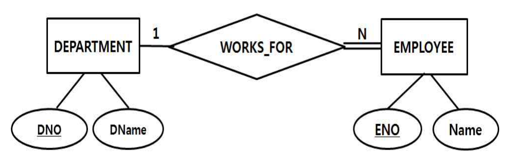
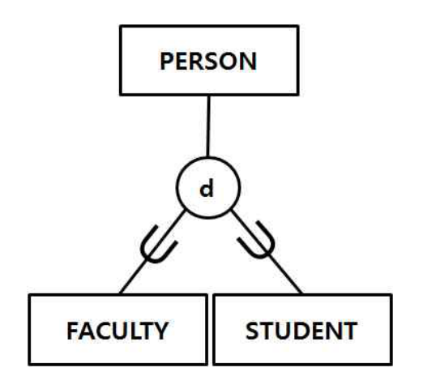

작성 기준: 업로드된 데이터베이스 강의자료(구환회기술사 Chapter1~7, 특강 및 출제 예상) 우선 근거, 외부지식은 보조적으로만 사용(강의자료 미수록 항목은 각 문항에 명시)
정답 출처: 2016년(제17회) 정보시스템 감리사 필기시험 문제 및 답안.pdf (원본 Bold 표시 정답 - 페이지 렌더 이미지 직접 대조 확인)
정답 신뢰도: 매우 높음 (stroke-text 자동추출 25/25 + 보기 영역 렌더 확대 육안 대조 25/25 일치, 계산·SQL·관계대수 문항은 별도 재검산)
★ 특이 문항 2건 — 모두 「2개 선택」: 66번(③④), 74번(②③) 은 문제 지문에 "옳은 것을 모두 고르시오. (2개 선택)" 이 명시된 출제 단계에서 의도된 복수정답이다. 이의제기에 따른 복수정답이 아니다.
기준 버전 주의: 본 회차는 2016년 시행분이다. 빅데이터 3V(51번), 공공데이터(70번) 등은 이후 개념·제도 변화가 있으므로, 각 문항의 「관련 이론 정리」 말미에 현행(2025년 기준) 보충사항을 병기하였다.
| 번호 | 정답 | 번호 | 정답 | 번호 | 정답 |
|---|---|---|---|---|---|
| 51 | ① | 61 | ③ | 71 | ② |
| 52 | ② | 62 | ② | 72 | ④ |
| 53 | ③ | 63 | ① | 73 | ③ |
| 54 | ① | 64 | ② | 74 | ②③ (2개 선택) |
| 55 | ④ | 65 | ③ | 75 | ③ |
| 56 | ③ | 66 | ③④ (2개 선택) | ||
| 57 | ④ | 67 | ① | ||
| 58 | ② | 68 | ① | ||
| 59 | ④ | 69 | ④ | ||
| 60 | ② | 70 | ③ |
2016년 제17회 데이터베이스는 SQL과 트랜잭션에 무게가 실린 회차다. 「2개 선택」 문항이 2개(66·74) 있어 정답 확정에 주의가 필요하다.
영역별 배분은 ① SQL·뷰 8문항(56·57·58·59·60·61·62·68), ② 트랜잭션·동시성 4문항(54·55·69·71), ③ 정규화·모델링 3문항(66·67·74), ④ 데이터 분석·빅데이터 4문항(51·52·72·73), ⑤ 보안·권한 2문항(53·63), ⑥ DB 개념·품질·제도 4문항(64·65·70·75) 이다.
이 회차의 특징 네 가지.
첫째, SQL 영역이 8문항으로 압도적이다. 관계대수 연산 역산(56), 완전외부조인 결과(57), 내장 SQL(58), DISTINCT(59), NOT EXISTS 부속질의(60), 뷰 정의(61), 뷰 갱신 제약(62·68)까지 폭넓게 출제되었다.
둘째, 트랜잭션이 4문항이며 난이도가 높다. 2PL 로크 전환(54), 타임스탬프 순서 기법과 토마스 기록 규칙(55), 오손 읽기 판정(69), 고립 수준별 조회 결과(71) 로 이론과 실행 결과를 모두 물었다.
셋째, 그림 판독 문항이 두 개(74·75) 다. 참여 제약(단일선/이중선) 과 세분화 제약(disjoint/partial) 을 정확히 읽어야 풀린다. 본 해설집에서는 두 문항에 원본 이미지 + 서술 전사를 병기했다.
넷째, 계산 문항 5개(52·56·57·67·72) 가 있다. 연관규칙 지지도·신뢰도(52), 관계대수 결과 역산(56·57), BCNF 분해 릴레이션 수(67), 재현율·정확률(72)이며 모두 직접 계산해야 한다.
강의자료 커버리지는 정규화·트랜잭션·SQL·연관규칙에서 양호하나, 필수 접근 제어(53)·타임스탬프 순서 기법(55)·내장 SQL(58)·데이터 품질 진단(65)·공공데이터(70) 는 업로드된 자료에 직접 수록되어 있지 않아 외부지식으로 보완했다.
| 항목 | 내용 |
|---|---|
| 문서명 | 정보시스템 감리사 데이터베이스 기출문제 해설집 - 2016년 제17회 |
| 대상 문항 | Q51 ~ Q75 (데이터베이스) |
| 원본 출처 | 2016년(제17회) 정보시스템 감리사 필기시험 문제 및 답안.pdf (p.12~18) |
| 정답 확인 방법 | stroke-text(글리프 render mode) 자동추출 + 보기 영역 렌더 확대 육안 대조 (25/25 일치) |
| 특이 문항 | 66번(2개 선택, ③④) · 74번(2개 선택, ②③) — 모두 지문에 명시된 의도된 복수정답 |
| 그림 포함 문항 | 74번 E-R 다이어그램(참여 제약) · 75번 E-R 세분화 다이어그램 — 이미지 + 서술 전사 병기 |
| 표·SQL 제시 문항 | 52·55·56·57·59·60·61·62·63·67·69·71·72번 — 이미지 대신 마크다운 표/코드블록으로 전사 |
| 근거 강의자료 | 구환회기술사 Chapter1(개요)·Chapter2(트랜잭션)·Chapter3(모델링)·Chapter4(SQL)·Chapter5(유형)·Chapter6(분석)·Chapter7(빅데이터), 데이터베이스 특강 및 출제 예상 |
| 강의자료 미수록(외부지식 보완) 항목 | 필수 접근 제어(53), 타임스탬프 순서·토마스 규칙(55), 내장 SQL(58), 데이터 품질 진단(65), 공공데이터(70) |
| 기준 버전 | 2016년 출제 당시 기준 + 현행(2025년) 보충사항 병기 |
현재 가장 널리 사용되는 빅데이터의 속성을 3V라고 정의할 때, 3V의 세 가지 속성이 바르게 짝지어진 것은?
① 규모(Volume), 다양성(Variety), 속도(Velocity)
② 규모(Volume), 다변성(Verbosity), 가시성(Visibility)
③ 가시성(Visibility), 다변성(Verbosity), 변동성(Variability)
④ 변동성(Variability), 다양성(Variety), 속도(Velocity)
정답 : ①번
정답 신뢰도 : 매우 높음 (원본 Bold 확인)
| 항목 | 내용 |
|---|---|
| 연도 | 2016년 (제17회) |
| 과목 | 데이터베이스 |
| 문항번호 | 51번 |
| 난이도 | 하 |
| 출제주제 | 빅데이터의 3대 속성(3V) |
빅데이터 3V는 빅데이터 영역의 기본 암기 문항으로 꾸준히 출제된다. 형태는 ① 3V 나열(본 문항), ② 4V·5V 확장, ③ 하둡 생태계 구성 요소, ④ 정형/반정형/비정형 구분, ⑤ NoSQL 연계다. 세 단어 암기만으로 확실히 득점한다.
| 연도 | 문항번호 | 핵심개념 |
|---|---|---|
| 2016 | 52 | 연관규칙 지지도·신뢰도 |
| 2017 | 72 | NoSQL 특징 |
| 2020 | 67 | NoSQL 범주 |
빅데이터 3V = Volume(규모) · Variety(다양성) · Velocity(속도)
4V = + Veracity(정확성) / 5V = + Value(가치)
Verbosity(다변성)·Visibility(가시성)는 존재하지 않거나 3V가 아닌 용어
Variability(변동성)는 확장 V이지 3V가 아니다 ← 가장 매력적인 함정
Volume이 빠진 보기는 즉시 탈락
빅데이터 3V의 정의
| V | 영문 | 한글 | 의미 |
|---|---|---|---|
| 1 | Volume | 규모 | 데이터의 양(테라·페타바이트급) |
| 2 | Variety | 다양성 | 정형 + 반정형 + 비정형 데이터 |
| 3 | Velocity | 속도 | 생성·처리 속도(실시간 스트리밍) |
보기 ①이 정확히 이 세 가지를 나열하고 있다. → 정답 ①
각 V의 상세
Volume(규모)
| 항목 | 내용 |
|---|---|
| 정의 | 기존 DBMS로 저장·관리·분석이 어려운 규모 |
| 단위 | TB → PB → EB |
| 대응 기술 | 분산 저장(HDFS), 샤딩 |
Variety(다양성)
| 데이터 유형 | 예 |
|---|---|
| 정형(structured) | 관계형 DB 테이블 |
| 반정형(semi-structured) | XML, JSON, 로그 |
| 비정형(unstructured) | 텍스트, 이미지, 동영상, 음성 |
비정형 데이터가 전체의 80% 이상을 차지한다는 것이 빅데이터 논의의 출발점이다.
Velocity(속도)
| 관점 | 내용 |
|---|---|
| 생성 속도 | 초당 수만 건의 이벤트 |
| 처리 속도 | 실시간·준실시간 분석 요구 |
| 대응 기술 | 스트리밍 처리(Kafka, Flink, Spark Streaming) |
Volume만 맞다.
| 용어 | 실제 |
|---|---|
| 다변성(Verbosity) | 3V에 없는 용어 — 사전적으로 "장황함" |
| 가시성(Visibility) | 3V에 없음 |
세 개 모두 3V가 아니다.
| 용어 | 비고 |
|---|---|
| 가시성(Visibility) | 3V에 없음 |
| 다변성(Verbosity) | 3V에 없음 |
| 변동성(Variability) | 확장 V 중 하나(데이터 흐름의 불규칙성) — 3V에는 미포함 |
Variety와 Velocity는 맞지만 Volume 대신 Variability가 들어갔다.
가장 매력적인 오답이다. Variability(변동성) 는 실제로 확장 V 중 하나이지만, 3V의 첫 번째는 반드시 Volume(규모) 이다.
| 3V | 보기 ④ |
|---|---|
| Volume | Variability ✗ |
| Variety | Variety ✓ |
| Velocity | Velocity ✓ |
소거 요령: Volume(규모)이 없는 보기는 즉시 탈락이다. 빅데이터의 정의에서 "데이터의 양"이 빠질 수는 없다.
- ③은 Volume 없음 → 탈락
- ④는 Volume 없음 → 탈락
- 남은 ①·② 중 Variety·Velocity가 있는 ① → 정답
빅데이터 V의 확장 — 3V → 5V → 7V
| V | 영문 | 의미 | 세대 |
|---|---|---|---|
| Volume | 규모 | 데이터의 양 | 3V |
| Variety | 다양성 | 정형·반정형·비정형 | 3V |
| Velocity | 속도 | 생성·처리 속도 | 3V |
| Veracity | 정확성·신뢰성 | 데이터의 품질·불확실성 | 4V(IBM) |
| Value | 가치 | 분석을 통한 비즈니스 가치 | 5V |
| Variability | 변동성 | 데이터 흐름의 불규칙성 | 6V |
| Visualization | 시각화 | 결과의 직관적 표현 | 7V |
시험 대비: 3V(Volume·Variety·Velocity) 는 반드시 암기하고, 4V의 Veracity(정확성), 5V의 Value(가치) 까지 알아 두면 대부분의 변형에 대응된다.
빅데이터 처리 기술 스택
| 계층 | 기술 |
|---|---|
| 수집 | Flume, Kafka, Sqoop, Logstash |
| 저장 | HDFS, NoSQL(HBase, Cassandra), 객체 스토리지(S3) |
| 처리 | MapReduce, Spark, Flink, Storm |
| 분석 | Hive, Pig, Spark SQL, R, Python |
| 시각화 | Tableau, Kibana, Superset |
| 관리 | YARN, ZooKeeper, Airflow |
하둡(Hadoop) 생태계 핵심
| 구성 요소 | 역할 |
|---|---|
| HDFS | 분산 파일 시스템(블록 단위 복제 저장) |
| MapReduce | 분산 병렬 처리 프레임워크 |
| YARN | 자원 관리·스케줄링 |
| HBase | 컬럼형 NoSQL |
| Hive | SQL 유사 질의(HiveQL) |
| Spark | 인메모리 처리(MapReduce보다 빠름) |
MapReduce의 동작
[Map] 입력을 (key, value) 쌍으로 변환, 분산 처리
↓
[Shuffle] 같은 key끼리 모음
↓
[Reduce] key별로 집계·병합
★ 대량 데이터를 여러 노드에 나눠 병렬 처리
빅데이터 분석 유형
| 유형 | 질문 | 기법 |
|---|---|---|
| 기술적(descriptive) | 무슨 일이 있었나 | 집계, 시각화 |
| 진단적(diagnostic) | 왜 일어났나 | 연관분석, 드릴다운 |
| 예측적(predictive) | 무엇이 일어날까 | 회귀, 분류, 시계열 |
| 처방적(prescriptive) | 무엇을 해야 하나 | 최적화, 시뮬레이션 |
정형 vs 반정형 vs 비정형
| 구분 | 특징 | 예 | 비중 |
|---|---|---|---|
| 정형 | 고정 스키마, 행·열 | RDB 테이블, CSV | 약 20% |
| 반정형 | 메타데이터 포함, 유연 | XML, JSON, 로그 | — |
| 비정형 | 구조 없음 | 텍스트, 이미지, 동영상 | 약 80% |
현행(2025년) 보충: 빅데이터 개념은 AI·클라우드와 결합하며 확장되었다.
변화 내용 데이터 레이크하우스 레이크(원시) + 웨어하우스(정형)의 결합(Databricks, Iceberg) 실시간 스트리밍 Kafka + Flink 기반 이벤트 중심 아키텍처 AI 학습 데이터 빅데이터가 LLM 학습의 원천으로 부상 데이터 메시(Data Mesh) 중앙집중 대신 도메인별 데이터 소유 MapReduce 쇠퇴 Spark·클라우드 DW로 대체 다만 3V 정의 자체는 여전히 표준으로 인용된다.
강의자료 근거: Chapter7(빅데이터)에 빅데이터 개념·3V·하둡 생태계가 수록되어 있다.
빅데이터 사업 감리에서는 3V 관점의 요건 검토가 출발점이다.
| V | 감리 점검 |
|---|---|
| Volume | 예상 데이터량 산정 근거, 저장 용량 계획 |
| Variety | 비정형 데이터 처리 방안, 스키마 관리 |
| Velocity | 실시간 요구 수준, 처리 지연 목표(SLA) |
감리에서는 ① 빅데이터 도입이 실제 3V 요건에 근거하는가("최신 기술이라서"는 부적절), ② 기존 RDBMS로 해결 가능한 규모는 아닌가, ③ 데이터 품질(Veracity) 확보 방안이 있는가, ④ 분석 결과의 활용(Value) 계획이 구체적인가를 점검한다.
흔한 결함 1: 데이터량이 수십 GB에 불과한데 하둡 클러스터를 구축해, 운영 복잡도만 늘고 RDBMS보다 느린 사례다. 하둡은 대량 배치에 최적화되어 있어 소량 데이터에는 오버헤드가 크다.
흔한 결함 2: 데이터를 대량 수집만 하고 활용 계획(Value)이 없어, 데이터 레이크가 "데이터 늪(data swamp)" 이 되는 사례다. 수집 전에 분석 목적을 정의해야 한다.
빅데이터 3V는 확실한 득점 문항이다.
핵심 암기
3V = Volume(규모) · Variety(다양성) · Velocity(속도)
4V = 3V + Veracity(정확성)
5V = 4V + Value(가치)
오답 유도 용어 — 3V가 아닌 것
| 용어 | 비고 |
|---|---|
| Verbosity(다변성) | 존재하지 않는 개념 |
| Visibility(가시성) | 3V에 없음 |
| Variability(변동성) | 6V의 확장 개념 |
| Visualization(시각화) | 7V의 확장 개념 |
| Validity(유효성) | 확장 개념 |
판정 요령
Volume·Variety·Velocity 세 단어가 모두 있는 보기를 찾는다. 하나라도 빠지면 오답이다.
다음과 같은 상품 구매 트랜잭션에 대해 연관규칙 탐사를 수행했다고 하자. 이 때 계산된 지지도(support)와 신뢰도(confidence) 로 옳지 않은 것은?
T1 = {milk, coke, beer}
T2 = {milk, pepsi, juice}
T3 = {milk, beer}
T4 = {coke, juice}
T5 = {milk, pepsi, beer}
① 항목집합 {beer, milk}의 지지도는 3/5이다.
② {milk} → beer의 지지도는 4/5이다.
③ {milk} → beer의 신뢰도는 3/4이다.
④ {juice} → milk의 신뢰도는 1/2이다.
정답 : ②번
정답 신뢰도 : 매우 높음 (원본 Bold 확인)
| 항목 | 내용 |
|---|---|
| 연도 | 2016년 (제17회) |
| 과목 | 데이터베이스 |
| 문항번호 | 52번 |
| 난이도 | 중 |
| 출제주제 | 연관규칙의 지지도(support)와 신뢰도(confidence) 계산 |
연관규칙 지표 계산은 데이터 마이닝 영역의 최빈 계산 문항이다. 형태는 ① 거래 리스트 → 지표 계산(본 문항), ② 분할표 → 지표 비교(2020년 68번), ③ 규칙 개수 산출, ④ Apriori 단계별 후보 집합이다. 분모 구분만 정확하면 확실히 득점한다.
| 연도 | 문항번호 | 핵심개념 |
|---|---|---|
| 2016 | 51 | 빅데이터 3V |
| 2016 | 73 | 예측 모델링(분류·회귀) |
| 2020 | 66 | 연관규칙 지지도·신뢰도 |
지지도(A→B) = (A와 B 모두 포함 거래) ÷ 전체 — 분자는 교집합이지 A만이 아니다
신뢰도(A→B) = (A와 B 모두 포함 거래) ÷ (A 포함 거래)
항목집합의 지지도 = 그 집합을 모두 포함한 거래 비율 — 규칙 지지도와 같은 값
지지도·향상도는 방향 무관(대칭) / 신뢰도는 방향에 따라 다름
본 문항: milk 4건, beer 3건, milk∩beer 3건 → 지지도 3/5(보기는 4/5, 오답), 신뢰도 3/4
항목별 출현 거래 정리
| 항목 | 포함된 거래 | 개수 |
|---|---|---|
| milk | T1, T2, T3, T5 | 4 |
| beer | T1, T3, T5 | 3 |
| coke | T1, T4 | 2 |
| pepsi | T2, T5 | 2 |
| juice | T2, T4 | 2 |
| milk ∩ beer | T1, T3, T5 | 3 |
| juice ∩ milk | T2 | 1 |
전체 거래 수 N = 5
② 검증 — 정답(틀린 보기)
$$\text{support}(\{milk\} \to beer) = \frac{|milk \cap beer|}{N} = \frac{3}{5}$$
| 항목 | 값 |
|---|---|
| milk와 beer를 모두 포함한 거래 | T1, T3, T5 → 3 |
| 전체 거래 | 5 |
| 지지도 | 3/5 |
보기는 4/5라고 했으므로 틀렸다. → 정답 ②
4/5는 무엇인가: milk 단독의 지지도다(T1,T2,T3,T5 = 4건). 규칙의 지지도는 "양쪽을 모두 포함한 거래" 를 세야 하는데, 선행 항목(milk)만 센 값을 제시한 전형적 함정이다.
연관규칙 3대 지표
| 지표 | 수식 | 분모 | 의미 |
|---|---|---|---|
| 지지도(support) | |A∩B| / N | 전체 거래 수 ★ | 규칙이 얼마나 자주 나타나는가 |
| 신뢰도(confidence) | |A∩B| / |A| | A 포함 거래 수 | A일 때 B일 조건부 확률 |
| 향상도(lift) | 신뢰도 / P(B) | B의 지지도 | 우연 대비 향상 정도 |
핵심 구분: 지지도의 분모는 항상 전체, 신뢰도의 분모는 선행 항목(A) 포함 거래다. 본 문항 ②는 분자를 잘못 잡은 경우다.
본 문제의 전체 지표 계산
| 규칙 | 지지도 | 신뢰도 | 향상도 |
|---|---|---|---|
| {milk} → beer | 3/5 = 0.6 | 3/4 = 0.75 | 0.75 / (3/5) = 1.25 |
| {beer} → milk | 3/5 = 0.6 | 3/3 = 1.0 | 1.0 / (4/5) = 1.25 |
| {juice} → milk | 1/5 = 0.2 | 1/2 = 0.5 | 0.5 / (4/5) = 0.625 |
| {coke} → juice | 1/5 = 0.2 | 1/2 = 0.5 | 0.5 / (2/5) = 1.25 |
방향에 따른 차이: 지지도는 방향과 무관하지만(A∩B는 대칭), 신뢰도는 방향에 따라 다르다. {milk}→beer는 0.75, {beer}→milk는 1.0이다.
향상도는 방향과 무관하다: lift(A→B) = lift(B→A).
향상도의 해석
| 값 | 의미 |
|---|---|
| > 1 | 양의 상관 — A가 B를 촉진 |
| = 1 | 독립 — 규칙에 의미 없음 |
| < 1 | 음의 상관 — A가 B를 억제 |
{juice} → milk 는 lift 0.625 < 1 이므로 음의 상관이다. 신뢰도가 50%로 나쁘지 않아 보이지만, milk는 원래 80%가 사는 상품이므로 juice 구매자는 오히려 milk를 덜 산다.
Apriori 알고리즘
1) 최소 지지도(min_sup) 설정
2) 1-항목집합 중 빈발 항목집합 L1 추출
3) Lk에서 후보 Ck+1 생성 (join)
4) Apriori 성질로 가지치기 (prune)
5) 지지도 계산 → Lk+1 확정
6) 빈발 집합이 없을 때까지 반복
7) 빈발 항목집합에서 min_conf 이상인 규칙 생성
Apriori 성질(하향 폐쇄성): "빈발 항목집합의 모든 부분집합은 빈발하다". 대우로 "비빈발 집합의 상위집합은 모두 비빈발" 이므로 탐색 공간을 크게 줄인다.
본 문제에 min_sup = 2/5 적용 시
| 항목집합 | 지지도 | 빈발? |
|---|---|---|
| {milk} | 4/5 | ✓ |
| {beer} | 3/5 | ✓ |
| {coke} | 2/5 | ✓ |
| {pepsi} | 2/5 | ✓ |
| {juice} | 2/5 | ✓ |
| {milk, beer} | 3/5 | ✓ |
| {milk, pepsi} | 2/5 | ✓ |
| {milk, coke} | 1/5 | ✗ |
| {milk, juice} | 1/5 | ✗ |
알고리즘 비교
| 알고리즘 | 방식 | 특징 |
|---|---|---|
| Apriori | 후보 생성 + 가지치기 | 이해 쉬움, DB 반복 스캔 |
| FP-Growth | FP-Tree 구성 | 후보 생성 없음, 스캔 2회, 빠름 |
| ECLAT | 수직 포맷(TID 리스트) | 교집합 연산 |
규칙 개수
k개 항목의 빈발 집합에서 만들 수 있는 연관규칙은 2^k − 2 개다.
강의자료 근거: Chapter6(분석)에 연관 규칙·Apriori가 수록되어 있다.
연관규칙은 장바구니 분석의 기본 도구다.
| 활용 | 예시 |
|---|---|
| 상품 진열 | milk 옆에 beer 배치 |
| 교차 판매 | "함께 구매한 상품" 추천 |
| 번들 기획 | milk + beer 세트 |
| 쿠폰 타게팅 | milk 구매자에게 beer 쿠폰 |
감리에서는 ① 최소 지지도·신뢰도 임계값의 근거가 있는가, ② 향상도를 함께 검토했는가(신뢰도만으로는 부적절), ③ 거래 데이터의 기간·범위가 대표성을 갖는가, ④ 상관관계를 인과관계로 해석하고 있지 않은가를 점검한다.
흔한 결함: 신뢰도만 높은 규칙(예: "우유 → 비닐봉투", 신뢰도 95%)을 채택해 의미 없는 프로모션을 기획하는 경우다. 향상도가 1.0 근처면 비닐봉투는 원래 95%가 사는 품목이라는 뜻이다.
연관규칙 계산은 분모·분자 구분이 전부다.
분모·분자 구분표 — 반드시 암기
| 지표 | 분자 | 분모 |
|---|---|---|
| 지지도(A→B) | A와 B 모두 포함 거래 수 | 전체 거래 수 |
| 신뢰도(A→B) | A와 B 모두 포함 거래 수 | A 포함 거래 수 |
| 향상도(A→B) | 신뢰도 | B의 지지도 |
분자는 지지도·신뢰도가 동일하다. 분모만 다르다.
풀이 절차
| 단계 | 작업 |
|---|---|
| 1 | 전체 거래 수 N 확인 |
| 2 | 각 항목의 출현 거래 표로 정리 |
| 3 | 교집합 거래 수 세기 |
| 4 | 지지도 = 교집합 ÷ N, 신뢰도 = 교집합 ÷ A |
감점 포인트
| 실수 | 예방 |
|---|---|
| 규칙 지지도에 A만의 개수 사용 | 분자는 A∩B(← 본 문항 ②) |
| 지지도 분모에 A 개수 | 지지도는 항상 전체 |
| 방향 혼동 | 신뢰도는 A→B의 분모가 A |
| 거래 세기 누락 | 표로 체크 |
검산 성질
| 성질 | 내용 |
|---|---|
| 지지도 ≤ 신뢰도 | 분모가 N ≥ |A| |
| 지지도(A→B) = 지지도(B→A) | 대칭 |
| 신뢰도는 방향에 따라 다름 | 비대칭 |
| 향상도(A→B) = 향상도(B→A) | 대칭 |
$$\text{support}(\{beer, milk\}) = \frac{3}{5}$$
항목집합의 지지도는 그 집합을 모두 포함한 거래의 비율이다. T1, T3, T5 세 건이므로 3/5 ✓
①과 ②의 관계: 항목집합 {beer,milk}의 지지도와 규칙 {milk}→beer의 지지도는 같은 값이다. 둘 다 "milk와 beer를 모두 포함한 거래의 비율" 이기 때문이다.
따라서 ①이 3/5이면 ②도 3/5여야 하는데 4/5라고 했으므로 ②가 틀렸다. 두 보기를 대조하는 것만으로 판정할 수 있다.
$$\text{confidence}(\{milk\} \to beer) = \frac{|milk \cap beer|}{|milk|} = \frac{3}{4}$$
| 항목 | 값 |
|---|---|
| 분자: milk와 beer 모두 포함 | 3 |
| 분모: milk 포함 거래 | 4 |
| 신뢰도 | 3/4 = 75% |
의미: milk를 산 4명 중 3명이 beer도 샀다.
$$\text{confidence}(\{juice\} \to milk) = \frac{|juice \cap milk|}{|juice|} = \frac{1}{2}$$
| 항목 | 값 |
|---|---|
| juice 포함 거래 | T2, T4 → 2 |
| juice와 milk 모두 포함 | T2 → 1 |
| 신뢰도 | 1/2 = 50% |
T4 = {coke, juice} 에는 milk가 없으므로 제외된다.
소거 요령: ①과 ②를 먼저 대조한다.
보기 대상 값 ① 항목집합 {beer,milk}의 지지도 3/5 ② 규칙 {milk}→beer의 지지도 4/5 두 값은 정의상 같아야 하는데 다르다 → 둘 중 하나가 틀렸다.
실제로 세어 보면 milk∩beer = 3건이므로 3/5가 맞고 ②가 오답이다.
데이터 객체에 대한 제어 기법 중 필수 접근 제어(mandatory access control) 에 대한 설명으로 옳지 않은 것은?
① 데이터 객체에 대해서는 일정한 비밀 등급이, 사용자에 대해서는 일정한 허가 등급이 지정된다.
② 사용자의 허가 등급이 데이터의 비밀 등급보다 크거나 같은 경우에 판독이 가능하다.
③ 사용자의 허가 등급이 데이터의 비밀 등급보다 커야 갱신이 가능하다.
④ 보안 등급은 극비(top secret) > 비밀(secret) > 대외비(confidential) > 일반(unclassified) 의 순서이다.
정답 : ③번
정답 신뢰도 : 매우 높음 (원본 Bold 확인)
| 항목 | 내용 |
|---|---|
| 연도 | 2016년 (제17회) |
| 과목 | 데이터베이스 |
| 문항번호 | 53번 |
| 난이도 | 중상 |
| 출제주제 | 필수 접근 제어(MAC, Mandatory Access Control) |
접근 제어 모델은 DB 보안 영역에서 간헐 출제되며, 보안 과목과 겹친다. 형태는 ① MAC 특성 정오(본 문항), ② DAC/MAC/RBAC 비교, ③ BLP vs Biba 규칙 구분, ④ 다중 인스턴스화 개념이다. BLP 두 규칙의 부등호가 가장 자주 나오는 판별 지점이다.
| 연도 | 문항번호 | 핵심개념 |
|---|---|---|
| 2016 | 63 | GRANT/REVOKE(DAC) |
| 2017 | 69 | 권한 전파·연쇄 회수 |
| 2019 | 53 | 뷰를 이용한 보안 |
BLP 모델: No Read Up(판독은 허가 ≥ 비밀) + No Write Down(기록은 허가 ≤ 비밀)
"읽기는 아래로, 쓰기는 위로" — 두 부등호가 반대 방향
기록에 "허가 > 비밀"을 요구하는 서술은 항상 오답
Biba는 BLP와 반대(무결성 목적): 읽기는 위로, 쓰기는 아래로
등급 = 극비(Top Secret) > 비밀(Secret) > 대외비(Confidential) > 일반(Unclassified)
MAC = 시스템 강제(등급) / DAC = 소유자 재량(GRANT) / RBAC = 역할 기반
Bell-LaPadula(BLP) 모델 — 기밀성 중심 MAC
| 규칙 | 정식 명칭 | 내용 | 조건 |
|---|---|---|---|
| 단순 보안 규칙 | ss-property | No Read Up — 위 등급을 읽을 수 없다 | 판독: 허가 ≥ 비밀 |
| 성형 규칙 | *-property | No Write Down — 아래 등급에 쓸 수 없다 | 기록: 허가 ≤ 비밀 |
보기 ③ 검증 — 정답(틀린 보기)
[No Write Down 원칙]
극비(4) ────── 사용자(허가 등급 2, 대외비)
비밀(3) │
대외비(2) ◀──────────┤ 기록 가능 (같은 등급)
일반(1) ◀── ✗ ─────┘ 기록 불가! (아래로 못 씀)
★ 위쪽(극비·비밀)에는 기록 가능
★ 아래쪽(일반)에는 기록 불가
따라서 기록(갱신) 조건은
$$\text{허가 등급} \le \text{비밀 등급}$$
보기 ③은 "허가 등급이 비밀 등급보다 커야 갱신 가능" 이라고 했으므로 부등호 방향이 정반대다.
→ 정답 ③
왜 아래로 쓰면 안 되는가 — 정보 유출 방지
[허용한다면 생기는 문제]
극비 등급 사용자가
① 극비 문서를 읽음 (No Read Up 위반 아님 — 같은 등급)
② 일반 등급 문서에 그 내용을 씀
↓
일반 등급 사용자가 그 문서를 읽음
↓
★ 극비 정보가 일반 등급으로 유출됨!
No Write Down은 "정보가 낮은 등급으로 흘러내리는 것"을 원천 차단한다. 이것이 MAC의 핵심 목적이다.
올바른 서술로 수정하면
"사용자의 허가 등급이 데이터의 비밀 등급보다 작거나 같은 경우에 갱신(기록)이 가능하다."
접근 제어 모델 3종 비교
| 모델 | 영문 | 권한 결정 주체 | 특징 |
|---|---|---|---|
| 임의 접근 제어 | DAC | 객체 소유자 | GRANT/REVOKE, 유연하나 통제 어려움 |
| 필수 접근 제어 | MAC | 시스템(보안 관리자) | 등급 기반, 강력하나 경직 |
| 역할 기반 접근 제어 | RBAC | 역할(role) | 관리 효율, 실무 표준 |
| 구분 | DAC | MAC | RBAC |
|---|---|---|---|
| 권한 부여 | 소유자 재량 | 시스템 강제 | 역할에 부여 |
| 유연성 | 높음 | 낮음 | 중간 |
| 보안 강도 | 낮음 | 최고 | 높음 |
| 관리 부담 | 사용자 증가 시 폭증 | 등급 설계 | 낮음 |
| 적용 | 일반 DBMS | 군·정보기관 | 기업 시스템 |
Bell-LaPadula 모델 — 기밀성(Confidentiality)
| 규칙 | 내용 | 표어 |
|---|---|---|
| ss-property(단순 보안) | 허가 ≥ 비밀일 때 읽기 | No Read Up |
| *-property(성형) | 허가 ≤ 비밀일 때 쓰기 | No Write Down |
| 강한 *-property | 허가 = 비밀일 때만 쓰기 | 읽기·쓰기 모두 같은 등급 |
| ds-property(임의 보안) | 접근 행렬로 추가 제어 | DAC 결합 |
[BLP 요약도]
높은 등급 ┌──────┐
│ 극비 │ ◀── 쓰기 가능(Write Up)
├──────┤
│ 비밀 │
사용자 → ├──────┤ ◀── 읽기·쓰기 모두 가능(같은 등급)
(대외비) │대외비│
├──────┤
│ 일반 │ ──▶ 읽기 가능(Read Down)
낮은 등급 └──────┘
★ 읽기는 아래로(Read Down), 쓰기는 위로(Write Up)
Biba 모델 — 무결성(Integrity)
BLP와 정확히 반대다.
| 규칙 | 내용 | 표어 |
|---|---|---|
| 단순 무결성 | 무결성 등급 ≤ 객체 등급일 때 읽기 | No Read Down |
| *-무결성 | 무결성 등급 ≥ 객체 등급일 때 쓰기 | No Write Up |
| 모델 | 목적 | 읽기 | 쓰기 |
|---|---|---|---|
| BLP | 기밀성(유출 방지) | 아래로(Read Down) | 위로(Write Up) |
| Biba | 무결성(오염 방지) | 위로(Read Up) | 아래로(Write Down) |
직관적 이해
- BLP: 기밀 정보가 아래로 새는 것을 막는다 → 쓰기를 위로만
- Biba: 저품질 정보가 위로 올라오는 것을 막는다 → 쓰기를 아래로만
기타 보안 모델
| 모델 | 목적 |
|---|---|
| Clark-Wilson | 상업적 무결성(잘 구성된 트랜잭션, 직무 분리) |
| Chinese Wall(Brewer-Nash) | 이해충돌 방지(컨설팅 업계) |
| Lattice 모델 | 등급을 격자 구조로 일반화 |
다단계 보안(MLS) 데이터베이스
| 개념 | 내용 |
|---|---|
| 다중 인스턴스화(polyinstantiation) | 같은 키에 등급별로 다른 값을 저장 |
| 은닉 채널(covert channel) | 정상 경로 외의 정보 유출 경로 |
| 추론 통제 | 낮은 등급 정보 조합으로 높은 등급 추론 방지 |
다중 인스턴스화 예시
사원 테이블 (MLS)
┌──────┬────────┬────────┬────────┐
│ 사번 │ 이름 │ 임무 │ 등급 │
├──────┼────────┼────────┼────────┤
│ E001 │ 홍길동 │ 일반업무│ 일반 │ ← 일반 등급 사용자가 보는 값
│ E001 │ 홍길동 │ 특수임무│ 극비 │ ← 극비 등급 사용자가 보는 값
└──────┴────────┴────────┴────────┘
★ 같은 사번에 두 개의 행 — 등급에 따라 다른 진실을 본다
★ 낮은 등급 사용자는 극비 행의 존재조차 알 수 없다
왜 필요한가: 일반 등급 사용자가
INSERT (E001, 홍길동, 일반업무)를 시도할 때, "이미 존재한다"고 거부하면 극비 행의 존재가 노출된다(은닉 채널). 그래서 별도 행으로 저장한다.
DAC의 구현 — SQL의 GRANT/REVOKE
GRANT SELECT ON EMPLOYEE TO Mary; -- 소유자가 재량으로 부여
REVOKE SELECT ON EMPLOYEE FROM John;
대부분의 상용 DBMS는 DAC + RBAC를 제공하며, MAC은 Oracle Label Security, PostgreSQL sepgsql 등 별도 확장 기능으로 지원한다.
현행(2025년) 보충: 접근 제어는 ABAC(속성 기반) 으로 확장되었다.
모델 판단 기준 RBAC 역할 ABAC 주체·객체·환경 속성(시간, 위치, 기기) 제로 트러스트 모든 접근을 검증, 최소 권한 DB 영역에서는 행 수준 보안(RLS), 동적 데이터 마스킹이 실용적 대안으로 자리 잡았다.
강의자료 근거: 접근 제어 모델(MAC/DAC)은 강의자료에 미수록이다. 보안 과목의 「접근통제」 영역과 겹치므로 함께 학습하는 것이 효율적이다.
MAC은 높은 보안 등급이 요구되는 시스템에 적용된다.
| 분야 | 적용 |
|---|---|
| 군·정보기관 | 비밀 등급별 문서 관리 |
| 정부 기밀 시스템 | 국가 비밀 취급 |
| 금융 핵심 시스템 | 등급별 데이터 분리 |
| 일반 기업 | RBAC + RLS 조합이 현실적 |
감리에서는 ① 보안 등급 체계가 정의되고 데이터에 부여되었는가, ② 접근 제어 모델이 업무 특성에 맞는가(일반 기업에 MAC은 과도), ③ 은닉 채널·추론 공격 대응이 검토되었는가, ④ 최소 권한 원칙이 적용되는가를 점검한다.
흔한 결함: 일반 기업 시스템에 MAC을 도입하려다 업무 유연성이 극도로 떨어져 결국 예외 처리를 남발하고 보안 정책이 유명무실해지는 사례다. RBAC + 행 수준 보안 조합이 현실적이다.
MAC 문항은 BLP 두 규칙의 부등호 방향이 전부다.
핵심 규칙 — 반드시 암기
| 연산 | 규칙 | 부등호 | 표어 |
|---|---|---|---|
| 판독(read) | ss-property | 허가 ≥ 비밀 | No Read Up |
| 기록(write) | *-property | 허가 ≤ 비밀 | No Write Down |
암기법: "읽기는 아래로, 쓰기는 위로"(BLP)
반대는 Biba: "읽기는 위로, 쓰기는 아래로"
참인 서술 (○)
| 항목 |
|---|
| 객체에 비밀 등급, 주체에 허가 등급 |
| 허가 ≥ 비밀 이면 판독 가능 |
| 허가 ≤ 비밀 이면 기록 가능 |
| 등급 체계 = 극비 > 비밀 > 대외비 > 일반 |
| 시스템이 강제(소유자 재량 아님) |
거짓인 서술 (✗) — 출제 단골
| 틀린 서술 | 실제 |
|---|---|
| 허가 > 비밀이어야 기록 가능 | 허가 ≤ 비밀(← 본 문항 ③) |
| 허가 ≤ 비밀이면 판독 가능 | 허가 ≥ 비밀 |
| 소유자가 권한을 부여한다 | DAC의 특징 |
| MAC이 DAC보다 유연하다 | 경직적 |
감점 포인트
| 실수 | 예방 |
|---|---|
| 읽기·쓰기 부등호를 같게 | 반대 방향이다 |
| BLP와 Biba 혼동 | BLP=기밀성, Biba=무결성 |
| MAC과 DAC 혼동 | MAC=시스템 강제, DAC=소유자 재량 |
MAC의 기본 구조다.
| 대상 | 부여되는 것 | 영문 |
|---|---|---|
| 데이터 객체(파일, 레코드) | 비밀 등급 | classification |
| 사용자·주체 | 허가 등급 | clearance |
시스템이 강제한다: 소유자가 임의로 권한을 줄 수 없고, 보안 관리자가 정한 등급 정책에 따라 시스템이 접근을 결정한다. 이것이 "필수(mandatory)" 의 의미다.
No Read Up(ss-property) 이다.
극비(4) ◀── ✗ ── 읽기 불가
비밀(3) ◀── ✗ ── 읽기 불가
대외비(2) ◀────────┤ 사용자(허가 등급 2)
일반(1) ◀────────┘ 읽기 가능
★ 자기 등급 이하만 읽을 수 있다
$$\text{판독 가능} \iff \text{허가 등급} \ge \text{비밀 등급}$$
보기 ②는 정확하다.
미 국방부 기준의 표준 보안 등급 체계다.
| 등급 | 영문 | 수준 |
|---|---|---|
| 극비 | Top Secret | 최고 |
| 비밀 | Secret | 높음 |
| 대외비 | Confidential | 중간 |
| 일반 | Unclassified | 최저 |
국내 대응: 「보안업무규정」상 Ⅰ급비밀 > Ⅱ급비밀 > Ⅲ급비밀 > 대외비 체계를 쓰기도 한다. 시험은 국제 표준 4단계를 기준으로 출제된다.
소거 요령: BLP의 두 규칙만 기억하면 즉시 판정된다.
연산 규칙 부등호 판독(read) No Read Up 허가 ≥ 비밀 기록(write) No Write Down 허가 ≤ 비밀 ②는 판독에 ≥ 를 썼으므로 옳고, ③은 기록에 > 를 썼으므로 틀렸다.
"읽기는 아래로, 쓰기는 위로" 라고 외우면 헷갈리지 않는다.
2단계 로킹 규약(2 phase locking protocol) 의 로크 전환(혹은 로크 변환) 에 대한 다음 설명 중 옳은 것은?
① 항목 X에 read_lock(X)를 수행하여 공유 로크를 획득한 후 나중에 write_lock(X)를 수행하여 배타적 로크로 로크를 상승(upgrade)시킬 수 있다.
② 항목 X에 write_lock(X)를 수행하여 배타적 로크를 획득한 후 나중에 read_lock(X)를 수행하여 공유 로크로 로크를 상승시킬 수 있다.
③ 항목 X에 read_lock(X)를 수행하여 공유 로크를 획득한 후 나중에 write_lock(X)를 수행하여 배타적 로크로 로크를 하강(downgrade) 시킬 수 있다.
④ 항목 X에 read_lock(X)를 수행하여 배타적 로크를 획득한 후 나중에 write_lock(X)를 수행하여 공유 로크로 로크를 하강시킬 수 있다.
정답 : ①번
정답 신뢰도 : 매우 높음 (원본 Bold 확인)
| 항목 | 내용 |
|---|---|
| 연도 | 2016년 (제17회) |
| 과목 | 데이터베이스 |
| 문항번호 | 54번 |
| 난이도 | 중 |
| 출제주제 | 2단계 로킹 규약의 로크 전환(lock conversion) |
2PL과 로크 전환은 트랜잭션 영역의 단골 문항이다. 형태는 ① 로크 전환 정오(본 문항), ② 2PL 단계 판정, ③ 2PL 변형 비교(엄격·보수적), ④ 로크 호환성 행렬(2019년 71번), ⑤ 교착 상태 연계다. S/X 대응과 상승/하강 방향 두 가지만 정확하면 확실히 득점한다.
| 연도 | 문항번호 | 핵심개념 |
|---|---|---|
| 2016 | 55 | 타임스탬프 순서 기법 |
| 2016 | 69 | 오손 읽기 판정 |
| 2019 | 71 | 다중 단위 로킹 호환성 행렬 |
read_lock = 공유 로크(S) / write_lock = 배타 로크(X) — 로크 강도는 S < X
S → X = 상승(upgrade), 확장 단계에서만 가능
X → S = 하강(downgrade), 축소 단계에서만 가능
2PL: 확장 단계는 획득만, 축소 단계는 해제만 — 한 번 해제하면 다시 획득 불가
2PL은 직렬 가능성을 보장하지만 교착 상태는 막지 못한다(보수적 2PL 제외)
상승 데드락 방지 =SELECT ... FOR UPDATE(처음부터 X 로크)
로크의 종류와 대응
| 연산 | 로크 종류 | 기호 | 성격 |
|---|---|---|---|
| read_lock(X) | 공유 로크(shared) | S | 여러 트랜잭션이 동시 보유 가능 |
| write_lock(X) | 배타 로크(exclusive) | X | 단독 보유만 가능 |
로크 강도: S < X (X가 더 강한 로크)
로크 전환의 두 방향
| 전환 | 방향 | 강도 변화 | 가능한 단계 |
|---|---|---|---|
| 상승(upgrade) | S → X | 약함 → 강함 | 확장(growing) 단계 ★ |
| 하강(downgrade) | X → S | 강함 → 약함 | 축소(shrinking) 단계 |
보기 ① 검증 — 정답
read_lock(X) → 공유 로크(S) 획득
↓
write_lock(X) → 배타 로크(X)로 전환
S → X = 약한 로크 → 강한 로크 = 상승(upgrade) ✓
| 항목 | 보기 ①의 서술 | 판정 |
|---|---|---|
| 시작 로크 | read_lock → 공유 | ✓ |
| 전환 후 | write_lock → 배타 | ✓ |
| 명칭 | 상승(upgrade) | ✓ |
세 요소가 모두 정확하다. → 정답 ①
2PL과의 관계: 상승은 로크를 새로 획득하는 것이므로 확장 단계에서만 허용된다. 축소 단계(로크를 해제하기 시작한 후)에는 새로운 로크를 얻을 수 없으므로 상승도 불가능하다.
write_lock(X) → 배타 로크(X)
↓
read_lock(X) → 공유 로크(S)
X → S = 강한 로크 → 약한 로크 = 하강(downgrade)
전환 방향 자체는 가능하지만 명칭이 틀렸다. X → S 는 하강(downgrade) 이지 상승이 아니다.
| 항목 | 보기 ② | 실제 |
|---|---|---|
| 전환 방향 | X → S | ✓ 가능 |
| 명칭 | 상승 | 하강 ✗ |
보기 ①과 전환 방향은 같지만 명칭이 반대다.
| 항목 | 보기 ③ | 실제 |
|---|---|---|
| 전환 방향 | S → X | ✓ 가능 |
| 명칭 | 하강 | 상승 ✗ |
①과 ③은 정확히 같은 동작에 다른 이름을 붙였다. 둘 중 하나만 맞을 수 있으며, S → X 는 강해지는 것이므로 상승이다.
두 곳이 틀렸다.
| 오류 | 내용 |
|---|---|
| "read_lock(X)를 수행하여 배타적 로크를 획득" | read_lock은 공유 로크를 얻는다 ✗ |
| "write_lock으로 공유 로크로 하강" | write_lock은 배타 로크를 얻는다 ✗ |
연산과 로크 종류의 대응 자체가 뒤바뀌었다.
[올바른 대응]
read_lock(X) → 공유 로크(S)
write_lock(X) → 배타 로크(X)
[보기 ④의 주장]
read_lock(X) → 배타 로크 ✗
write_lock(X) → 공유 로크 ✗
소거 요령: 두 단계로 판정한다.
1) 연산-로크 대응이 맞는가
- read_lock = 공유, write_lock = 배타
- ④는 대응이 뒤바뀜 → 즉시 탈락2) 전환 방향과 명칭이 맞는가
- S → X = 상승(upgrade), X → S = 하강(downgrade)
- ②는 X→S를 상승이라 함 → 탈락
- ③은 S→X를 하강이라 함 → 탈락
- ①만 정확 → 정답
2단계 로킹 규약(2PL)의 구조
로크 수
▲
│ ┌─────────┐
│ ╱ ╲
│ ╱ ╲
│ ╱ ╲
└────┴─────────────────┴────▶ 시간
확장 단계 축소 단계
(growing) (shrinking)
로크 획득만 로크 해제만
↑
로크 정점(lock point)
| 단계 | 허용 연산 | 금지 연산 |
|---|---|---|
| 확장(growing) | 로크 획득, 상승(upgrade) | 로크 해제 |
| 축소(shrinking) | 로크 해제, 하강(downgrade) | 로크 획득 |
핵심 규칙: 한 번이라도 로크를 해제하면 그 이후로는 새로운 로크를 획득할 수 없다. 이것이 2PL이 직렬 가능성을 보장하는 근거다.
로크 전환의 단계별 허용 여부
| 전환 | 성격 | 확장 단계 | 축소 단계 |
|---|---|---|---|
| 상승(S → X) | 로크 획득에 준함 | ○ 가능 | ✗ 불가 |
| 하강(X → S) | 로크 해제에 준함 | ✗ 불가 | ○ 가능 |
이유
- 상승은 더 강한 권한을 새로 얻는 것이므로 획득으로 간주 → 확장 단계
- 하강은 권한을 일부 내려놓는 것이므로 해제로 간주 → 축소 단계
로크 호환성 행렬
| S(공유) | X(배타) | |
|---|---|---|
| S | ○ 호환 | ✗ |
| X | ✗ | ✗ |
S끼리만 호환된다. 읽기는 여러 트랜잭션이 동시에 해도 문제없기 때문이다.
상승 시 발생하는 문제 — 상승 데드락
T1: read_lock(X) → S 획득
T2: read_lock(X) → S 획득 (S끼리 호환)
T1: write_lock(X) → X로 상승 시도 → T2의 S 때문에 대기
T2: write_lock(X) → X로 상승 시도 → T1의 S 때문에 대기
★ 교착 상태!
| 대응 | 내용 |
|---|---|
| 갱신 로크(U lock) | 상승 예정임을 미리 표시 — SQL Server의 UPDLOCK |
| 처음부터 X 획득 | SELECT ... FOR UPDATE |
| 데드락 탐지 | 희생자 롤백 |
SELECT ... FOR UPDATE가 존재하는 이유가 바로 이것이다. 읽자마자 배타 로크를 잡아 상승 데드락을 예방한다.
2PL의 변형
| 변형 | 특징 | 연쇄 롤백 | 교착 |
|---|---|---|---|
| 기본 2PL | 확장·축소 분리 | 발생 가능 | 발생 가능 |
| 엄격 2PL(Strict) | X 로크를 커밋까지 유지 | 방지 | 발생 가능 |
| 강한 엄격 2PL(Rigorous) | 모든 로크를 커밋까지 유지 | 방지 | 발생 가능 |
| 보수적 2PL(Conservative) | 시작 시 전부 획득 | 방지 | 발생 안 함 |
대부분의 상용 DBMS는 엄격 2PL을 채택한다. 연쇄 롤백을 방지하면서도 동시성을 어느 정도 확보하기 때문이다.
| 변형 | 하강 가능? |
|---|---|
| 기본 2PL | 축소 단계에서 가능 |
| 엄격/강한 엄격 2PL | X 로크를 커밋까지 유지하므로 사실상 하강 없음 |
| 보수적 2PL | 시작 시 모두 획득 |
2PL이 보장하는 것과 못 하는 것
| 항목 | 보장 여부 |
|---|---|
| 충돌 직렬 가능성 | ○ 보장 ★ |
| 교착 상태 방지 | ✗ 못 함(보수적 2PL 제외) |
| 연쇄 롤백 방지 | ✗ 못 함(엄격 2PL은 방지) |
| 기아 상태 방지 | ✗ |
가장 자주 출제되는 지점: "2PL은 직렬 가능성을 보장하지만 교착 상태를 막지 못한다."
다중 단위 로킹의 로크 종류(참고)
| 로크 | 의미 |
|---|---|
| IS | 하위에 S 로크를 걸 의도 |
| IX | 하위에 X 로크를 걸 의도 |
| S | 이 노드와 하위 전체 읽기 |
| SIX | 전체 읽기 + 일부 하위 쓰기 의도 |
| X | 이 노드와 하위 전체 배타 |
강의자료 근거: Chapter2(트랜잭션)에 2PL·로킹·로크 전환이 수록되어 있다.
로크 전환은 read-modify-write 패턴에서 자연스럽게 발생한다.
-- 상승이 발생하는 전형적 패턴
SELECT 재고 FROM 상품 WHERE 상품코드 = 'A'; -- S 로크
-- (애플리케이션에서 계산)
UPDATE 상품 SET 재고 = :계산값 WHERE 상품코드 = 'A'; -- X로 상승 → 데드락 위험
-- 개선 : 처음부터 X 로크
SELECT 재고 FROM 상품 WHERE 상품코드 = 'A' FOR UPDATE; -- 처음부터 X
UPDATE 상품 SET 재고 = :계산값 WHERE 상품코드 = 'A';
| 상황 | 위험 | 대응 |
|---|---|---|
| 조회 후 갱신 | 상승 데드락 | FOR UPDATE |
| 동시 상승 시도 | 교착 | 갱신 로크(U) |
| 장시간 로크 보유 | 대기 누적 | 트랜잭션 단축 |
감리에서는 ① read-modify-write 패턴에 FOR UPDATE 나 원자적 UPDATE가 적용되었는가, ② 교착 발생 이력이 모니터링되는가, ③ 재시도 로직이 있는가, ④ 트랜잭션 범위가 과도하게 길지 않은가를 점검한다.
흔한 결함: 재고를 SELECT 로 조회한 뒤 UPDATE 하는 코드가 여러 세션에서 동시 실행되어, 상승 데드락이 산발적으로 발생하는 사례다. 재현이 어려워 원인 파악에 시간이 오래 걸린다. SELECT ... FOR UPDATE 또는 UPDATE 재고 = 재고 - :수량 원자적 갱신으로 해결한다.
로크 전환 문항은 두 가지 대응만 확인하면 된다.
대응 1 — 연산과 로크 종류
| 연산 | 로크 |
|---|---|
| read_lock | 공유(S) |
| write_lock | 배타(X) |
대응 2 — 전환 방향과 명칭
| 전환 | 명칭 | 가능 단계 |
|---|---|---|
| S → X | 상승(upgrade) | 확장 단계 |
| X → S | 하강(downgrade) | 축소 단계 |
암기법: "약한 것에서 강한 것으로 = 상승", "강한 것에서 약한 것으로 = 하강". 로크 강도는 S < X 다.
참인 서술 (○)
| 항목 |
|---|
| S → X 는 상승(upgrade) |
| X → S 는 하강(downgrade) |
| 상승은 확장 단계에서만 |
| 하강은 축소 단계에서만 |
| read_lock = 공유, write_lock = 배타 |
| 2PL은 직렬 가능성 보장, 교착은 못 막음 |
거짓인 서술 (✗) — 출제 단골
| 틀린 서술 | 실제 |
|---|---|
| X → S 가 상승 | 하강(← ②) |
| S → X 가 하강 | 상승(← ③) |
| read_lock으로 배타 로크 획득 | 공유 로크(← ④) |
| 상승이 축소 단계에서 가능 | 확장 단계에서만 |
| 2PL이 교착을 방지한다 | 못 막음 |
감점 포인트
| 실수 | 예방 |
|---|---|
| 상승·하강 명칭 혼동 | S < X 강도 기준 |
| 연산-로크 대응 혼동 | read=S, write=X |
| 단계 조건 누락 | 상승=확장, 하강=축소 |
다음 스케줄에 대해 타임스탬프 순서 기법을 적용하였을 때 설명이 올바른 것은?
(단, TS(Ti)는 트랜잭션 Ti의 타임스탬프이고, read_TS(x)는 read(x) 연산을 성공적으로 수행한 트랜잭션들의 타임스탬프 중 가장 큰 것이고, write_TS(x)는 write(x) 연산을 성공적으로 수행한 트랜잭션들의 타임스탬프 중 가장 큰 것이다. read_TS(x)와 write_TS(x)의 초기값은 모두 1이라고 가정한다.)
2시: T1 read(x)
3시: T2 write(x)
4시: T1 write(x)
① T1은 read(x)를 실행하고 read_TS(x)를 그대로 둔다.
② T2의 write(x)는 TS(T2) ≥ write_TS(x)이므로 거부된다.
③ 타임스탬프 순서 기법을 적용하면, 위에 주어진 스케줄은 직렬 가능하다.
④ 토마스(Thomas)의 기록 규칙을 적용하면, T1의 write(x)는 무시된다.
정답 : ④번
정답 신뢰도 : 매우 높음 (원본 Bold 확인)
| 항목 | 내용 |
|---|---|
| 연도 | 2016년 (제17회) |
| 과목 | 데이터베이스 |
| 문항번호 | 55번 |
| 난이도 | 상 |
| 출제주제 | 타임스탬프 순서 기법과 토마스의 기록 규칙(Thomas' Write Rule) |
타임스탬프 순서 기법은 트랜잭션 영역의 심화 문항이다. 형태는 ① 스케줄 → 허용·거부 판정(본 문항), ② read_TS/write_TS 값 추적, ③ 토마스 규칙 적용 결과, ④ 2PL과의 비교다. 규칙 두 줄과 토마스 규칙만 정확하면 대응된다.
| 연도 | 문항번호 | 핵심개념 |
|---|---|---|
| 2016 | 54 | 2PL 로크 전환 |
| 2016 | 69 | 오손 읽기 판정 |
| 2017 | 70 | 충돌 직렬 가능성 |
read 거부 조건: TS(Ti) < write_TS(x) / write 거부 조건: TS(Ti) < read_TS(x) 또는 < write_TS(x)
read 성공 시 read_TS(x) = max(read_TS, TS(Ti))로 반드시 갱신
토마스의 기록 규칙:TS(Ti) < write_TS(x)인 write는 롤백 대신 "무시(ignore)"
토마스 규칙은 뷰 직렬 가능성을 보장(충돌 직렬 가능성보다 넓음)
타임스탬프 기법은 로크를 쓰지 않으므로 교착 상태가 발생하지 않는다 — 대신 롤백이 빈번
본 문항: TS(T1)=2 < write_TS(x)=3 → T1의 write 무시
타임스탬프 부여
| 트랜잭션 | 시작 시각 | TS |
|---|---|---|
| T1 | 2시 | 2 |
| T2 | 3시 | 3 |
초기값: read_TS(x) = 1, write_TS(x) = 1
단계별 실행 추적
■ 2시 — T1 read(x)
read 규칙: TS(Ti) ≥ write_TS(x) 이면 허용, 그리고 read_TS(x) = max(read_TS(x), TS(Ti)) 로 갱신
| 검사 | 값 |
|---|---|
| TS(T1) = 2 | |
| write_TS(x) = 1 | |
| 2 ≥ 1 | 허용 ✓ |
| read_TS(x) 갱신 | max(1, 2) = 2 ★ |
■ 3시 — T2 write(x)
write 규칙: TS(Ti) ≥ read_TS(x) 그리고 TS(Ti) ≥ write_TS(x) 이면 허용, 그리고 write_TS(x) = TS(Ti) 로 갱신
| 검사 | 값 |
|---|---|
| TS(T2) = 3 | |
| read_TS(x) = 2 | 3 ≥ 2 ✓ |
| write_TS(x) = 1 | 3 ≥ 1 ✓ |
| 결과 | 허용 ✓ |
| write_TS(x) 갱신 | 3 ★ |
■ 4시 — T1 write(x)
| 검사 | 값 |
|---|---|
| TS(T1) = 2 | |
| read_TS(x) = 2 | 2 ≥ 2 ✓ |
| write_TS(x) = 3 | 2 < 3 ✗ 위반 |
| 기본 규칙 | T1을 롤백(abort) |
| 토마스 규칙 적용 | write를 무시(ignore)하고 진행 ★ |
토마스의 기록 규칙(Thomas' Write Rule)
TS(Ti) < write_TS(x)인 경우, Ti의 write는 이미 지나간(obsolete) 쓰기다.
더 최신 트랜잭션이 이미 값을 덮어썼으므로, Ti가 쓰려는 값은 어차피 아무도 읽지 못한다.
따라서 롤백할 필요 없이 그냥 무시(ignore) 하면 된다.
시간 흐름 : ──── T1(TS=2) ──── T2(TS=3) ────▶
x의 값 변화
3시 : T2가 씀 (write_TS = 3)
4시 : T1(TS=2)이 쓰려 함
↓
T1은 "T2보다 먼저인 트랜잭션"인데 나중에 쓰려 한다
↓
직렬 순서 T1 → T2 로 보면, T1의 write는 T2의 write에 즉시 덮여야 함
↓
★ 어차피 덮일 값이므로 쓰지 않아도 결과가 같다 → 무시 ✓
보기 ④는 이를 정확히 서술하고 있다. → 정답 ④
타임스탬프 값의 변화 요약
| 시각 | 연산 | read_TS(x) | write_TS(x) | 결과 |
|---|---|---|---|---|
| 초기 | — | 1 | 1 | — |
| 2시 | T1 read(x) | 2 ★ | 1 | 허용 |
| 3시 | T2 write(x) | 2 | 3 ★ | 허용 |
| 4시 | T1 write(x) | 2 | 3 | 거부(기본) / 무시(토마스) |
read가 성공하면 read_TS(x)를 반드시 갱신한다.
$$\text{read\_TS}(x) \leftarrow \max(\text{read\_TS}(x),\ TS(T_i)) = \max(1, 2) = \mathbf{2}$$
| 보기 ①의 주장 | 실제 |
|---|---|
| read_TS(x)를 그대로 둔다(1 유지) | 2로 갱신 ✗ |
read_TS를 갱신하는 이유: "이 값을 읽어 간 가장 최신 트랜잭션" 을 기록해 두어야, 나중에 더 오래된 트랜잭션이 쓰려 할 때 거부할 수 있다. 갱신하지 않으면 기법이 작동하지 않는다.
T2의 write는 정상적으로 허용된다.
| 검사 | 값 | 판정 |
|---|---|---|
| TS(T2)=3 ≥ read_TS(x)=2 | ✓ | 통과 |
| TS(T2)=3 ≥ write_TS(x)=1 | ✓ | 통과 |
| 결과 | 허용 |
보기의 논리 오류: "TS(T2) ≥ write_TS(x)이므로 거부된다" 고 했는데,
TS ≥ write_TS는 허용 조건이다. 부등호를 만족하면 허용되지 거부되지 않는다.거부되는 것은
TS(Ti) < write_TS(x)또는TS(Ti) < read_TS(x)일 때다.
주어진 스케줄 그대로는 직렬 가능하지 않다.
선행 그래프 분석
| 충돌 쌍 | 간선 |
|---|---|
| 2시 T1 read(x) → 3시 T2 write(x) (R-W 충돌) | T1 → T2 |
| 3시 T2 write(x) → 4시 T1 write(x) (W-W 충돌) | T2 → T1 |
T1 ⇄ T2 ★ 사이클 발생 → 충돌 직렬 가능하지 않음
타임스탬프 기법을 "적용하면": 4시의 T1 write가 거부되고 T1이 롤백되므로, 결과적으로 직렬 가능한 스케줄이 된다. 그러나 "위에 주어진 스케줄"(3개 연산 그대로)은 직렬 가능하지 않다.
보기 ③은 "주어진 스케줄이 직렬 가능하다" 고 단정했으므로 틀렸다.
소거 요령: 각 보기의 핵심 주장을 규칙과 대조한다.
보기 주장 규칙 ① read_TS 갱신 안 함 read 성공 시 반드시 갱신 ✗ ② TS ≥ write_TS이면 거부허용 조건이다 ✗ ③ 주어진 스케줄이 직렬 가능 사이클 존재 ✗ ④ 토마스 규칙 → T1의 write 무시 정확 ✓ ②는 부등호와 결론이 모순되므로 가장 빠르게 걸러진다.
타임스탬프 순서 기법(Timestamp Ordering)
각 트랜잭션에 시작 시점의 타임스탬프를 부여하고, 타임스탬프 순서대로 직렬화되도록 강제하는 동시성 제어 기법.
| 특징 | 내용 |
|---|---|
| 로크 사용 | 없음 ★ |
| 교착 상태 | 발생하지 않음 ★ |
| 직렬 순서 | 타임스탬프 순서로 고정 |
| 단점 | 롤백이 빈번, 연쇄 롤백 가능 |
| 기아 | 반복 롤백 시 발생 가능(타임스탬프 유지로 완화) |
타임스탬프 순서 기법의 규칙
■ read(x) 규칙
if TS(Ti) < write_TS(x):
→ 거부, Ti 롤백 (이미 더 최신 값이 쓰였음 = 너무 늦게 읽으려 함)
else:
→ 허용
read_TS(x) = max(read_TS(x), TS(Ti))
■ write(x) 규칙
if TS(Ti) < read_TS(x):
→ 거부, Ti 롤백 (더 최신 트랜잭션이 이미 옛 값을 읽음)
elif TS(Ti) < write_TS(x):
→ 거부, Ti 롤백 (기본 규칙)
→ ★ 토마스 규칙 적용 시 : 무시(ignore)하고 진행
else:
→ 허용
write_TS(x) = TS(Ti)
토마스의 기록 규칙 상세
| 상황 | 기본 규칙 | 토마스 규칙 |
|---|---|---|
TS(Ti) < read_TS(x) |
롤백 | 롤백(동일) |
TS(Ti) < write_TS(x) |
롤백 | 무시(ignore) ★ |
| 조건 만족 | 허용 | 허용 |
토마스 규칙이 안전한 이유
TS(Ti) < write_TS(x) 라는 것은
Ti보다 나중 트랜잭션 Tj (TS(Tj) = write_TS(x))가 이미 x를 썼다는 뜻
직렬 순서 Ti → Tj 에서
Ti가 x를 쓰고
Tj가 x를 덮어씀
↓
최종 결과는 Tj의 값
↓
★ Ti의 write를 아예 하지 않아도 최종 결과가 같다
★ 단, 그 사이에 아무도 Ti의 값을 읽지 않아야 한다
→ TS(Ti) ≥ read_TS(x) 조건이 이를 보장
| 효과 | 내용 |
|---|---|
| 롤백 감소 | 불필요한 롤백을 피해 성능 향상 |
| 직렬 가능성 | 뷰 직렬 가능성 보장(충돌 직렬 가능성보다 넓음) ★ |
중요: 토마스 규칙을 적용하면 충돌 직렬 가능하지 않은 스케줄도 허용된다. 대신 뷰 직렬 가능성은 유지되므로 결과의 정확성에는 문제가 없다.
$$\text{충돌 직렬가능} \subset \text{뷰 직렬가능}$$
동시성 제어 기법 비교
| 기법 | 로크 | 교착 | 롤백 | 특징 |
|---|---|---|---|---|
| 2PL | 사용 | 발생 | 적음 | 직렬 가능성 보장, 가장 널리 사용 |
| 타임스탬프 순서 | 없음 | 없음 ★ | 빈번 | 순서 고정 |
| 낙관적 검증 | 없음 | 없음 | 충돌 시 | 경합 적을 때 유리 |
| MVCC | 읽기 무락 | 쓰기만 | 적음 | 현대 표준 |
타임스탬프 기법의 장단점
- 장점: 교착 상태가 원천적으로 발생하지 않는다(대기가 없으므로)
- 단점: 롤백이 빈번하고, 연쇄 롤백이 생길 수 있다
연쇄 롤백 문제와 대응
T1: write(x) (아직 커밋 전)
T2: read(x) → T1의 미커밋 값을 읽음
T1: 롤백
→ T2도 롤백해야 함 (연쇄 롤백)
| 대응 | 내용 |
|---|---|
| 엄격 타임스탬프 순서 | 커밋 전까지 읽기·쓰기 지연 |
| 다중 버전(MVTO) | 여러 버전 유지로 읽기 거부 최소화 |
다중 버전 타임스탬프 순서(MVTO)
| 개념 | 내용 |
|---|---|
| 각 데이터 항목에 여러 버전 유지 | 버전마다 read_TS, write_TS |
| 읽기는 절대 거부되지 않음 | 적절한 과거 버전을 읽음 |
| 쓰기만 조건부 거부 |
현대 MVCC의 이론적 기반이다. PostgreSQL·Oracle의 스냅숏 읽기가 이 원리를 따른다.
직렬 가능성의 계층
$$\text{직렬} \subset \text{충돌 직렬가능} \subset \text{뷰 직렬가능} \subset \text{전체}$$
| 기법 | 보장 수준 |
|---|---|
| 2PL | 충돌 직렬 가능성 |
| 타임스탬프 순서(기본) | 충돌 직렬 가능성 |
| 타임스탬프 + 토마스 규칙 | 뷰 직렬 가능성 ★(더 넓음) |
강의자료 근거: Chapter2(트랜잭션)에 동시성 제어 기법이 수록되어 있으나, 타임스탬프 순서·토마스 규칙 상세는 미수록에 가깝다(보충 필요).
타임스탬프 기반 제어는 분산·낙관적 환경에서 활용된다.
| 적용 | 내용 |
|---|---|
| 분산 DB | 사이트 간 전역 순서 확립 |
| MVCC | 스냅숏 격리의 기반 |
| 낙관적 락 | 버전 컬럼(타임스탬프) 비교 |
| Last-Write-Wins | 최종 쓰기 우선(Cassandra 등) |
-- 낙관적 락 : 타임스탬프/버전 기반 (토마스 규칙과 유사한 발상)
UPDATE 상품 SET 재고 = :new, 수정시각 = CURRENT_TIMESTAMP
WHERE 상품코드 = 'A' AND 수정시각 = :조회당시시각;
-- 갱신 건수 0 → 다른 트랜잭션이 먼저 수정 → 재시도
감리에서는 ① 동시성 제어 방식이 업무 특성에 맞는가, ② 롤백·재시도 로직이 구현되었는가, ③ 분산 환경에서 시계 동기화(NTP)가 이뤄지는가, ④ Last-Write-Wins 정책이 데이터 손실을 유발하지 않는가를 점검한다.
흔한 결함: 분산 시스템에서 노드 간 시계가 동기화되지 않아 타임스탬프 순서가 뒤집히고, 나중에 쓴 값이 먼저 쓴 값에 덮이는 사례다. NTP 동기화 또는 논리적 시계(Lamport clock) 가 필요하다.
타임스탬프 기법 문항은 규칙 표를 그려서 푼다.
규칙 요약 — 반드시 암기
| 연산 | 거부 조건 | 성공 시 갱신 |
|---|---|---|
| read(x) | TS(Ti) < write_TS(x) | read_TS(x) = max(read_TS, TS(Ti)) |
| write(x) | TS(Ti) < read_TS(x) 또는 TS(Ti) < write_TS(x) | write_TS(x) = TS(Ti) |
토마스 규칙
TS(Ti) < write_TS(x)인 write는 롤백 대신 무시(ignore)한다.
단,TS(Ti) < read_TS(x)인 경우는 여전히 롤백한다.
풀이 절차
| 단계 | 작업 |
|---|---|
| 1 | 각 트랜잭션의 TS(시작 시각) 확인 |
| 2 | read_TS, write_TS 초기값 확인 |
| 3 | 시간 순으로 연산을 처리하며 표에 값 갱신 |
| 4 | 각 연산의 허용/거부 판정 |
본 문항 요약
TS(T1)=2, TS(T2)=3, 초기 read_TS=1, write_TS=1
2시 T1 read(x) : 2 ≥ 1 → 허용, read_TS = 2
3시 T2 write(x) : 3 ≥ 2, 3 ≥ 1 → 허용, write_TS = 3
4시 T1 write(x) : 2 ≥ 2 OK, 하지만 2 < 3 → 거부
★ 토마스 규칙 → 무시(ignore) → ④
감점 포인트
| 실수 | 예방 |
|---|---|
| read 성공 시 read_TS 갱신 누락 | 반드시 max로 갱신 |
| 부등호 방향 혼동 | TS < 값 이면 거부 |
| 토마스 규칙 적용 범위 오해 | write_TS 위반에만 적용 |
| "주어진 스케줄"과 "기법 적용 후"를 혼동 | 문구를 정확히 읽기 |
다음은 두 릴레이션 R, S에 대해 어떤 관계 대수 연산을 적용한 결과 릴레이션을 보이고 있다. R과 S에 대해 적용된 관계 대수 연산은?
(제시 표 전사)
R
| A | B |
|---|---|
| a | 1 |
| b | 2 |
| c | 1 |
S
| B | C |
|---|---|
| 1 | x |
| 2 | y |
| 3 | z |
결과 테이블
| A | B | B | C |
|---|---|---|---|
| a | 1 | 2 | y |
| a | 1 | 3 | z |
| b | 2 | 3 | z |
| c | 1 | 2 | y |
| c | 1 | 3 | z |
① R ⋈_N S (자연조인)
② R ⋈_{B=B} S
③ R ⋈_{B<B} S
④ R × S
정답 : ③번
정답 신뢰도 : 매우 높음 (원본 Bold 확인)
B < B| 항목 | 내용 |
|---|---|
| 연도 | 2016년 (제17회) |
| 과목 | 데이터베이스 |
| 문항번호 | 56번 |
| 난이도 | 중상 |
| 출제주제 | 결과 릴레이션으로부터 관계대수 연산 역산 — 세타 조인 |
관계대수 조인은 매 회차 출제되는 최빈 주제다. 형태는 ① 결과 → 연산 역산(본 문항), ② 연산 → 결과 산출, ③ 차수·카디널리티 계산, ④ SQL ↔ 관계대수 변환이다. 세타 조인(부등호) 이 정답인 경우가 많으므로, 동등조인과의 구분을 확실히 해야 한다.
| 연도 | 문항번호 | 핵심개념 |
|---|---|---|
| 2016 | 57 | 완전외부조인 결과 |
| 2017 | 66 | 조인 선택률(부등호 조인) |
| 2019 | 58 | 관계대수 연산 판정(디비전) |
자연조인만 차수가 줄어든다(공통 속성 −1) — 나머지는 모두 d_R + d_S
결과에 조인 속성이 두 번 나타나면 자연조인이 아니다
두 조인 속성 값이 서로 다르면 동등조인이 아니라 부등호(세타) 조인
세타 조인 = σ_θ(R × S) — 카티션 곱 후 조건 선택과 동일
검산:=+<+>결과 행 수의 합 = |R| × |S|
본 문항: 차수 4 + 5행 + B값 불일치 → R ⋈_{B\<B} S
1단계 — 차수로 자연조인 배제
| 연산 | 차수 |
|---|---|
| 자연조인(⋈_N) | 2 + 2 − 1(공통 B 중복 제거) = 3 |
| 동등조인(⋈_{B=B}) | 2 + 2 = 4 |
| 세타조인(⋈_{B\<B}) | 2 + 2 = 4 |
| 카티션 곱(×) | 2 + 2 = 4 |
결과 테이블의 열은 A, B, B, C 로 4개이고 B가 두 번 나타난다.
→ 자연조인(①)은 B를 한 번만 출력하므로 탈락
2단계 — 행 수로 카티션 곱·동등조인 배제
| 연산 | 행 수 |
|---|---|
| 카티션 곱 | 3 × 3 = 9 |
| 동등조인(B=B) | 아래 계산 |
| 세타조인(B\<B) | 아래 계산 |
동등조인(R.B = S.B) 계산
| R 튜플 | R.B | S에서 B가 같은 것 | 결과 |
|---|---|---|---|
| (a,1) | 1 | (1,x) | 1행 |
| (b,2) | 2 | (2,y) | 1행 |
| (c,1) | 1 | (1,x) | 1행 |
| 합계 | 3행 |
결과는 5행이므로 동등조인(②)도 카티션 곱(④)도 아니다.
3단계 — 세타조인(R.B \< S.B) 검증
| R 튜플 | R.B | S.B=1 | S.B=2 | S.B=3 | 만족 수 |
|---|---|---|---|---|---|
| (a,1) | 1 | 1\<1 ✗ | 1\<2 ✓ | 1\<3 ✓ | 2 |
| (b,2) | 2 | 2\<1 ✗ | 2\<2 ✗ | 2\<3 ✓ | 1 |
| (c,1) | 1 | 1\<1 ✗ | 1\<2 ✓ | 1\<3 ✓ | 2 |
| 합계 | 5 ★ |
조인 결과 5행
(a, 1, 2, y) ← 1 < 2 ✓
(a, 1, 3, z) ← 1 < 3 ✓
(b, 2, 3, z) ← 2 < 3 ✓
(c, 1, 2, y) ← 1 < 2 ✓
(c, 1, 3, z) ← 1 < 3 ✓
문제의 결과 테이블과 행·순서가 완전히 일치한다. ✓
→ 정답 ③
결과 테이블의 각 행 검증
| 결과 행 | R.B | S.B | R.B \< S.B |
|---|---|---|---|
| (a, 1, 2, y) | 1 | 2 | ✓ |
| (a, 1, 3, z) | 1 | 3 | ✓ |
| (b, 2, 3, z) | 2 | 3 | ✓ |
| (c, 1, 2, y) | 1 | 2 | ✓ |
| (c, 1, 3, z) | 1 | 3 | ✓ |
모든 행에서 R.B가 S.B보다 작다. ✓
또한 조건을 만족하는 조합이 빠짐없이 포함되어 있다(위 3단계 표의 5개와 일치).
자연조인은 공통 속성 B를 한 번만 출력한다.
R ⋈_N S 결과 (차수 3)
┌───┬───┬───┐
│ A │ B │ C │
├───┼───┼───┤
│ a │ 1 │ x │ ← R.B=1, S.B=1 일치
│ b │ 2 │ y │ ← R.B=2, S.B=2 일치
│ c │ 1 │ x │ ← R.B=1, S.B=1 일치
└───┴───┴───┘
3행, 차수 3
| 항목 | 자연조인 | 결과 테이블 |
|---|---|---|
| 차수 | 3 | 4 ✗ |
| 행 수 | 3 | 5 ✗ |
둘 다 불일치.
차수는 4로 맞지만 행 수가 다르다.
R ⋈_{B=B} S 결과 (차수 4)
┌───┬───┬───┬───┐
│ A │ B │ B │ C │
├───┼───┼───┼───┤
│ a │ 1 │ 1 │ x │
│ b │ 2 │ 2 │ y │
│ c │ 1 │ 1 │ x │
└───┴───┴───┴───┘
3행
| 항목 | 동등조인 | 결과 테이블 |
|---|---|---|
| 차수 | 4 | 4 ✓ |
| 행 수 | 3 | 5 ✗ |
| B 열의 값 | 양쪽이 같음(1,1 / 2,2) | 다름(1,2 / 1,3) ✗ |
결정적 단서: 결과 테이블의 두 B 열 값이 서로 다르다(1과 2, 1과 3, 2와 3). 동등조인이라면 반드시 같아야 한다. 이것만으로 즉시 배제된다.
조건 없이 모든 조합을 만든다.
$$|R \times S| = 3 \times 3 = 9\ \text{행}$$
R × S 결과 (9행)
(a,1,1,x) (a,1,2,y) (a,1,3,z)
(b,2,1,x) (b,2,2,y) (b,2,3,z)
(c,1,1,x) (c,1,2,y) (c,1,3,z)
| 항목 | 카티션 곱 | 결과 테이블 |
|---|---|---|
| 차수 | 4 | 4 ✓ |
| 행 수 | 9 | 5 ✗ |
결과에 (a,1,1,x) 같은 행이 없으므로 카티션 곱이 아니다.
소거 요령: 차수 → 행 수 → B 열 값 순으로 3단계 판정한다.
단계 확인 탈락 1 차수 4, B가 두 번 ① 자연조인(차수 3) 2 행 수 5(9가 아님) ④ 카티션 곱 3 두 B 열의 값이 다름 ② 동등조인(같아야 함) ③만 남는다 특히 3단계가 결정적이다. 결과의 첫 행
(a, 1, 2, y)에서 B가 1과 2로 다르다는 것만 봐도 동등조인이 아니고 부등호 조인임을 알 수 있다.
조인의 종류와 차수·카디널리티
| 조인 | 기호 | 조건 | 차수 | 카디널리티 |
|---|---|---|---|---|
| 카티션 곱 | R × S | 없음 | d_R + d_S | |R| × |S| |
| 세타 조인 | R ⋈_θ S | 임의 비교(=, \<, >, ≤, ≥, ≠) | d_R + d_S | 조건 만족 조합 |
| 동등 조인 | R ⋈_{A=B} S | = 만 | d_R + d_S | 일치 조합 |
| 자연 조인 | R ⋈ S | 동명 속성 자동 = | d_R + d_S − 공통 ★ | 일치 조합 |
| 좌측 외부조인 | R ⟕ S | — | d_R + d_S | 일치 + R 미매칭 |
| 세미 조인 | R ⋉ S | — | d_R | R 중 매칭되는 것 |
핵심 구분: 자연조인만 차수가 줄어든다(공통 속성을 한 번만 출력). 나머지는 모두 d_R + d_S 다.
세타 조인(θ-join)
$$R \bowtie_\theta S = \sigma_\theta(R \times S)$$
| 요소 | 내용 |
|---|---|
| θ | 임의의 비교 연산자(=, ≠, \<, ≤, >, ≥) |
| 정의 | 카티션 곱 후 조건으로 선택한 것과 동일 |
| 동등 조인 | θ가 = 인 특수한 세타 조인 |
R ⋈_{B<B} S ≡ σ_{R.B < S.B}(R × S)
R × S (9행) 에서 조건을 만족하는 5행만 선택
본 문제의 모든 조인 결과 비교
| 연산 | 차수 | 카디널리티 | 비고 |
|---|---|---|---|
| R × S | 4 | 9 | 전체 조합 |
| R ⋈_{B=B} S | 4 | 3 | 동등 |
| R ⋈ S(자연) | 3 | 3 | B 하나만 |
| R ⋈_{B\<B} S | 4 | 5 | 정답 ★ |
| R ⋈_{B>B} S | 4 | 1 | (b,2)×(1,x) |
| R ⋈_{B≠B} S | 4 | 6 | 9 − 3 |
검산 성질:
=,<,>세 조건의 결과 합 = 카티션 곱$$3 + 5 + 1 = 9 \quad ✓$$
자연조인 vs 동등조인 — 최다 혼동
| 구분 | 자연조인 | 동등조인 |
|---|---|---|
| 공통 속성 | 한 번만 출력 | 양쪽 다 출력 |
| 차수 | d_R + d_S − 공통 수 | d_R + d_S |
| 카디널리티 | 동일 | 동일 |
| 조건 명시 | 자동(동명 속성) | 명시 필요 |
| SQL | NATURAL JOIN, USING |
JOIN ... ON |
-- 자연조인 : 차수 3 (B 하나)
SELECT * FROM R NATURAL JOIN S;
SELECT * FROM R JOIN S USING (B);
-- 동등조인 : 차수 4 (B 둘)
SELECT * FROM R JOIN S ON R.B = S.B;
부등호 조인의 실무적 의미
| 활용 | 예 |
|---|---|
| 구간 매칭 | 점수 → 등급 테이블(점수 BETWEEN 하한 AND 상한) |
| 기간 겹침 | 두 이벤트의 기간 중복 판정 |
| 누적 계산 | 자기조인으로 이전 행들의 합 |
| 순위 계산 | 자기보다 큰 값의 개수 |
-- 구간 매칭 (부등호 조인의 전형)
SELECT s.학번, g.등급
FROM 성적 s JOIN 등급표 g
ON s.점수 >= g.하한 AND s.점수 <= g.상한;
부등호 조인의 성능 특성
| 알고리즘 | 부등호 조인 |
|---|---|
| Nested Loop | 가능(느림) |
| Sort Merge | 가능 |
| Hash Join | 불가능 ★ |
해시 조인은 등호 조인 전용이므로, 부등호 조인은 대량 데이터에서 성능이 매우 나쁘다. 가능하면 등호 조건을 함께 걸어 후보를 먼저 줄여야 한다.
관계대수 연산 분류
| 구분 | 연산 | 기호 |
|---|---|---|
| 순수 관계 연산 | 선택 / 프로젝션 / 조인 / 디비전 | σ / π / ⋈ / ÷ |
| 집합 연산 | 합집합 / 교집합 / 차집합 / 카티션 곱 | ∪ / ∩ / − / × |
기본(primitive) 연산 5개: σ, π, ∪, −, ×
조인·교집합·디비전은 유도 연산이며, 위 5개로 표현 가능하다.
강의자료 근거: Chapter1(개요)의 관계대수 절에 조인 종류·세타 조인이 수록되어 있다.
조인 결과 예측은 성능과 정확성 검증의 기본이다.
| 상황 | 위험 | 대응 |
|---|---|---|
| 조인 조건 누락 | 카티션 곱(결과 폭발) | 조건 필수 검증 |
| 부등호 조인 남용 | Hash Join 불가 | 등호 조건 병행 |
| 자연조인 사용 | 컬럼 추가 시 조인 조건 변경 | ON 명시 권장 |
| 중복 조인 키 | 결과 증폭 | 사전 집계 |
감리에서는 ① 조인 조건이 모든 테이블 쌍에 존재하는가(N개 테이블 → 최소 N−1개), ② 부등호 조인이 대량 데이터에 사용되지 않는가, ③ NATURAL JOIN 사용 시 컬럼 추가 위험이 검토되었는가, ④ 실행계획의 예상 행 수가 합리적인가를 점검한다.
흔한 결함: NATURAL JOIN 을 사용했는데 나중에 양쪽 테이블에 같은 이름의 컬럼이 추가되어, 조인 조건이 자동으로 늘어나면서 결과가 줄어드는 사례다. 오류도 나지 않고 조용히 결과만 달라져 발견이 늦다. JOIN ... ON 으로 명시하는 것이 안전하다.
결과 → 연산 역산 문항은 3단계 판정으로 푼다.
판정 절차
| 단계 | 확인 | 판별 대상 |
|---|---|---|
| 1 | 결과의 차수(열 개수) | 자연조인(차수 감소) vs 나머지 |
| 2 | 결과의 행 수 | 카티션 곱(전체 조합) vs 조인 |
| 3 | 조인 속성 값의 관계 | 동등(=) vs 부등호(\<, >) |
차수 공식 — 반드시 암기
| 연산 | 차수 |
|---|---|
| 자연조인만 | d_R + d_S − 공통 속성 수 |
| 나머지 조인·카티션 곱 | d_R + d_S |
본 문항 30초 풀이
1) 결과 열 = A, B, B, C → 차수 4, B가 두 번 → 자연조인 ✗
2) 결과 행 = 5 (카티션 곱은 3×3=9) → 카티션 곱 ✗
3) 첫 행 (a, 1, 2, y) → R.B=1, S.B=2 로 다름 → 동등조인 ✗
1 < 2 성립 → 부등호 조인 ✓
→ ③ R ⋈_{B<B} S
감점 포인트
| 실수 | 예방 |
|---|---|
| 자연조인의 차수 감소를 놓침 | 공통 속성만큼 − |
| 조인 속성 값 비교 누락 | 두 B 열을 직접 대조 |
| 행 수 계산 실수 | 표로 전수 확인 |
| 부등호 방향 혼동 | B<B 는 R.B \< S.B |
검산 요령
=,<,>세 조건의 결과 행 수를 합하면 카티션 곱 크기가 된다(NULL이 없을 때).
본 문제: 3 + 5 + 1 = 9 = 3×3 ✓
릴레이션 E, W가 아래와 같을 때, 완전외부조인(full outer join) E ⟗ W의 실행결과 중 옳은 것은?
(제시 표 전사)
E
| Member | City | Country |
|---|---|---|
| Kim | Seoul | Korea |
| Susan | London | England |
| Smith | Austin | USA |
| Nakamura | Tokyo | Japan |
W
| Member | Gender | Age |
|---|---|---|
| Kim | Female | 39 |
| Susan | Female | 32 |
| Gates | Male | 53 |
| Nakamura | Male | 39 |
① (매칭 3건만: Kim, Susan, Nakamura)
| Member | City | Country | Gender | Age |
|---|---|---|---|---|
| Kim | Seoul | Korea | Female | 39 |
| Susan | London | England | Female | 32 |
| Nakamura | Tokyo | Japan | Male | 39 |
② (매칭 3건 + Smith)
| Member | City | Country | Gender | Age |
|---|---|---|---|---|
| Kim | Seoul | Korea | Female | 39 |
| Susan | London | England | Female | 32 |
| Nakamura | Tokyo | Japan | Male | 39 |
| Smith | Austin | USA | null | null |
③ (매칭 3건 + Gates)
| Member | City | Country | Gender | Age |
|---|---|---|---|---|
| Kim | Seoul | Korea | Female | 39 |
| Susan | London | England | Female | 32 |
| Nakamura | Tokyo | Japan | Male | 39 |
| Gates | null | null | Male | 53 |
④ (매칭 3건 + Smith + Gates)
| Member | City | Country | Gender | Age |
|---|---|---|---|---|
| Kim | Seoul | Korea | Female | 39 |
| Susan | London | England | Female | 32 |
| Nakamura | Tokyo | Japan | Male | 39 |
| Smith | Austin | USA | null | null |
| Gates | null | null | Male | 53 |
정답 : ④번
정답 신뢰도 : 매우 높음 (원본 Bold 확인)
| 항목 | 내용 |
|---|---|
| 연도 | 2016년 (제17회) |
| 과목 | 데이터베이스 |
| 문항번호 | 57번 |
| 난이도 | 중 |
| 출제주제 | 완전 외부 조인(full outer join)의 결과 |
외부 조인은 조인 영역의 단골 문항이다. 형태는 ① 결과 판정(본 문항), ② 카디널리티 계산(2020년 61번), ③ 외부 조인 + IS NULL 패턴(2019년 57번), ④ SQL ↔ 관계대수 변환이다. 네 보기가 네 조인 유형에 대응하는 구조가 전형적이므로, 보존 대상만 정확히 파악하면 즉답할 수 있다.
| 연도 | 문항번호 | 핵심개념 |
|---|---|---|
| 2016 | 56 | 관계대수 조인 역산 |
| 2019 | 57 | 외부 조인 + IS NULL |
| 2020 | 61 | 조인 차수·카디널리티 |
완전 외부 조인(FULL OUTER JOIN) = 양쪽 릴레이션의 모든 튜플 보존
결과 = 매칭 + 왼쪽에만 있는 것 + 오른쪽에만 있는 것
짝이 없는 쪽의 속성은 NULL로 채운다
카디널리티: |완전외부| = |좌외부| + |우외부| − |내부|
부등식: 내부 ≤ 좌·우외부 ≤ 완전외부 ≤ 카티션 곱
MySQL은 FULL OUTER JOIN 미지원 → LEFT UNION RIGHT(UNION ALL 아님)로 대체
완전 외부 조인의 정의
$$E ⟗ W = (E \bowtie W) \cup (\text{E 미매칭}) \cup (\text{W 미매칭})$$
양쪽 릴레이션의 모든 튜플이 결과에 나타나며, 짝이 없는 경우 상대 릴레이션의 속성을 NULL로 채운다.
매칭 분석 — Member 기준
| Member | E에 존재 | W에 존재 | 분류 |
|---|---|---|---|
| Kim | ✓ | ✓ | 매칭 |
| Susan | ✓ | ✓ | 매칭 |
| Nakamura | ✓ | ✓ | 매칭 |
| Smith | ✓ | ✗ | E에만 ★ |
| Gates | ✗ | ✓ | W에만 ★ |
| 구분 | 개수 |
|---|---|
| 매칭 | 3 |
| E 미매칭(Smith) | 1 |
| W 미매칭(Gates) | 1 |
| 합계 | 5 |
결과 릴레이션 구성
[1] 매칭 3건 — 양쪽 속성 모두 채워짐
(Kim, Seoul, Korea, Female, 39)
(Susan, London, England, Female, 32)
(Nakamura, Tokyo, Japan, Male, 39)
[2] E에만 있는 Smith — W 속성(Gender, Age)을 NULL로
(Smith, Austin, USA, null, null)
[3] W에만 있는 Gates — E 속성(City, Country)을 NULL로
(Gates, null, null, Male, 53)
총 5행 — 보기 ④와 완전히 일치 ✓
→ 정답 ④
차수와 카디널리티
| 항목 | 값 |
|---|---|
| 차수 | Member + City + Country + Gender + Age = 5 |
| 카디널리티 | 3 + 1 + 1 = 5 |
Member는 공통 속성이므로 자연조인 형태로 한 번만 출력된다(문제의 결과 표도 Member가 하나).
짝이 있는 튜플만 반환한다.
| 조인 유형 | 결과 |
|---|---|
| 내부 조인(inner join) | Kim, Susan, Nakamura = 3행 |
Smith와 Gates가 모두 빠졌으므로 외부 조인이 아니다.
SELECT * FROM E NATURAL JOIN W; -- 3행
SELECT * FROM E JOIN W ON E.Member = W.Member;
왼쪽 릴레이션 E의 모든 튜플을 보존한다.
| 조인 유형 | 보존 | 결과 |
|---|---|---|
| 좌측 외부 조인(E ⟕ W) | E 전부 | 3 + Smith = 4행 |
W에만 있는 Gates가 빠졌다.
SELECT * FROM E LEFT OUTER JOIN W ON E.Member = W.Member; -- 4행
오른쪽 릴레이션 W의 모든 튜플을 보존한다.
| 조인 유형 | 보존 | 결과 |
|---|---|---|
| 우측 외부 조인(E ⟖ W) | W 전부 | 3 + Gates = 4행 |
E에만 있는 Smith가 빠졌다.
SELECT * FROM E RIGHT OUTER JOIN W ON E.Member = W.Member; -- 4행
소거 요령: 네 보기가 정확히 네 가지 조인 유형에 대응한다.
보기 포함 조인 유형 ① 매칭만 내부 조인 ② 매칭 + Smith(E쪽) 좌측 외부 조인 ③ 매칭 + Gates(W쪽) 우측 외부 조인 ④ 매칭 + Smith + Gates 완전 외부 조인 ★ "완전(full)"은 양쪽을 모두 보존한다는 뜻이므로, Smith와 Gates가 둘 다 있는 ④ 가 답이다.
행 수만 봐도 판정된다: 내부 3, 좌·우 외부 4, 완전 외부 5.
조인 유형별 결과 비교 (본 문제 기준)
| 조인 | 기호 | SQL | 보존 대상 | 행 수 |
|---|---|---|---|---|
| 내부 조인 | ⋈ | INNER JOIN |
매칭만 | 3 |
| 좌측 외부 | ⟕ | LEFT OUTER JOIN |
왼쪽 전부 | 4 |
| 우측 외부 | ⟖ | RIGHT OUTER JOIN |
오른쪽 전부 | 4 |
| 완전 외부 | ⟗ | FULL OUTER JOIN |
양쪽 전부 | 5 ★ |
| 카티션 곱 | × | CROSS JOIN |
모든 조합 | 16 |
완전 외부 조인의 카디널리티 공식
$$|E ⟗ W| = |E \bowtie W| + |\text{E 미매칭}| + |\text{W 미매칭}|$$
또는 포함-배제 형태로
$$|E ⟗ W| = |E ⟕ W| + |E ⟖ W| - |E \bowtie W|$$
본 문제 검증
$$4 + 4 - 3 = \mathbf{5} \quad ✓$$
조인 유형별 부등식 관계
$$|R \bowtie S| \le |R ⟕ S| \le |R ⟗ S| \le |R \times S|$$
본 문제: 3 ≤ 4 ≤ 5 ≤ 16 ✓
검산에 유용하다: 완전 외부 조인은 내부 조인보다 크거나 같아야 하고, 좌·우 외부 조인보다도 크거나 같아야 한다.
NULL이 채워지는 위치
| 미매칭 방향 | NULL이 되는 속성 |
|---|---|
| E에만 존재(Smith) | W의 속성(Gender, Age) |
| W에만 존재(Gates) | E의 속성(City, Country) |
공통 속성(Member)은 NULL이 되지 않는다. 어느 쪽에서든 값이 있기 때문이다.
FULL OUTER JOIN의 DBMS 지원 현황
| DBMS | 지원 |
|---|---|
| Oracle | ○ |
| PostgreSQL | ○ |
| SQL Server | ○ |
| MySQL / MariaDB | ✗ 미지원 ★ |
| SQLite | 3.39+ 지원 |
MySQL에서의 대체 구현
-- FULL OUTER JOIN 대체 (UNION 사용)
SELECT * FROM E LEFT JOIN W ON E.Member = W.Member
UNION
SELECT * FROM E RIGHT JOIN W ON E.Member = W.Member;
UNION(중복 제거) 을 써야 한다.UNION ALL을 쓰면 매칭된 3건이 두 번씩 나온다.
외부 조인의 실무 활용
| 용도 | 조인 유형 |
|---|---|
| 주문이 없는 고객도 포함한 고객 목록 | 좌측 외부(고객 기준) |
| 양쪽 시스템의 전체 데이터 대조 | 완전 외부 ★ |
| 매칭되지 않는 건 찾기 | 외부 조인 + IS NULL |
| 부서별 인원(직원 없는 부서 포함) | 좌측 외부 |
완전 외부 조인의 대표 용도 — 데이터 대조
-- 두 시스템의 데이터 차이 찾기
SELECT COALESCE(a.키, b.키) AS 키,
a.값 AS 시스템A값, b.값 AS 시스템B값,
CASE WHEN a.키 IS NULL THEN 'B에만 있음'
WHEN b.키 IS NULL THEN 'A에만 있음'
WHEN a.값 <> b.값 THEN '값 불일치'
ELSE '일치' END AS 상태
FROM 시스템A a FULL OUTER JOIN 시스템B b ON a.키 = b.키
WHERE a.키 IS NULL OR b.키 IS NULL OR a.값 <> b.값;
데이터 마이그레이션 검증에서 완전 외부 조인이 가장 유용하다. 양쪽 어디에만 있는 건을 한 번에 찾아낼 수 있기 때문이다.
외부 조인 + IS NULL 패턴 — 안티 조인
-- E에만 있는 것(Smith) 찾기
SELECT E.* FROM E LEFT JOIN W ON E.Member = W.Member
WHERE W.Member IS NULL;
-- 양쪽 어디에만 있는 것 모두 찾기
SELECT * FROM E FULL OUTER JOIN W ON E.Member = W.Member
WHERE E.Member IS NULL OR W.Member IS NULL;
주의:
IS NULL검사는 NOT NULL 컬럼(조인 키) 으로 해야 한다. NULL 허용 컬럼으로 검사하면 원래 NULL인 행까지 잡힌다.
외부 조인 사용 시 주의사항
| 주의 | 내용 |
|---|---|
| WHERE 조건 위치 | 외부 조인 후 WHERE에 조건을 걸면 내부 조인처럼 동작할 수 있음 |
| 집계 함수 | NULL이 집계에서 제외됨 |
| 성능 | 옵티마이저 최적화 제약(조인 순서 고정) |
-- ✗ 의도치 않게 내부 조인이 됨
SELECT * FROM E LEFT JOIN W ON E.Member = W.Member
WHERE W.Gender = 'Male'; -- Smith(W.Gender=NULL)가 걸러짐
-- ✓ 조건을 ON 절로
SELECT * FROM E LEFT JOIN W ON E.Member = W.Member AND W.Gender = 'Male';
강의자료 근거: Chapter1(개요)의 관계대수, Chapter4(SQL)의 조인에 수록되어 있다.
완전 외부 조인은 데이터 정합성 검증의 핵심 도구다.
| 업무 | 활용 |
|---|---|
| 시스템 간 데이터 대사 | 양쪽 차이 전체 파악 |
| 마이그레이션 검증 | 이관 전후 누락·추가 확인 |
| 월별 실적 비교 | 전월에만/당월에만 있는 항목 |
| 마스터 통합 | 양쪽 마스터의 합집합 |
감리에서는 ① 데이터 전환 검증에 완전 외부 조인 대사가 수행되었는가, ② 외부 조인 후 WHERE 조건이 의도치 않게 필터링하지 않는가, ③ MySQL 환경에서 FULL OUTER JOIN 대체 구현이 올바른가(UNION vs UNION ALL), ④ NULL 처리가 집계에 미치는 영향이 검토되었는가를 점검한다.
흔한 결함 1: 데이터 전환 검증을 건수 대사만 하고 완전 외부 조인 대사를 하지 않아, 누락 건과 추가 건이 우연히 같은 수여서 문제를 발견하지 못한 사례다.
흔한 결함 2: MySQL에서 FULL OUTER JOIN을 UNION ALL 로 구현해 매칭된 행이 중복 출력되는 사례다. UNION(중복 제거) 을 써야 한다.
흔한 결함 3: 외부 조인 결과에 WHERE 조건을 걸어 보존하려던 행이 걸러지는 사례다. 조건은 ON 절에 두어야 한다.
외부 조인 문항은 "어느 쪽을 보존하는가" 로 판정한다.
조인 유형 판별표 — 반드시 암기
| 조인 | 보존 | 결과에 나타나는 것 |
|---|---|---|
| 내부(INNER) | 매칭만 | 양쪽에 다 있는 것 |
| 좌측 외부(LEFT) | 왼쪽 전부 | 매칭 + 왼쪽만 있는 것 |
| 우측 외부(RIGHT) | 오른쪽 전부 | 매칭 + 오른쪽만 있는 것 |
| 완전 외부(FULL) | 양쪽 전부 | 매칭 + 양쪽 각각만 있는 것 ★ |
풀이 절차
| 단계 | 작업 |
|---|---|
| 1 | 양쪽 공통 키 파악 → 매칭 건수 |
| 2 | 왼쪽에만 있는 키 파악 |
| 3 | 오른쪽에만 있는 키 파악 |
| 4 | 조인 유형에 따라 포함 여부 결정 |
본 문항 20초 풀이
공통 : Kim, Susan, Nakamura → 3건
E에만 : Smith → 1건
W에만 : Gates → 1건
완전 외부 조인 = 3 + 1 + 1 = 5행 (Smith와 Gates 모두 포함)
→ 보기 중 Smith와 Gates가 "둘 다" 있는 것 → ④
카디널리티 공식
$$|R ⟗ S| = |R ⟕ S| + |R ⟖ S| - |R \bowtie S|$$
감점 포인트
| 실수 | 예방 |
|---|---|
| 좌·우 외부 조인과 혼동 | 완전 = 양쪽 모두 |
| NULL 채우는 방향 혼동 | 없는 쪽의 속성이 NULL |
| 좌우 방향 혼동 | LEFT = 앞에 쓴 테이블 |
| 행 수 계산 실수 | 매칭 + 각 미매칭 |
내장 SQL(Embedded SQL) 은 C, Java, JSP 등 프로그래밍 언어(호스트 언어)에 SQL을 직접 끼워넣어 사용하며 SQL 전처리 컴파일러(precompiler) 가 번역을 한다. 내장 SQL에 대한 다음 설명 중 옳지 않은 것은?
① SQL 문 결과를 행단위로 처리하기 위하여 호스트 언어에 추가적인 명령문이 사용된다.
② SQL 문에서는 호스트 언어에 의하여 선언된 변수를 참조할 수 없다.
③ 호스트 언어에 의하여 선언된 변수를 이용하여 SQL 문의 실행 결과를 저장할 수 있다.
④ 데이터베이스에 NULL 값을 삽입할 수 있으며, NULL 값을 읽어낼 수 있다.
정답 : ②번
정답 신뢰도 : 매우 높음 (원본 Bold 확인)
:변수명 형태로 호스트 언어의 변수를 직접 참조한다| 항목 | 내용 |
|---|---|
| 연도 | 2016년 (제17회) |
| 과목 | 데이터베이스 |
| 문항번호 | 58번 |
| 난이도 | 중 |
| 출제주제 | 내장 SQL(Embedded SQL)과 호스트 변수 |
내장 SQL은 SQL 영역의 주변 문항으로 간헐 출제된다. 2016년 58번(호스트 변수)과 2018년 69번(이식성) 이 같은 주제를 다른 각도에서 물었다. 형태는 ① 특성 정오(본 문항), ② 커서 사용 절차, ③ 정적 vs 동적 SQL, ④ 임피던스 불일치 개념, ⑤ 이식성 문제다.
| 연도 | 문항번호 | 핵심개념 |
|---|---|---|
| 2016 | 62 | 뷰 갱신 제약 |
| 2018 | 62 | 저장 프로시저 |
| 2018 | 69 | 내장 SQL 이식성 |
호스트 변수(
:변수)로 SQL과 호스트 언어가 값을 주고받는다 — 참조 불가는 오답
커서 4단계 = DECLARE → OPEN → FETCH(반복) → CLOSE (집합 → 행 단위 처리)
지시자 변수(indicator)로 NULL 삽입·판독 — 값 −1이면 NULL
임피던스 불일치 = 집합(SQL) vs 단일 레코드(호스트) + NULL 개념 차이
내장 SQL의 유일한 약점은 이식성 — DBMS마다 전처리기·구문이 다르다
정적 SQL은 SQL 인젝션에 안전, 동적 SQL은 바인드 변수 필수
호스트 변수(host variable)의 개념
호스트 언어(C, Java 등)에서 선언한 변수를 SQL 문 안에서 직접 사용할 수 있게 하는 장치. SQL과 호스트 언어가 값을 주고받는 통로다.
/* Oracle Pro*C 예시 */
EXEC SQL BEGIN DECLARE SECTION;
int emp_no; /* 호스트 변수 선언 */
char emp_name[30];
int salary;
EXEC SQL END DECLARE SECTION;
emp_no = 1001; /* C 코드에서 값 설정 */
/* ★ SQL 문 안에서 :emp_no 로 호스트 변수를 참조 */
EXEC SQL SELECT ename, sal
INTO :emp_name, :salary /* ★ 결과를 호스트 변수에 저장 */
FROM emp
WHERE empno = :emp_no; /* ★ 조건에 호스트 변수 사용 */
printf("%s의 급여: %d\n", emp_name, salary);
| 사용 위치 | 역할 |
|---|---|
WHERE empno = :emp_no |
입력 — 호스트 → SQL |
INTO :emp_name, :salary |
출력 — SQL → 호스트 |
보기 ②는 "참조할 수 없다"고 했으나, 참조가 곧 내장 SQL의 핵심 기능이다.
→ 정답 ②
논리적 모순: 보기 ③이 "호스트 언어에 의하여 선언된 변수를 이용하여 SQL 문의 실행 결과를 저장할 수 있다" 고 서술하고 있다. 결과를 저장하려면 SQL 문이 그 변수를 참조해야 하므로, ②와 ③은 동시에 참일 수 없다. ③이 정확한 서술이므로 ②가 오답이다.
내장 SQL의 처리 흐름
소스(.pc) ──전처리기(proc)──▶ C 소스(.c) ──컴파일──▶ 목적파일 ──링크──▶ 실행파일
↑ ↑
DBMS 전용 전처리기 DB 런타임 라이브러리
| DBMS | 제품 |
|---|---|
| Oracle | Pro*C, Pro*COBOL |
| IBM DB2 | Embedded SQL, SQLJ |
| PostgreSQL | ECPG |
| SQL Server | (구) Embedded SQL for C |
임피던스 불일치(impedance mismatch)와 해결
| 문제 | 내용 | 해결 수단 |
|---|---|---|
| 집합 vs 단일 레코드 | SQL은 집합, 호스트는 하나씩 | 커서(cursor) |
| NULL 개념 부재 | C의 int에 NULL 표현 불가 | 지시자 변수 |
| 자료형 차이 | VARCHAR ↔ char[] | 전처리기 타입 매핑 |
| 오류 전달 | 예외 처리 방식 상이 | SQLCA / SQLSTATE |
| 객체 ↔ 테이블 | 구조 불일치 | ORM |
오류 처리 — SQLCA와 SQLSTATE
EXEC SQL INCLUDE SQLCA;
EXEC SQL SELECT ... ;
if (sqlca.sqlcode == 0) printf("성공\n");
else if (sqlca.sqlcode == 1403) printf("데이터 없음\n"); /* Oracle */
else printf("오류: %d\n", sqlca.sqlcode);
/* 또는 자동 처리 */
EXEC SQL WHENEVER SQLERROR GOTO error_handler;
EXEC SQL WHENEVER NOT FOUND CONTINUE;
| 구조 | 내용 |
|---|---|
| SQLCA | Oracle 등의 통신 영역(sqlcode, sqlerrm) |
| SQLSTATE | 표준 5자 코드(예: 02000 = no data) |
WHENEVER |
조건별 자동 분기 선언 |
정적 SQL vs 동적 SQL
| 구분 | 정적 SQL | 동적 SQL |
|---|---|---|
| 확정 시점 | 컴파일 시 | 실행 시 |
| 성능 | 빠름(사전 최적화) | 느림(매번 파싱) |
| 유연성 | 낮음 | 높음 |
| SQL 인젝션 | 안전 | 위험 ★ |
| 구문 | EXEC SQL SELECT ... |
PREPARE / EXECUTE |
/* 동적 SQL — 실행 시점에 문장 조립 */
strcpy(sql_str, "SELECT ename FROM emp WHERE deptno = :1");
EXEC SQL PREPARE stmt FROM :sql_str;
EXEC SQL DECLARE c CURSOR FOR stmt;
EXEC SQL OPEN c USING :dno; /* ★ 바인드 변수 사용 - 안전 */
동적 SQL에서도 반드시 바인드 변수를 써야 한다. 문자열 연결로 조립하면 SQL 인젝션에 취약하다.
커서의 종류와 속성
| 구분 | 종류 |
|---|---|
| 방향 | 순방향 전용 / 스크롤 가능(scrollable) |
| 갱신 | 읽기 전용 / 갱신 가능(FOR UPDATE) |
| 민감도 | SENSITIVE(변경 반영) / INSENSITIVE(스냅숏) |
| 유지 | WITH HOLD(커밋 후 유지) / 기본(커밋 시 닫힘) |
-- 갱신 가능 커서 : 현재 행 직접 수정
EXEC SQL DECLARE c CURSOR FOR SELECT sal FROM emp FOR UPDATE;
EXEC SQL FETCH c INTO :sal;
EXEC SQL UPDATE emp SET sal = :new_sal WHERE CURRENT OF c; -- ★ CURRENT OF
DB 접근 방식의 발전
| 세대 | 방식 | 이식성 | 특징 |
|---|---|---|---|
| 1 | 내장 SQL | 낮음 ★ | 전처리기 필요, 컴파일 시 검증 |
| 2 | 모듈 언어 | 낮음 | SQL을 별도 모듈로 |
| 3 | CLI/API(ODBC, JDBC) | 높음 | 함수 호출, 런타임 검증 |
| 4 | ORM(JPA, Hibernate) | 높음 | 객체-테이블 자동 매핑 |
| 구분 | 내장 SQL | JDBC/ODBC |
|---|---|---|
| 전처리기 | 필요 | 불필요 |
| 컴파일 시 검증 | 가능 ★ | 불가 |
| 이식성 | 낮음 | 높음 ★ |
| 성능 | 사전 컴파일로 유리 | 약간 불리 |
JDBC의 대응: JDBC의
ResultSet이 커서 역할을,PreparedStatement.setXxx()가 호스트 변수 역할을 한다.
PreparedStatement ps = conn.prepareStatement("SELECT ename FROM emp WHERE empno=?");
ps.setInt(1, empNo); // 호스트 변수에 해당
ResultSet rs = ps.executeQuery(); // 커서에 해당
while (rs.next()) { // FETCH에 해당
String name = rs.getString("ename");
if (rs.wasNull()) { /* NULL 판정 - 지시자 변수에 해당 */ }
}
현행(2025년) 보충: 내장 SQL(Pro*C 등)은 레거시 기술로 분류되나, 금융·공공기관의 대형 배치에는 여전히 운영 중이며 차세대 사업의 전환 대상으로 자주 등장한다. 현재 주류는 JDBC · MyBatis · JPA · R2DBC다.
강의자료 근거: 내장 SQL·커서는 강의자료에 미수록에 가깝다(Chapter4 SQL의 주변 주제). 보충 학습이 필요하다.
내장 SQL은 레거시 전환 감리에서 주로 다뤄진다.
| 상황 | 고려사항 |
|---|---|
| Pro*C 배치를 Java로 전환 | 커서 → JDBC ResultSet |
| DBMS 교체 | 전처리기·구문 전면 재작성 |
| 성능 개선 | 배열 인출(array fetch) |
| 유지보수 인력 부족 | 전환 우선순위 산정 |
감리에서는 ① 커서 자원 반납(CLOSE)이 누락되지 않는가, ② 지시자 변수로 NULL이 올바르게 처리되는가, ③ 동적 SQL에 바인드 변수를 쓰는가, ④ 커밋 주기가 적절한가, ⑤ DBMS 종속 구문의 규모가 파악되었는가를 점검한다.
흔한 결함 1: 커서를 OPEN 하고 CLOSE 를 누락해, 장시간 배치에서 커서 자원이 고갈(ORA-01000: maximum open cursors exceeded)되는 사례다.
흔한 결함 2: 지시자 변수를 쓰지 않아 NULL 컬럼을 읽을 때 오류가 발생하거나, 쓰레기 값이 그대로 사용되는 사례다.
흔한 결함 3: 대량 데이터를 한 행씩 FETCH해 처리 속도가 극도로 느린 사례다. 배열 인출(한 번에 100~1000행) 로 수십 배 개선된다.
내장 SQL 문항은 핵심 메커니즘 3가지를 확인한다.
핵심 메커니즘
| 메커니즘 | 해결하는 문제 |
|---|---|
호스트 변수(:변수) |
SQL ↔ 호스트 언어 값 전달 ★ |
| 커서(DECLARE/OPEN/FETCH/CLOSE) | 집합 → 행 단위 처리 |
| 지시자 변수(indicator) | NULL 표현 |
참인 서술 (○)
| 항목 |
|---|
| 호스트 언어에 SQL을 직접 삽입 |
| 전처리기(precompiler) 로 번역 |
| 호스트 변수를 SQL 문에서 참조 가능 ★ |
| 커서로 행 단위 처리 |
| 지시자 변수로 NULL 삽입·판독 |
| 컴파일 시점 구문 검증 가능 |
거짓인 서술 (✗) — 출제 단골
| 틀린 서술 | 실제 |
|---|---|
| 호스트 변수를 참조할 수 없다 | 참조가 핵심 기능(← 본 문항 ②) |
| DBMS 간 이식성이 높다 | 낮다(2018년 69번 ④) |
| 전처리기가 불필요하다 | 필요 |
| 커서 없이 다중 행 처리 가능 | 커서 필요 |
| NULL을 다룰 수 없다 | 지시자 변수로 가능 |
판정 요령: 내장 SQL의 세 가지 핵심 기능(호스트 변수·커서·지시자 변수)을 부정하는 서술은 모두 오답이다. 긍정하는 유일한 약점은 "이식성이 낮다" 는 것뿐이다.
커서(cursor) 를 가리킨다.
임피던스 불일치 문제
| 구분 | SQL | 호스트 언어 |
|---|---|---|
| 처리 단위 | 집합(set) | 한 번에 하나 |
| 결과 | 여러 행 | 변수 하나 |
커서가 이 간극을 메운다.
/* 커서 사용 4단계 */
EXEC SQL DECLARE emp_cursor CURSOR FOR /* 1) 선언 */
SELECT empno, ename FROM emp WHERE deptno = :dno;
EXEC SQL OPEN emp_cursor; /* 2) 열기 - 질의 실행 */
EXEC SQL WHENEVER NOT FOUND DO break;
for (;;) {
EXEC SQL FETCH emp_cursor /* 3) 인출 - 한 행씩 */
INTO :emp_no, :emp_name;
printf("%d %s\n", emp_no, emp_name);
}
EXEC SQL CLOSE emp_cursor; /* 4) 닫기 */
| 단계 | 명령 | 역할 |
|---|---|---|
| 선언 | DECLARE |
커서와 질의 연결 |
| 열기 | OPEN |
질의 실행, 결과 집합 준비 |
| 인출 | FETCH |
한 행씩 호스트 변수로 ★ |
| 닫기 | CLOSE |
자원 반납 |
"행단위로 처리하기 위한 추가적인 명령문" = DECLARE/OPEN/FETCH/CLOSE ✓
커서가 불필요한 경우: 결과가 반드시 한 행임이 보장되면
SELECT ... INTO로 직접 받을 수 있다. 두 행 이상이면 오류가 발생한다.
INTO 절을 통해 SQL 결과를 호스트 변수에 담는다.
EXEC SQL SELECT COUNT(*) INTO :cnt FROM emp; /* 결과를 cnt에 저장 */
| 형태 | 용도 |
|---|---|
SELECT ... INTO :변수 |
단일 행 결과 저장 |
FETCH ... INTO :변수 |
커서로 인출한 행 저장 |
지시자 변수(indicator variable) 를 사용해 NULL을 처리한다.
왜 지시자 변수가 필요한가
| 문제 | 내용 |
|---|---|
| C 언어에는 NULL 개념이 없다 | int 변수에 "값 없음"을 표현할 수 없음 |
| SQL에는 NULL이 있다 | 표현 방법이 필요 |
EXEC SQL BEGIN DECLARE SECTION;
int comm; /* 호스트 변수 */
short comm_ind; /* ★ 지시자 변수 */
EXEC SQL END DECLARE SECTION;
/* NULL 판독 */
EXEC SQL SELECT comm INTO :comm :comm_ind FROM emp WHERE empno = :eno;
if (comm_ind == -1) {
printf("수당 없음(NULL)\n");
} else {
printf("수당: %d\n", comm);
}
/* NULL 삽입 */
comm_ind = -1; /* -1로 설정하면 NULL이 저장됨 */
EXEC SQL INSERT INTO emp (empno, comm) VALUES (:eno, :comm :comm_ind);
지시자 변수의 값
| 값 | 의미 |
|---|---|
| 0 | 정상 값 |
| −1 | NULL ★ |
| > 0 | 값이 잘림(truncation), 원래 길이 |
| −2 | 잘렸으나 원래 길이 불명 |
따라서 NULL의 삽입과 판독이 모두 가능하다. ✓
소거 요령: ②와 ③이 정면으로 충돌한다.
보기 주장 ② 호스트 변수를 참조할 수 없다 ③ 호스트 변수에 결과를 저장할 수 있다 저장하려면 참조해야 하므로 둘 다 참일 수는 없다. ③이 내장 SQL의 기본 기능이므로 ②가 오답이다.
릴레이션 STUDENT가 다음과 같을 때, 관계 대수 π_{Sex, GPA}(STUDENT) 와 동일한 결과를 얻는 SQL 문장을 바르게 나타낸 것은?
(제시 표 전사) STUDENT
| Fname | Lname | StudID | Sex | GPA | DeptNo |
|---|---|---|---|---|---|
| Chulsoo | Kim | 20160395 | M | A | 5 |
| Gilok | Hong | 20152932 | F | B | 4 |
| Yoosin | Kim | 20160244 | M | C | 5 |
| Soonhee | Lee | 20140294 | F | A | 5 |
| Chansoo | Shim | 20151285 | M | A | 5 |
| Soonsin | Lee | 20140893 | M | B | 4 |
| Dasol | Park | 20150203 | F | B | 4 |
| Kyunghee | Jung | 20162011 | F | A | 5 |
① SELECT ALL Sex, GPA FROM STUDENT;
② ALL SELECT Sex, GPA FROM STUDENT;
③ DISTINCT SELECT Sex, GPA FROM STUDENT;
④ SELECT DISTINCT Sex, GPA FROM STUDENT;
정답 : ④번
정답 신뢰도 : 매우 높음 (원본 Bold 확인)
SELECT DISTINCT 가 필요하다DISTINCT 의 위치는 SELECT 바로 뒤| 항목 | 내용 |
|---|---|
| 연도 | 2016년 (제17회) |
| 과목 | 데이터베이스 |
| 문항번호 | 59번 |
| 난이도 | 하 |
| 출제주제 | 프로젝션 연산과 SQL의 DISTINCT |
관계대수 ↔ SQL 변환은 매 회차 출제되는 기본 주제다. 형태는 ① π → SQL 변환(본 문항), ② SQL → 관계대수(2017년 55번), ③ 결과 행 수 계산, ④ 집합 연산 대응이다. "π는 중복을 제거하므로 DISTINCT가 필요하다" 는 사실 하나가 핵심이며, 난이도 하위의 확실한 득점 문항이다.
| 연도 | 문항번호 | 핵심개념 |
|---|---|---|
| 2016 | 56 | 관계대수 조인 역산 |
| 2017 | 55 | EXISTS ↔ 세미조인 |
| 2018 | 59 | 관계대수 연산 결과(중복 제거) |
π_L(R) =
SELECT DISTINCT L FROM R— 관계대수는 집합 의미론(중복 자동 제거)
SQL은 다중집합 의미론 —SELECT만 쓰면 중복이 유지된다
ALL은 SQL의 기본값으로 중복을 유지 — DISTINCT의 반대
키워드 순서:SELECT→DISTINCT/ALL→ 열 목록 (DISTINCT가 앞에 오면 문법 오류)
DISTINCT는 SELECT 절의 모든 열 조합에 적용 — 특정 열만 지정 불가
∪ =UNION(중복 제거) /UNION ALL에 대응하는 관계대수 연산은 없다
관계대수 π의 결과 계산
$$\pi_{Sex, GPA}(\text{STUDENT})$$
1단계 — Sex, GPA만 추출(중복 제거 전)
| # | Sex | GPA |
|---|---|---|
| 1 | M | A |
| 2 | F | B |
| 3 | M | C |
| 4 | F | A |
| 5 | M | A ← 1과 중복 |
| 6 | M | B |
| 7 | F | B ← 2와 중복 |
| 8 | F | A ← 4와 중복 |
2단계 — 중복 제거(집합 의미론)
| Sex | GPA |
|---|---|
| M | A |
| F | B |
| M | C |
| F | A |
| M | B |
$$\pi_{Sex,GPA}(\text{STUDENT}) = \{(M,A),\ (F,B),\ (M,C),\ (F,A),\ (M,B)\}$$
8행 → 5행으로 축소 (중복 3건 제거)
SQL로 동일한 결과를 얻으려면
SELECT DISTINCT Sex, GPA FROM STUDENT; -- 5행 ✓
| SQL | 결과 행 수 | π와 일치? |
|---|---|---|
SELECT Sex, GPA FROM STUDENT |
8행(중복 포함) | ✗ |
SELECT DISTINCT Sex, GPA FROM STUDENT |
5행 | ✓ |
→ 정답 ④
SQL 구문 구조 확인
SELECT [ALL | DISTINCT] 열목록
FROM 테이블
[WHERE 조건]
...
| 요소 | 위치 | 의미 |
|---|---|---|
SELECT |
맨 앞(고정) | 질의 시작 |
ALL |
SELECT 직후(생략 가능) | 중복 유지(기본값) |
DISTINCT |
SELECT 직후 | 중복 제거 ★ |
SELECT ALL Sex, GPA) — 문법은 정상, 결과가 다름ALL 은 SQL의 기본값으로 중복을 그대로 유지한다.
| 구문 | 결과 |
|---|---|
SELECT ALL Sex, GPA FROM STUDENT |
8행(중복 포함) |
SELECT Sex, GPA FROM STUDENT |
8행(동일) |
ALL 은 생략해도 같으므로 사실상 아무 효과가 없다.
| 항목 | 판정 |
|---|---|
| 문법 | 정상 ✓ |
| π와 동일한 결과 | ✗(8행 vs 5행) |
가장 매력적인 오답이다. 문법 오류가 없고
SELECT로 시작하므로 자연스러워 보이지만,ALL은DISTINCT의 반대다.
ALL SELECT Sex, GPA) — 문법 오류ALL 이 SELECT 앞에 왔다.
✗ ALL SELECT Sex, GPA FROM STUDENT;
↑ SQL 문은 반드시 SELECT로 시작해야 한다
SQL 문법상 SELECT 가 맨 앞에 와야 하며, ALL·DISTINCT 는 그 뒤에 온다.
DISTINCT SELECT Sex, GPA) — 문법 오류DISTINCT 가 SELECT 앞에 왔다.
✗ DISTINCT SELECT Sex, GPA FROM STUDENT;
↑ 위치가 잘못됨
✓ SELECT DISTINCT Sex, GPA FROM STUDENT;
↑ SELECT 바로 뒤가 올바른 위치
②·③은 "키워드 위치"만 바꾼 문법 오류다. 의미(ALL/DISTINCT)는 각각 ①·④와 같지만 구문이 성립하지 않는다.
소거 요령: 두 축으로 2×2 구조다.
ALL(중복 유지) DISTINCT(중복 제거) SELECT 뒤(정상 문법) ① ④ ★ SELECT 앞(문법 오류) ② ③
- 문법이 맞는 것은 ①·④ → ②·③ 탈락
- π는 중복을 제거하므로 DISTINCT → ④
두 단계로 즉시 확정된다.
집합 의미론 vs 다중집합 의미론 — 핵심 차이
| 구분 | 관계대수 | SQL |
|---|---|---|
| 의미론 | 집합(set) | 다중집합(bag/multiset) |
| 중복 | 자동 제거 ★ | 유지 |
| 프로젝션 | π = SELECT DISTINCT | SELECT (중복 유지) |
| 합집합 | ∪ = UNION(중복 제거) | UNION ALL(중복 유지) |
왜 SQL은 중복을 유지하는가
1. 성능 — 중복 제거는 정렬 또는 해싱이 필요해 비용이 크다
2. 집계의 정확성 —SUM,AVG는 중복 행이 모두 필요하다
3. 실용성 — 실제 데이터에는 의미 있는 중복이 많다
관계대수 ↔ SQL 대응표
| 관계대수 | SQL |
|---|---|
| σ_c(R) | SELECT * FROM R WHERE c |
| π_L(R) | SELECT DISTINCT L FROM R ★ |
| R ∪ S | UNION(중복 제거) |
| R ∩ S | INTERSECT |
| R − S | EXCEPT / MINUS |
| R × S | FROM R, S(조건 없음) |
| R ⋈ S | NATURAL JOIN |
| R ⋈_θ S | JOIN ... ON θ |
주의: 관계대수의 ∪, ∩, − 는 모두 중복을 제거하므로 SQL의
UNION,INTERSECT,EXCEPT와 대응한다.UNION ALL에 대응하는 관계대수 연산은 없다.
ALL vs DISTINCT
| 키워드 | 동작 | 기본값 | 비용 |
|---|---|---|---|
ALL |
중복 유지 | ○ 기본값 | 없음 |
DISTINCT |
중복 제거 | 정렬 또는 해싱 필요 |
SELECT Sex, GPA FROM STUDENT; -- ALL 생략 (기본값) → 8행
SELECT ALL Sex, GPA FROM STUDENT; -- 명시 → 8행 (동일)
SELECT DISTINCT Sex, GPA FROM STUDENT; -- 중복 제거 → 5행
DISTINCT의 적용 범위 — 중요
DISTINCT는SELECT절의 "모든 열의 조합"에 적용된다. 특정 열에만 적용할 수 없다.
-- ✓ Sex와 GPA의 조합이 유일한 행
SELECT DISTINCT Sex, GPA FROM STUDENT; -- 5행
-- ✗ 이런 문법은 없다 (Sex만 DISTINCT)
SELECT DISTINCT(Sex), GPA FROM STUDENT; -- 괄호는 장식일 뿐, 위와 동일
-- 특정 열의 고유값만 원한다면
SELECT DISTINCT Sex FROM STUDENT; -- 2행 (M, F)
본 문제 데이터로 확인
| 질의 | 결과 행 수 |
|---|---|
SELECT DISTINCT Sex |
2(M, F) |
SELECT DISTINCT GPA |
3(A, B, C) |
SELECT DISTINCT Sex, GPA |
5 ★ |
SELECT Sex, GPA |
8 |
주의: 2 × 3 = 6이 아니라 5다. (F, C) 조합이 데이터에 존재하지 않기 때문이다. DISTINCT는 실제 존재하는 조합만 반환한다.
집계 함수와 DISTINCT
SELECT COUNT(*) FROM STUDENT; -- 8 (전체 행)
SELECT COUNT(Sex) FROM STUDENT; -- 8 (NULL 제외)
SELECT COUNT(DISTINCT Sex) FROM STUDENT; -- 2 (고유값)
SELECT COUNT(DISTINCT GPA) FROM STUDENT; -- 3
| 형태 | 의미 |
|---|---|
COUNT(*) |
전체 행 수 |
COUNT(열) |
NULL이 아닌 행 수 |
COUNT(DISTINCT 열) |
고유값 개수 ★ |
DISTINCT의 성능 영향
| 항목 | 내용 |
|---|---|
| 구현 방식 | 정렬(sort) 또는 해싱(hash) |
| 비용 | O(n log n) 또는 O(n) + 메모리 |
| 인덱스 활용 | 정렬된 인덱스가 있으면 정렬 생략 가능 |
| 대량 데이터 | 작업 영역 메모리 부족 시 디스크 사용 |
DISTINCT 남용 주의: 조인 결과의 중복을
DISTINCT로 덮는 것은 흔한 안티패턴이다. 근본 원인(조인 조건 누락, M:N 관계) 을 해결해야 하며,DISTINCT는 정렬 비용만 추가한다.
-- ✗ 안티패턴 : 조인 중복을 DISTINCT로 덮음
SELECT DISTINCT c.고객명 FROM 고객 c JOIN 주문 o ON c.번호 = o.고객번호;
-- ✓ 의도가 "주문이 있는 고객"이라면 EXISTS가 적절
SELECT c.고객명 FROM 고객 c
WHERE EXISTS (SELECT 1 FROM 주문 o WHERE o.고객번호 = c.번호);
UNION vs UNION ALL
| 연산 | 중복 | 비용 |
|---|---|---|
UNION |
제거 | 정렬/해싱 필요 |
UNION ALL |
유지 | 저렴 ★ |
실무 권장: 중복이 없음이 확실하면
UNION ALL을 쓴다.UNION은 불필요한 정렬 비용을 유발한다.
프로젝션(π)의 성질
| 성질 | 내용 |
|---|---|
| 차수 | 지정한 속성 수로 감소 |
| 카디널리티 | ≤ 원본(중복 제거로만 감소) |
| 행 필터링 | 하지 않음 ★ |
π는 열을 자르는 연산이지 행을 거르는 연산이 아니다. 행이 줄어드는 것은 중복 제거의 부수 효과일 뿐이다.
강의자료 근거: Chapter1(개요)의 관계대수, Chapter4(SQL)의 SELECT 구문에 수록되어 있다.
DISTINCT 사용은 성능 감리의 점검 대상이다.
| 상황 | 판단 |
|---|---|
| 고유값 목록 조회 | DISTINCT 적절 |
| 조인 중복 제거용 | 설계 결함 의심 ★ |
| 대량 데이터 + DISTINCT | 정렬 비용 검토 |
UNION 남용 |
UNION ALL 검토 |
감리에서는 ① DISTINCT 가 조인 설계 결함을 덮는 데 쓰이지 않는가, ② 대량 데이터에서 정렬 비용이 검토되었는가, ③ UNION 을 UNION ALL 로 대체할 수 있는가, ④ COUNT(DISTINCT) 가 대량 데이터에서 성능 문제를 유발하지 않는가를 점검한다.
흔한 결함 1: M:N 조인으로 행이 증폭되는 것을 DISTINCT 로 가리면서, 함께 계산한 SUM 값이 부풀려진 사례다. DISTINCT 는 행 중복만 제거할 뿐 집계 왜곡은 해결하지 못한다.
흔한 결함 2: 확실히 중복이 없는 두 집합을 UNION 으로 합쳐 불필요한 정렬이 발생하는 사례다.
관계대수 ↔ SQL 변환은 중복 처리가 핵심이다.
핵심 대응 — 반드시 암기
$$\boxed{\pi_L(R) \equiv \texttt{SELECT DISTINCT } L \texttt{ FROM } R}$$
SELECT L FROM R(DISTINCT 없음)은 π와 다르다. 중복이 유지되기 때문이다.
SQL 키워드 위치 규칙
| 키워드 | 위치 |
|---|---|
SELECT |
문장 맨 앞(고정) |
ALL / DISTINCT |
SELECT 바로 뒤 |
| 열 목록 | ALL/DISTINCT 뒤 |
참인 서술 (○)
| 항목 |
|---|
| 관계대수는 집합 의미론(중복 자동 제거) |
| SQL은 다중집합 의미론(중복 유지) |
π = SELECT DISTINCT |
ALL 은 SQL의 기본값(중복 유지) |
∪ = UNION(중복 제거) |
DISTINCT 는 SELECT 절 전체 열 조합에 적용 |
거짓인 서술 (✗) — 출제 단골
| 틀린 서술 | 실제 |
|---|---|
π = SELECT(DISTINCT 없이) |
DISTINCT 필요 |
ALL 이 중복을 제거한다 |
유지한다(← 본 문항 ①) |
DISTINCT 를 SELECT 앞에 쓴다 |
뒤에 쓴다(← ③) |
| 특정 열에만 DISTINCT 적용 가능 | 전체 열 조합에 적용 |
| SQL이 집합 의미론을 따른다 | 다중집합 |
감점 포인트
| 실수 | 예방 |
|---|---|
| ALL과 DISTINCT 혼동 | ALL = 기본값 = 중복 유지 |
| 키워드 위치 오류 | SELECT 뒤 |
| 중복 제거를 잊음 | π는 집합 연산 |
\<60~61번 공통 릴레이션>
CREATE TABLE EMPLOYEE (
NAME VARCHAR(30) NOT NULL,
SSN CHAR(9) NOT NULL,
ADDR VARCHAR(30),
PHONE CHAR(10),
PRIMARY KEY (SSN)
);
CREATE TABLE DEPENDENT (
ESSN CHAR(9) NOT NULL,
DEPNAME VARCHAR(30) NOT NULL,
AGE INT,
PRIMARY KEY (ESSN, DEPNAME),
FOREIGN KEY (ESSN) REFERENCES EMPLOYEE (SSN)
);
"부양가족이 없는 직원의 이름을 검색하라" 라는 SQL 질의를 다음과 같이 작성했다고 할 때, ㉮, ㉯, ㉰ 에 들어갈 내용으로 바르게 구성된 것은?
SELECT NAME
FROM EMPLOYEE
WHERE ㉮ (SELECT ㉯ FROM DEPENDENT WHERE ㉰) ;
| ㉮ | ㉯ | ㉰ | |
|---|---|---|---|
| ① | NOT IN | * | NAME=DEPNAME |
| ② | NOT EXISTS | * | SSN=ESSN |
| ③ | NOT IN | ESSN | SSN=ESSN |
| ④ | NOT EXISTS | ESSN | NAME=DEPNAME |
정답 : ②번
정답 신뢰도 : 매우 높음 (원본 Bold 확인)
SSN=ESSN — 두 테이블을 잇는 외래키 관계(FK: DEPENDENT.ESSN → EMPLOYEE.SSN)NOT EXISTS — 부속질의에 상관 조건이 있으므로 EXISTS 계열* — EXISTS 는 존재 여부만 판정하므로 무엇을 SELECT하든 무방| 항목 | 내용 |
|---|---|
| 연도 | 2016년 (제17회) |
| 과목 | 데이터베이스 |
| 문항번호 | 60번 |
| 난이도 | 중 |
| 출제주제 | NOT EXISTS 상관 부속질의로 "존재하지 않는" 조건 표현 |
NOT EXISTS 패턴은 SQL 영역의 단골 문항이다. 형태는 ① 빈칸 채우기(본 문항), ② 등가 질의 판정(2019년 57번), ③ 실행 결과 산출, ④ NOT IN + NULL 함정이다. "존재하지 않는 것"을 찾는 네 가지 방법을 정리해 두면 모든 변형에 대응된다.
| 연도 | 문항번호 | 핵심개념 |
|---|---|---|
| 2016 | 61 | 뷰 정의(집계 함수) |
| 2017 | 55 | EXISTS ↔ 세미조인 |
| 2019 | 57 | 부정 질의·<> ANY |
WHERE NOT EXISTS (...)는 비교 컬럼이 필요 없다 /WHERE 컬럼 NOT IN (...)은 필요하다
빈칸 앞이 비어 있으면 반드시 EXISTS 계열
EXISTS의 SELECT 목록은 무관 —*,1, 아무거나 동일(첫 행 발견 시 중단)
조인 조건은 외래키 관계로 — 이름끼리 비교는 오답
NOT IN은 부속질의에 NULL이 있으면 항상 공집합 →NOT EXISTS권장
"존재하지 않는 것" 4가지 구현: NOT EXISTS · NOT IN · OUTER JOIN+IS NULL · EXCEPT
완성된 질의
SELECT NAME
FROM EMPLOYEE
WHERE NOT EXISTS (SELECT * FROM DEPENDENT WHERE SSN = ESSN);
의미: "각 직원에 대해, 그 직원을 참조하는 부양가족이 하나도 존재하지 않으면 선택한다"
㉰ 판정 — 조인 조건
두 테이블을 잇는 유일한 연결고리는 외래키다.
FOREIGN KEY (ESSN) REFERENCES EMPLOYEE (SSN)
| 테이블 | 컬럼 | 역할 |
|---|---|---|
| EMPLOYEE | SSN | 기본키(부모) |
| DEPENDENT | ESSN | 외래키(자식) |
따라서 상관 조건은 SSN = ESSN 이다.
NAME = DEPNAME 이 틀린 이유
| 컬럼 | 의미 |
|---|---|
| EMPLOYEE.NAME | 직원의 이름 |
| DEPENDENT.DEPNAME | 부양가족의 이름 |
직원 이름과 부양가족 이름이 같을 이유가 전혀 없다. 관계를 잇는 것은 SSN ↔ ESSN 이다.
→ ㉰ = SSN=ESSN → ①·④ 탈락
㉮ 판정 — NOT EXISTS vs NOT IN
남은 ②(NOT EXISTS) 와 ③(NOT IN) 을 비교한다.
부속질의의 형태를 보면 결정된다.
(SELECT ㉯ FROM DEPENDENT WHERE SSN = ESSN)
↑
외부 질의의 SSN을 참조하는 "상관 조건"
| 연산자 | 부속질의 형태 | 상관 조건 |
|---|---|---|
NOT EXISTS |
상관 부속질의(외부 참조) | 필수 ✓ |
NOT IN |
비상관 부속질의(독립 실행) | 없어야 정상 |
NOT IN 을 쓴다면 올바른 형태는
-- NOT IN 방식 : 상관 조건 없이 값 목록만
SELECT NAME FROM EMPLOYEE
WHERE SSN NOT IN (SELECT ESSN FROM DEPENDENT);
↑ 비교할 값(SSN)이 NOT IN 앞에 있어야 한다
문제의 틀은 WHERE ㉮ (부속질의) 로, ㉮ 앞에 비교 대상 컬럼이 없다.
| 형태 | 문법 |
|---|---|
WHERE NOT EXISTS (...) |
비교 대상 불필요 ✓ 문제의 틀과 일치 |
WHERE 컬럼 NOT IN (...) |
비교 대상 필요 ✗ 틀에 맞지 않음 |
→ ㉮ = NOT EXISTS → ③ 탈락
㉯ 판정 — SELECT 목록
EXISTS 는 행의 존재 여부만 판정하므로, 부속질의가 무엇을 반환하든 상관없다.
NOT EXISTS (SELECT * FROM ...) -- ✓ 가장 일반적
NOT EXISTS (SELECT 1 FROM ...) -- ✓ 동일
NOT EXISTS (SELECT ESSN FROM ...) -- ✓ 동일
NOT EXISTS (SELECT NULL FROM ...) -- ✓ 동일
성능도 동일하다. 옵티마이저는
EXISTS를 만나면 첫 행을 찾는 즉시 판정을 끝내고(short-circuit), SELECT 목록을 실제로 읽지 않는다.
보기 ②는 * 를 제시했고, 이는 가장 표준적인 표기다.
→ ㉯ = *
최종 조합
| 빈칸 | 값 |
|---|---|
| ㉮ | NOT EXISTS |
| ㉯ | * |
| ㉰ | SSN=ESSN |
→ 정답 ②
예시 데이터로 검증
EMPLOYEE DEPENDENT
┌────────┬───────────┐ ┌───────────┬─────────┬─────┐
│ NAME │ SSN │ │ ESSN │ DEPNAME │ AGE │
├────────┼───────────┤ ├───────────┼─────────┼─────┤
│ 김철수 │ 111111111 │ │ 111111111 │ 김영희 │ 12 │
│ 이영수 │ 222222222 │ │ 111111111 │ 김민수 │ 8 │
│ 박민지 │ 333333333 │ │ 333333333 │ 박서준 │ 15 │
└────────┴───────────┘ └───────────┴─────────┴─────┘
질의 실행
김철수(111111111) : DEPENDENT에 ESSN=111111111 존재 → NOT EXISTS 거짓 → 제외
이영수(222222222) : DEPENDENT에 없음 → NOT EXISTS 참 → 선택 ✓
박민지(333333333) : DEPENDENT에 ESSN=333333333 존재 → 제외
결과 : 이영수
| 빈칸 | 문제 |
|---|---|
| NOT IN | 비교 대상 컬럼이 없어 문법 오류 |
| NAME=DEPNAME | 잘못된 조인 조건(직원명 = 부양가족명) |
SELECT *를NOT IN과 함께 쓰면 부속질의가 여러 열을 반환하게 되어 더욱 부적절하다.
가장 그럴듯해 보이는 오답이다.
WHERE NOT IN (SELECT ESSN FROM DEPENDENT WHERE SSN=ESSN);
↑ 비교할 대상이 없다 → 문법 오류
| 문제 | 내용 |
|---|---|
| 비교 대상 누락 | WHERE SSN NOT IN (...) 형태여야 함 |
| 상관 조건 중복 | NOT IN 방식에는 WHERE SSN=ESSN 이 불필요 |
만약 문법을 고쳐서 WHERE SSN NOT IN (SELECT ESSN FROM DEPENDENT WHERE SSN=ESSN) 로 쓴다면
부속질의 : WHERE SSN = ESSN (상관 조건)
→ 외부 직원의 SSN과 같은 ESSN만 반환
→ 그 결과를 다시 SSN NOT IN 으로 비교
부양가족이 있는 직원 : 부속질의가 자기 SSN을 반환 → NOT IN 거짓 → 제외 ✓
부양가족이 없는 직원 : 부속질의가 공집합 → NOT IN 참 → 선택 ✓
★ 우연히 결과는 맞지만, 상관 조건이 중복되어 비효율적이고
문제의 틀(WHERE ㉮ (...))에 문법적으로 맞지 않는다
핵심: 문제의 틀은
WHERE ㉮ (부속질의)로 ㉮ 앞에 아무것도 없다.NOT IN은 반드시 앞에 비교 컬럼이 필요하므로 이 틀에 들어갈 수 없다.
| 빈칸 | 판정 |
|---|---|
| NOT EXISTS | ✓ 맞음 |
| ESSN | ✓ 무방(EXISTS는 목록 무관) |
| NAME=DEPNAME | ✗ 잘못된 조인 조건 |
직원 이름과 부양가족 이름을 비교하는 것은 업무적으로 무의미하다.
NAME=DEPNAME 으로 실행하면?
"자기 이름과 같은 이름의 부양가족이 없는 직원"을 찾게 된다
→ 요구사항("부양가족이 없는 직원")과 전혀 다름
소거 요령: ㉰(조인 조건)를 먼저 확정하면 절반이 걸러진다.
외래키가
ESSN → SSN이므로 ㉰ =SSN=ESSN→ ①·④ 탈락남은 ②·③은 ㉮만 다르다.
- 문제의 틀WHERE ㉮ (...)에 ㉮ 앞이 비어 있다
-NOT IN은 앞에 비교 컬럼이 필요 → ③ 탈락
-NOT EXISTS는 단독 사용 가능 → ②
EXISTS vs IN — 핵심 비교
| 구분 | EXISTS | IN |
|---|---|---|
| 판정 | 행의 존재 여부 | 값의 포함 여부 |
| 부속질의 | 상관(correlated) | 비상관 가능 |
| 비교 대상 | 불필요 ★ | 필요(컬럼 IN (...)) |
| SELECT 목록 | 무관(*, 1, 아무거나) |
단일 열이어야 |
| NULL 안전 | 안전 ★ | NOT IN 은 위험 |
| 실행 | 첫 행 발견 시 중단 | 전체 목록 비교 |
NOT IN 의 NULL 함정 — 매우 중요
-- ✗ 위험 : 부속질의에 NULL이 하나라도 있으면 결과가 항상 공집합
SELECT NAME FROM EMPLOYEE
WHERE SSN NOT IN (SELECT ESSN FROM DEPENDENT);
DEPENDENT.ESSN 에 NULL이 있다면
SSN NOT IN (111, 222, NULL)
= NOT (SSN=111 OR SSN=222 OR SSN=NULL)
= NOT (FALSE OR FALSE OR UNKNOWN)
= NOT (UNKNOWN)
= UNKNOWN ← WHERE에서 제외됨
★ 결과가 항상 0건이 된다!
| 대응 | 내용 |
|---|---|
NOT EXISTS 사용 |
가장 안전 ★ |
WHERE ESSN IS NOT NULL 추가 |
부속질의에 조건 부가 |
| FK에 NOT NULL 제약 | 근본 대책 |
본 문제에서는
ESSN CHAR(9) NOT NULL이므로 NULL 문제는 없다. 그러나 일반적으로는NOT EXISTS가 권장된다.
"존재하지 않는 것" 찾기 — 4가지 구현
-- (1) NOT EXISTS (권장, NULL 안전)
SELECT NAME FROM EMPLOYEE e
WHERE NOT EXISTS (SELECT 1 FROM DEPENDENT d WHERE d.ESSN = e.SSN);
-- (2) NOT IN (NULL 주의)
SELECT NAME FROM EMPLOYEE
WHERE SSN NOT IN (SELECT ESSN FROM DEPENDENT);
-- (3) LEFT OUTER JOIN + IS NULL (대량 데이터에 유리)
SELECT e.NAME FROM EMPLOYEE e
LEFT JOIN DEPENDENT d ON e.SSN = d.ESSN
WHERE d.ESSN IS NULL;
-- (4) EXCEPT / MINUS
SELECT SSN FROM EMPLOYEE
EXCEPT
SELECT ESSN FROM DEPENDENT;
| 방법 | NULL 안전 | 성능 | 가독성 |
|---|---|---|---|
| NOT EXISTS | 안전 | 좋음 | 좋음 |
| NOT IN | 위험 | 보통 | 최상 |
| OUTER JOIN + IS NULL | 안전(주의) | 대량에 우수 | 보통 |
| EXCEPT | 안전 | 보통 | 좋음 |
관계대수 대응: 이 패턴은 안티조인(anti-join) 이다.
$$\text{EMPLOYEE} \triangleright \text{DEPENDENT}$$
EXISTS의 동작 원리 — 상관 부속질의
외부 질의가 EMPLOYEE의 각 행을 읽을 때마다
↓
그 행의 SSN 값을 부속질의에 전달
↓
부속질의가 DEPENDENT에서 ESSN = 전달받은 SSN 인 행을 찾음
↓
★ 첫 행을 찾는 즉시 "존재함"으로 판정하고 중단 (short-circuit)
↓
NOT EXISTS 이므로 "존재하지 않을 때" 참
| 특징 | 내용 |
|---|---|
| 실행 횟수 | 외부 행마다(옵티마이저가 안티 세미 조인으로 변환하기도) |
| 조기 종료 | 첫 행 발견 시 중단 → 효율적 |
| SELECT 목록 | 읽지 않음 → * 든 1 이든 동일 |
세미 조인 / 안티 조인
| 개념 | 관계대수 | SQL |
|---|---|---|
| 세미 조인(존재하는 것) | R ⋉ S | EXISTS, IN |
| 안티 조인(없는 것) | R ▷ S ★ | NOT EXISTS, NOT IN |
부속질의의 분류
| 기준 | 종류 |
|---|---|
| 외부 참조 | 상관(correlated) / 비상관 |
| 반환 행 수 | 스칼라(1행1열) / 다중 행 |
| 위치 | SELECT절 / FROM절(인라인 뷰) / WHERE절 |
| 반환 형태 | 사용 가능 연산자 |
|---|---|
| 스칼라 | =, >, <, >=, <= |
| 다중 행 | IN, ANY, ALL, EXISTS |
강의자료 근거: Chapter4(SQL)에 부속질의·EXISTS·NOT IN이 수록되어 있다.
"존재하지 않는 것" 조회는 정합성 점검의 기본 패턴이다.
| 업무 | 질의 |
|---|---|
| 부양가족이 없는 직원 | 본 문항 |
| 주문이 없는 고객(휴면) | NOT EXISTS |
| 부모 없는 자식(고아 레코드) | FK 무결성 검증 |
| 매핑되지 않은 코드값 | 코드 정합성 |
| 미납 고객 | 결제 이력 없음 |
감리에서는 ① NOT IN 사용 시 부속질어 컬럼의 NULL 가능성을 검토했는가, ② 대량 데이터에서 안티 조인의 실행계획이 적절한가, ③ OUTER JOIN + IS NULL 패턴에서 검사 컬럼이 NOT NULL인가, ④ 상관 부속질의가 성능 문제를 유발하지 않는가를 점검한다.
흔한 결함 1: NOT IN 을 썼는데 부속질의 컬럼이 NULL 허용이라 배치가 항상 0건을 반환하고, 수개월간 "정합성 이상 없음" 으로 잘못 보고된 사례다.
흔한 결함 2: LEFT JOIN ... WHERE d.비고 IS NULL 처럼 NULL 허용 컬럼으로 검사해, 조인은 되었지만 해당 컬럼이 NULL인 행까지 잡히는 사례다. 조인 키나 PK 컬럼으로 검사해야 한다.
빈칸 채우기 문항은 각 빈칸을 독립적으로 판정한다.
판정 순서
| 순서 | 빈칸 | 판정 기준 |
|---|---|---|
| 1 | ㉰(조인 조건) | 외래키 관계를 찾는다 |
| 2 | ㉮(연산자) | 앞에 비교 컬럼이 있는가로 EXISTS/IN 결정 |
| 3 | ㉯(SELECT 목록) | EXISTS면 무관, IN이면 단일 열 |
핵심 구분
| 형태 | 문법 |
|---|---|
WHERE NOT EXISTS (...) |
비교 컬럼 불필요 ★ |
WHERE 컬럼 NOT IN (...) |
비교 컬럼 필수 |
문제의 틀에
㉮앞이 비어 있으면 반드시EXISTS계열이다.
참인 서술 (○)
| 항목 |
|---|
| EXISTS는 존재 여부만 판정(SELECT 목록 무관) |
| EXISTS는 상관 조건 필요 |
NOT IN 은 NULL에 취약 |
| 조인 조건은 외래키 관계로 |
NOT EXISTS = 안티조인 |
거짓인 서술 (✗) — 출제 단골
| 틀린 서술 | 실제 |
|---|---|
WHERE NOT IN (...) 단독 사용 |
비교 컬럼 필요(← ③) |
| 조인 조건이 이름끼리 | 키끼리(← ①·④) |
EXISTS 의 SELECT 목록이 중요하다 |
무관 |
NOT IN 이 NULL에 안전하다 |
위험 |
감점 포인트
| 실수 | 예방 |
|---|---|
| 조인 조건을 이름으로 | FK 정의를 확인 |
| EXISTS/IN 문법 차이 무시 | 앞에 컬럼이 있는가 |
| SELECT 목록에 집착 | EXISTS는 무관 |
\<60~61번 공통 릴레이션>(60번과 동일)
CREATE TABLE EMPLOYEE (
NAME VARCHAR(30) NOT NULL,
SSN CHAR(9) NOT NULL,
ADDR VARCHAR(30),
PHONE CHAR(10),
PRIMARY KEY (SSN)
);
CREATE TABLE DEPENDENT (
ESSN CHAR(9) NOT NULL,
DEPNAME VARCHAR(30) NOT NULL,
AGE INT,
PRIMARY KEY (ESSN, DEPNAME),
FOREIGN KEY (ESSN) REFERENCES EMPLOYEE (SSN)
);
"각 직원의 이름, 부양가족 수, 부양가족의 평균 나이" 를 갖는 뷰(View)를 정의하려고 한다. ㉮, ㉯ 에 들어갈 내용으로 바르게 구성된 것은?
CREATE VIEW EMPDEP (NAME, NUMDEP, AVGAGE) AS
SELECT E.NAME, ㉮ , ㉯
FROM EMPLOYEE AS E, DEPENDENT AS D
WHERE E.SSN = D.ESSN
GROUP BY E.NAME ;
| ㉮ | ㉯ | |
|---|---|---|
| ① | COUNT(D.DEPNAME) | SUM(D.AGE) |
| ② | SUM(D.DEPNAME) | AVG(D.AGE) |
| ③ | COUNT(*) | AVG(AGE) |
| ④ | COUNT(AGE) | SUM(AGE)/COUNT(*) |
정답 : ③번
정답 신뢰도 : 매우 높음 (원본 Bold 확인)
NUMDEP(부양가족 수) → COUNTAVGAGE(평균 나이) → AVGCOUNT(*) 는 그룹의 행 수를 세며 NULL과 무관AVG(AGE) 는 NULL을 제외하고 평균을 계산| 항목 | 내용 |
|---|---|
| 연도 | 2016년 (제17회) |
| 과목 | 데이터베이스 |
| 문항번호 | 61번 |
| 난이도 | 중 |
| 출제주제 | 뷰(View) 정의와 집계 함수 · GROUP BY |
집계 함수 + GROUP BY + 뷰는 매년 1~2문항 출제된다. 형태는 ① 빈칸 채우기(본 문항), ② 실행 결과 산출, ③ NULL 처리 비교(COUNT(*) vs COUNT(열)), ④ 뷰 갱신 가능성(2016년 62번)이다. NULL 처리 규칙 한 줄이 대부분의 문항을 해결한다.
| 연도 | 문항번호 | 핵심개념 |
|---|---|---|
| 2016 | 62 | 뷰의 갱신 제약 |
| 2018 | 62 | 집계 함수 NULL 처리 |
| 2021 | 60 | GROUP BY / HAVING |
COUNT(*)만 NULL을 센다 —COUNT(열)·SUM·AVG·MAX·MIN은 모두 NULL 제외
AVG(x) = SUM(x)/COUNT(x)≠SUM(x)/COUNT(*)— NULL이 있으면 값이 달라진다
SUM·AVG는 숫자형 전용 — 문자열에는COUNT·MAX·MIN만
뷰 컬럼명이 힌트: NUM→COUNT, AVG→AVG, SUM→SUM
집계 함수·GROUP BY·DISTINCT 포함 뷰는 갱신 불가
DDL의 NOT NULL 제약 유무를 반드시 확인 — NULL 허용 여부가 정답을 가른다
요구사항과 뷰 컬럼명의 대응
| 요구사항 | 뷰 컬럼명 | 필요한 함수 |
|---|---|---|
| 직원의 이름 | NAME |
E.NAME(제시됨) |
| 부양가족 수 | NUMDEP |
COUNT ★ |
| 부양가족의 평균 나이 | AVGAGE |
AVG ★ |
뷰 컬럼명 자체가 답을 알려준다.
COUNTAVG완성된 질의
CREATE VIEW EMPDEP (NAME, NUMDEP, AVGAGE) AS
SELECT E.NAME, COUNT(*), AVG(AGE)
FROM EMPLOYEE AS E, DEPENDENT AS D
WHERE E.SSN = D.ESSN
GROUP BY E.NAME;
㉮ = COUNT(*) 검증
GROUP BY E.NAME 으로 묶인 각 그룹에서 행 수 = 그 직원의 부양가족 수다.
조인 결과 (E.SSN = D.ESSN)
E.NAME | D.DEPNAME | D.AGE
---------|-----------|------
김철수 | 김영희 | 12
김철수 | 김민수 | 8 → 김철수 그룹 : 2행
박민지 | 박서준 | 15 → 박민지 그룹 : 1행
GROUP BY E.NAME 후
김철수 : COUNT(*) = 2 ← 부양가족 수 ✓
박민지 : COUNT(*) = 1 ← 부양가족 수 ✓
COUNT(*) 는 그룹의 행 수를 그대로 반환하므로 정확하다.
㉯ = AVG(AGE) 검증
김철수 그룹의 AGE : 12, 8 → AVG = (12+8)/2 = 10
박민지 그룹의 AGE : 15 → AVG = 15
AGE 는 DEPENDENT 에만 있는 컬럼이므로 테이블 접두사 없이 AGE 로 써도 모호성이 없다.
| 컬럼 | EMPLOYEE | DEPENDENT | 모호성 |
|---|---|---|---|
| NAME | ○ | 없음 | |
| SSN | ○ | 없음 | |
| ESSN | ○ | 없음 | |
| DEPNAME | ○ | 없음 | |
| AGE | ○ | 없음 ✓ |
→ AVG(AGE) 는 AVG(D.AGE) 와 동일하며 문법적으로 정상이다.
→ 정답 ③
뷰 결과
EMPDEP
┌────────┬────────┬────────┐
│ NAME │ NUMDEP │ AVGAGE │
├────────┼────────┼────────┤
│ 김철수 │ 2 │ 10 │
│ 박민지 │ 1 │ 15 │
└────────┴────────┴────────┘
주의:
WHERE E.SSN = D.ESSN은 내부 조인이므로 부양가족이 없는 직원은 뷰에 나타나지 않는다. (60번의 "부양가족이 없는 직원"과 대조적이다.)
| 빈칸 | 판정 |
|---|---|
COUNT(D.DEPNAME) |
✓ 맞음(DEPNAME은 PK 구성 컬럼 → NOT NULL → COUNT(*) 와 동일) |
SUM(D.AGE) |
✗ 나이의 "합계" |
요구사항은 "평균 나이"(AVGAGE)인데 SUM 은 합계를 반환한다.
김철수 : SUM(AGE) = 12 + 8 = 20 ← 평균 10이 아니라 합계 20
㉮는 옳으므로 매력적인 오답이다. ㉯만 보고 탈락시킬 수 있다.
| 빈칸 | 판정 |
|---|---|
SUM(D.DEPNAME) |
✗ 문자열에 SUM |
AVG(D.AGE) |
✓ 맞음 |
DEPNAME 은 VARCHAR(30)(문자열) 인데 SUM 은 숫자형에만 적용된다.
| 집계 함수 | 적용 가능 타입 |
|---|---|
COUNT |
모든 타입 ★ |
SUM, AVG |
숫자형만 |
MAX, MIN |
비교 가능한 타입(숫자·문자·날짜) |
SUM(D.DEPNAME) -- ✗ 문자열의 합계는 정의되지 않음 → 오류
①과 ②는 ㉮·㉯가 서로 엇갈려 있다. ①은 ㉮만 맞고, ②는 ㉯만 맞다.
가장 정교한 오답이다.
| 빈칸 | 판정 |
|---|---|
COUNT(AGE) |
✗ NULL을 세지 않음 ★ |
SUM(AGE)/COUNT(*) |
형태는 평균이지만 분모가 어긋남 |
AGE INT 는 NOT NULL 제약이 없다 → NULL이 들어갈 수 있다.
CREATE TABLE DEPENDENT (
ESSN CHAR(9) NOT NULL,
DEPNAME VARCHAR(30) NOT NULL,
AGE INT, -- ★ NOT NULL 없음 → NULL 허용
...
);
AGE에 NULL이 있는 경우
김철수의 부양가족
김영희 : AGE = 12
김민수 : AGE = NULL ← 나이 미상
COUNT(*) = 2 ← 부양가족 수 ✓ (올바름)
COUNT(AGE) = 1 ← NULL 제외 ✗ (부양가족 수가 아님!)
SUM(AGE) = 12
SUM(AGE)/COUNT(*) = 12/2 = 6 ← ✗ 틀림
AVG(AGE) = 12/1 = 12 ← ✓ 올바른 평균(NULL 제외)
| 항목 | ④의 결과 | ③의 결과 | 정답 |
|---|---|---|---|
| 부양가족 수 | 1(잘못) | 2 | 2 |
| 평균 나이 | 6(잘못) | 12 | 12 |
④는 두 값 모두 틀린다.
핵심:
SUM(x)/COUNT(*)≠AVG(x)다.$$\text{AVG}(x) = \frac{\text{SUM}(x)}{\text{COUNT}(x)} \neq \frac{\text{SUM}(x)}{\text{COUNT}(*)}$$
AVG의 분모는COUNT(*)가 아니라COUNT(열)이다. NULL이 없으면 우연히 같지만, NULL이 하나라도 있으면 달라진다.소거 요령: 뷰 컬럼명
NUMDEP,AVGAGE를 보면COUNT+AVG조합이 필요하다.
보기 ㉮ ㉯ 판정 ① COUNT ✓ SUM ✗ 탈락 ② SUM ✗ AVG ✓ 탈락 ③ COUNT ✓ AVG ✓ 정답 ④ COUNT ✓(단 NULL 문제) SUM/COUNT ✗ 탈락 "COUNT + AVG 조합"은 ③뿐이므로 즉시 확정된다.
집계 함수의 NULL 처리 — 최중요
| 함수 | NULL 처리 | 반환 |
|---|---|---|
COUNT(*) |
NULL 무관(행을 셈) ★ | 행 수 |
COUNT(열) |
NULL 제외 ★ | 비-NULL 값 수 |
COUNT(DISTINCT 열) |
NULL 제외 + 중복 제거 | 고유값 수 |
SUM(열) |
NULL 제외 | 합계(전부 NULL이면 NULL) |
AVG(열) |
NULL 제외 ★ | 합계 ÷ 비-NULL 개수 |
MAX/MIN(열) |
NULL 제외 | 최대/최소 |
규칙:
COUNT(*)만 NULL을 센다. 나머지 집계 함수는 모두 NULL을 무시한다.
-- AGE = {12, NULL, 8} 인 그룹
COUNT(*) = 3
COUNT(AGE) = 2 -- NULL 제외
SUM(AGE) = 20
AVG(AGE) = 10 -- 20/2, NOT 20/3
| 계산 | 결과 |
|---|---|
AVG(AGE) |
20 / 2 = 10 ★ |
SUM(AGE)/COUNT(*) |
20 / 3 = 6.67 ✗ |
SUM(AGE)/COUNT(AGE) |
20 / 2 = 10 ✓ |
NULL을 0으로 취급하려면
-- NULL을 0으로 보고 평균 계산
AVG(COALESCE(AGE, 0)) -- (12+0+8)/3 = 6.67
-- 또는
SUM(AGE) / COUNT(*) -- 20/3 = 6.67 (동일)
업무 정의를 먼저 확정해야 한다. "나이 미상"을 모집단에서 제외할 것인가(
AVG), 0으로 볼 것인가(COALESCE)는 업무 규칙의 문제다.
GROUP BY 규칙
SELECT E.NAME, COUNT(*), AVG(AGE)
FROM ...
GROUP BY E.NAME;
| 규칙 | 내용 |
|---|---|
| SELECT 절의 비집계 컬럼 | 모두 GROUP BY에 있어야 ★ |
| 집계 함수 | GROUP BY와 무관하게 사용 가능 |
| WHERE | 그룹화 이전 필터(집계 함수 불가) |
| HAVING | 그룹화 이후 필터(집계 함수 가능) |
-- ✗ 오류 : E.SSN이 GROUP BY에 없음
SELECT E.NAME, E.SSN, COUNT(*) FROM ... GROUP BY E.NAME;
-- ✓ 정상
SELECT E.NAME, E.SSN, COUNT(*) FROM ... GROUP BY E.NAME, E.SSN;
본 문제의 잠재적 결함:
GROUP BY E.NAME(이름 기준) 이므로 동명이인의 부양가족이 합산된다. 실무에서는GROUP BY E.SSN, E.NAME(PK 기준) 이 올바르다. 시험 문제에서는 이 부분을 묻지 않았다.
SQL 논리적 처리 순서
| 순서 | 절 |
|---|---|
| 1 | FROM / JOIN |
| 2 | WHERE ← 행 필터 |
| 3 | GROUP BY ← 그룹화 |
| 4 | HAVING ← 그룹 필터 |
| 5 | SELECT ← 집계·투영 |
| 6 | DISTINCT |
| 7 | ORDER BY |
뷰(View)의 개념
| 항목 | 내용 |
|---|---|
| 정의 | 질의로 정의된 가상 릴레이션 |
| 저장 | 정의(SQL)만 저장, 데이터는 저장 안 함 |
| 목적 | 보안, 논리적 독립성, 복잡도 은닉 |
| 갱신 | 제약 많음(집계·조인·DISTINCT 포함 시 불가) |
뷰 컬럼명 명시
CREATE VIEW EMPDEP (NAME, NUMDEP, AVGAGE) AS SELECT ...;
↑ 집계 함수 결과에는 이름이 없으므로 반드시 필요
집계 함수·수식이 SELECT 절에 있으면 뷰 컬럼명을 명시해야 한다.
COUNT(*)에는 기본 컬럼명이 없기 때문이다.
대안
CREATE VIEW EMPDEP AS
SELECT E.NAME AS NAME, COUNT(*) AS NUMDEP, AVG(AGE) AS AVGAGE
FROM ... ;
갱신 불가 뷰 — 본 뷰가 해당
| 포함 요소 | 갱신 |
|---|---|
| 집계 함수 | 불가 ★ |
| GROUP BY / HAVING | 불가 ★ |
| DISTINCT | 불가 |
| 조인 | 제한적(키 보존 테이블만) |
| UNION 등 집합 연산 | 불가 |
→ EMPDEP 는 집계 함수 + GROUP BY + 조인을 모두 포함하므로 완전히 읽기 전용이다.
강의자료 근거: Chapter4(SQL)의 집계 함수·GROUP BY·뷰에 수록되어 있다.
집계 뷰는 리포팅·대시보드의 표준 패턴이다.
| 업무 | 뷰 |
|---|---|
| 직원별 부양가족 통계 | 본 문항 |
| 고객별 주문 건수·평균 금액 | COUNT + AVG |
| 부서별 인원·평균 연봉 | COUNT + AVG |
| 상품별 판매량·평균 단가 | SUM + AVG |
감리에서는 ① COUNT(*) 와 COUNT(열) 을 요구사항에 맞게 구분했는가, ② AVG 의 NULL 제외가 업무 정의와 일치하는가, ③ GROUP BY 를 PK가 아닌 이름으로 하여 동명이인이 합산되지 않는가, ④ 내부 조인으로 인해 "0건" 대상이 누락되지 않는가를 점검한다.
흔한 결함 1: 평균을 SUM/COUNT(*) 로 직접 계산해, NULL이 포함된 달만 평균이 낮게 나온 사례다. AVG 를 쓰거나 분모를 COUNT(열) 로 해야 한다.
흔한 결함 2: GROUP BY 고객명 으로 집계해 동명이인의 실적이 한 행으로 합쳐진 사례다. 반드시 PK(고객번호) 로 그룹화하고 이름은 함께 GROUP BY에 넣어야 한다.
흔한 결함 3: 내부 조인 기반 집계 뷰라 주문이 0건인 고객이 통계에서 사라져, "전체 고객 평균"이 왜곡된 사례다. LEFT OUTER JOIN + COUNT(주문번호) 로 0건을 보존해야 한다.
-- 0건 고객도 포함
SELECT c.고객번호, c.고객명, COUNT(o.주문번호) AS 주문수
FROM 고객 c LEFT JOIN 주문 o ON c.고객번호 = o.고객번호
GROUP BY c.고객번호, c.고객명;
-- ↑ COUNT(*)가 아니라 COUNT(o.주문번호) — 0건이 1로 세어지는 것을 방지
집계 함수 문항의 핵심은 NULL 처리다.
절대 규칙
$$\boxed{\texttt{COUNT(*)}\ \text{만 NULL을 센다. 나머지는 모두 NULL을 제외한다.}}$$
$$\boxed{\texttt{AVG(x)} = \frac{\texttt{SUM(x)}}{\texttt{COUNT(x)}} \neq \frac{\texttt{SUM(x)}}{\texttt{COUNT(*)}}}$$
빈칸 판정 요령
| 단서 | 함수 |
|---|---|
| 컬럼명에 NUM/CNT | COUNT |
| 컬럼명에 AVG/평균 | AVG |
| 컬럼명에 SUM/합계/총 | SUM |
| 컬럼명에 MAX/MIN | MAX/MIN |
참인 서술 (○)
| 항목 |
|---|
COUNT(*) 는 NULL 포함 행 수 |
COUNT(열)·SUM·AVG 는 NULL 제외 |
SUM ·AVG 는 숫자형만 |
COUNT 는 모든 타입 가능 |
| 집계·GROUP BY 포함 뷰는 갱신 불가 |
| SELECT의 비집계 컬럼은 GROUP BY 필수 |
거짓인 서술 (✗) — 출제 단골
| 틀린 서술 | 실제 |
|---|---|
SUM(x)/COUNT(*) = AVG(x) |
NULL 있으면 다름(← ④) |
COUNT(열) 이 NULL을 센다 |
제외한다(← ④) |
문자열에 SUM 가능 |
불가(← ②) |
| WHERE에 집계 함수 사용 가능 | HAVING 사용 |
| 집계 뷰도 갱신 가능 | 불가 |
감점 포인트
| 실수 | 예방 |
|---|---|
COUNT(*) vs COUNT(열) 혼동 |
NULL 있는가 |
| SUM/AVG 혼동 | 컬럼명 확인 |
| NULL 무시 | NOT NULL 제약 확인 ★ |
본 문항의 핵심 함정:
AGE INT(NOT NULL 없음) 라는 DDL의 한 줄이 ④를 오답으로 만든다. DDL의 제약조건을 반드시 확인하는 습관이 필요하다.
EMPLOYEE(사원번호, 사원명, 부서번호)와 DEPARTMENT(부서번호, 부서명) 릴레이션을 조인하여 다음과 같이 뷰 EMPDEPT 를 정의하였다. 이때 가능한 작업은?
CREATE VIEW EMPDEPT AS
SELECT E.사원번호, E.사원명, D.부서번호, D.부서명
FROM EMPLOYEE E, DEPARTMENT D
WHERE E.부서번호 = D.부서번호 ;
① EMPDEPT 뷰에 새로운 사원 정보를 INSERT 한다.
② EMPDEPT 뷰를 이용하여 또 다른 뷰를 정의한다.
③ EMPDEPT 뷰에 인덱스를 생성한다.
④ EMPDEPT 뷰를 통해 부서명을 UPDATE 한다.
정답 : ②번
정답 신뢰도 : 매우 높음 (원본 Bold 확인)
| 항목 | 내용 |
|---|---|
| 연도 | 2016년 (제17회) |
| 과목 | 데이터베이스 |
| 문항번호 | 62번 |
| 난이도 | 중상 |
| 출제주제 | 조인 뷰(join view)의 갱신 제약과 뷰 위의 뷰 |
뷰의 갱신 제약은 거의 매 회차 출제되는 최빈 주제다. 형태는 ① 가능/불가능 판정(본 문항), ② 갱신 가능 조건 나열, ③ 구체화 뷰와의 비교, ④ INSTEAD OF 트리거다. "조인·집계 뷰는 갱신 불가, 뷰에는 인덱스 불가" 두 문장으로 대부분 해결된다.
| 연도 | 문항번호 | 핵심개념 |
|---|---|---|
| 2016 | 61 | 집계 뷰 정의 |
| 2016 | 68 | 갱신 가능 뷰의 조건 |
| 2019 | 60 | 뷰의 목적과 제약 |
뷰 위에 뷰를 정의하는 것은 언제나 가능 — 뷰는 릴레이션처럼 FROM 절에 쓸 수 있다
뷰에는 인덱스를 만들 수 없다 — 데이터를 저장하지 않기 때문(구체화 뷰는 가능)
조인 뷰는 INSERT 불가 — 표준 SQL은 한 문장에 한 테이블만 삽입 가능
키 보존 테이블(1:N의 N측)의 컬럼만 UPDATE 가능 — 1측 컬럼은 파급 효과 때문에 불가
갱신 불가 6대 사유: 조인·집계·GROUP BY·DISTINCT·집합연산·PK누락
갱신이 꼭 필요하면 INSTEAD OF 트리거로 의미론을 직접 정의
보기②가 가능한 이유 — 뷰 위의 뷰
뷰는 하나의 릴레이션처럼 취급되므로, 다른 질의의 FROM 절에 자유롭게 사용할 수 있다. 따라서 뷰를 기반으로 또 다른 뷰를 정의하는 것은 언제나 가능하다.
-- EMPDEPT 뷰 위에 또 다른 뷰 정의
CREATE VIEW 영업부사원 AS
SELECT 사원번호, 사원명
FROM EMPDEPT -- ← 뷰를 참조
WHERE 부서명 = '영업부';
| 항목 | 내용 |
|---|---|
| 문법 | 표준 SQL이 허용 ✓ |
| 동작 | 질의 시 뷰 정의가 재귀적으로 확장 |
| 제약 | 없음(조회는 언제나 가능) |
| 갱신 | 원본 뷰가 갱신 불가면 함께 불가 |
질의 실행 시 확장 과정
SELECT * FROM 영업부사원;
↓ 뷰 확장 1단계
SELECT 사원번호, 사원명 FROM EMPDEPT WHERE 부서명='영업부';
↓ 뷰 확장 2단계
SELECT 사원번호, 사원명
FROM (SELECT E.사원번호, E.사원명, D.부서번호, D.부서명
FROM EMPLOYEE E, DEPARTMENT D
WHERE E.부서번호 = D.부서번호)
WHERE 부서명 = '영업부';
↓ 옵티마이저가 뷰 병합(view merging)
SELECT E.사원번호, E.사원명
FROM EMPLOYEE E, DEPARTMENT D
WHERE E.부서번호 = D.부서번호 AND D.부서명 = '영업부';
뷰는 "저장된 질의" 이므로, 뷰를 참조하는 질의는 정의문으로 치환(query rewrite) 되어 실행된다. 따라서 중첩 깊이에 관계없이 조회는 항상 성립한다.
→ 정답 ②
조인 뷰에 대한 INSERT는 사실상 불가능하다.
이유 1 — 어느 테이블에 넣을지 모호하다
INSERT INTO EMPDEPT VALUES (1001, '김철수', 10, '영업부');
↑EMPLOYEE─┘ ↑DEPARTMENT─┘
→ EMPLOYEE에 (1001, '김철수', 10)을 넣어야 하나?
→ DEPARTMENT에 (10, '영업부')도 넣어야 하나?
→ 이미 부서 10이 있다면? 부서명이 다르다면?
→ 시스템이 판단할 수 없다
이유 2 — 표준 SQL은 다중 테이블 INSERT를 허용하지 않는다
| 규칙 | 내용 |
|---|---|
| 한 INSERT 문 | 하나의 테이블에만 삽입 가능 |
| 조인 뷰 | 2개 이상의 기반 테이블 |
| 결과 | INSERT 불가 ★ |
이유 3 — 누락 컬럼 문제
뷰에 나타나지 않는 기반 테이블의 컬럼(예: EMPLOYEE의 다른 NOT NULL 컬럼)에는 값을 줄 수 없어 제약조건 위배가 발생한다.
일부 DBMS(Oracle)의 예외: 키 보존 테이블(key-preserved table) 이 하나뿐이고 그 테이블의 컬럼만 지정하면 INSERT가 가능한 경우가 있다. 그러나 본 뷰는 두 테이블의 컬럼을 모두 포함하므로 해당하지 않으며, 표준 SQL 기준으로 불가하다.
뷰는 데이터를 저장하지 않으므로 인덱스를 만들 수 없다.
| 개념 | 저장 | 인덱스 |
|---|---|---|
| 테이블 | 실제 데이터 저장 | 가능 ✓ |
| 뷰 | 정의(SQL)만 저장 | 불가 ✗ |
| 구체화 뷰(MV) | 결과를 실제 저장 | 가능 ✓ |
CREATE INDEX idx ON EMPDEPT(부서명); -- ✗ 오류
인덱스는 물리적 저장 구조(B+-트리 등)이며, 디스크에 존재하는 행을 가리키는 포인터를 갖는다. 뷰에는 가리킬 실제 행이 없다.
대안
| 방법 | 내용 |
|---|---|
| 기반 테이블에 인덱스 | CREATE INDEX ON DEPARTMENT(부서명) ✓ |
| 구체화 뷰(MV) | 결과를 실제 저장 → 인덱스 가능 ✓ |
| 인덱싱된 뷰(SQL Server) | 조건 충족 시 클러스터형 인덱스 가능(사실상 MV) |
뷰 성능을 개선하려면 기반 테이블의 인덱스를 조정하는 것이 정석이다.
조인 뷰에서 키가 보존되지 않는 테이블의 컬럼은 갱신할 수 없다.
키 보존 테이블(key-preserved table)
EMPLOYEE E ⋈ DEPARTMENT D (E.부서번호 = D.부서번호)
관계 : DEPARTMENT 1 : N EMPLOYEE
EMPLOYEE → 조인 결과에서 사원번호가 여전히 유일 → 키 보존 ✓
DEPARTMENT → 한 부서가 여러 행에 반복 출현 → 키 보존 ✗ ★
부서명 UPDATE 시 발생하는 문제
EMPDEPT 뷰
┌──────────┬────────┬──────────┬────────┐
│ 사원번호 │ 사원명 │ 부서번호 │ 부서명 │
├──────────┼────────┼──────────┼────────┤
│ 1001 │ 김철수 │ 10 │ 영업부 │ ← 부서 10이
│ 1002 │ 이영희 │ 10 │ 영업부 │ ← 3개 행에
│ 1003 │ 박민수 │ 10 │ 영업부 │ ← 중복 출현
│ 2001 │ 최지훈 │ 20 │ 개발부 │
└──────────┴────────┴──────────┴────────┘
UPDATE EMPDEPT SET 부서명='세일즈부' WHERE 사원번호=1001;
→ DEPARTMENT의 부서 10 한 행을 바꾸면
→ 1002, 1003 의 부서명도 함께 바뀐다
→ "한 행만 수정"이라는 의도와 결과가 불일치 ★
| 문제 | 내용 |
|---|---|
| 파급 효과 | 의도하지 않은 다른 행까지 변경 |
| 1:N 중복 | DEPARTMENT 행이 N번 반복 |
| 표준 SQL 판정 | 갱신 불가 |
EMPLOYEE 측 컬럼(사원명)은 갱신 가능한 DBMS가 있다(키 보존 테이블이므로). 그러나 DEPARTMENT 측 컬럼(부서명)은 어느 DBMS에서도 불가하다.
소거 요령: "뷰가 데이터를 저장하지 않는다" 와 "조인 뷰는 갱신 제약이 크다" 두 원칙으로 정리된다.
보기 유형 판정 ① INSERT 갱신 ✗ 조인 뷰 ② 뷰 정의 조회 ✓ ★ ③ 인덱스 물리 구조 ✗ 저장 안 함 ④ UPDATE 갱신 ✗ 키 미보존 ①·④는 갱신, ③은 물리 구조 → 모두 불가. 남는 것은 ② 조회뿐이다.
뷰의 갱신 가능 조건 — 표준 SQL
모두 만족해야 갱신 가능
| # | 조건 |
|---|---|
| 1 | 기반 테이블이 하나(조인 금지) ★ |
| 2 | 집계 함수 없음(COUNT, SUM, AVG …) ★ |
| 3 | GROUP BY / HAVING 없음 ★ |
| 4 | DISTINCT 없음 |
| 5 | 집합 연산 없음(UNION 등) |
| 6 | 기본키 포함 |
| 7 | NOT NULL 컬럼이 모두 포함(INSERT 시) |
| 8 | 계산 컬럼(수식)이 갱신 대상이 아닐 것 |
→ 본 뷰는 조건 1(조인)에 위배된다.
키 보존 테이블 — 조인 뷰 갱신의 핵심 개념
키 보존 테이블: 조인 결과에서 그 테이블의 기본키가 여전히 유일성을 유지하는 테이블
| 관계 | 키 보존 |
|---|---|
| 1:N의 N측(EMPLOYEE) | 보존 ✓ |
| 1:N의 1측(DEPARTMENT) | 미보존 ✗ ★ |
| 1:1 양측 | 보존 ✓ |
| M:N 양측 | 미보존 ✗ |
| DBMS | 조인 뷰 갱신 |
|---|---|
| Oracle | 키 보존 테이블의 컬럼만 UPDATE/DELETE 가능 |
| SQL Server | 단일 테이블 컬럼만 지정 시 가능 |
| 표준 SQL | 원칙적으로 불가 ★ |
| 전 DBMS | INSTEAD OF 트리거로 우회 가능 |
INSTEAD OF 트리거 — 갱신 불가 뷰의 우회
CREATE TRIGGER trg_empdept_upd
INSTEAD OF UPDATE ON EMPDEPT
FOR EACH ROW
BEGIN
UPDATE EMPLOYEE SET 사원명 = :NEW.사원명 WHERE 사원번호 = :OLD.사원번호;
UPDATE DEPARTMENT SET 부서명 = :NEW.부서명 WHERE 부서번호 = :OLD.부서번호;
END;
| 특징 | 내용 |
|---|---|
| 동작 | 원래의 DML 대신 실행 |
| 용도 | 조인 뷰·집계 뷰의 갱신 구현 |
| 책임 | 갱신 의미론을 개발자가 정의 |
| 주의 | 파급 효과를 개발자가 통제해야 함 |
문제의 보기는 "가능한 작업"을 묻고 있으며, 트리거 없이 순수 SQL만으로 판단한다.
뷰 vs 구체화 뷰(Materialized View)
| 항목 | 뷰 | 구체화 뷰 |
|---|---|---|
| 데이터 저장 | 없음(정의만) | 있음(결과 저장) ★ |
| 인덱스 | 불가 ★ | 가능 |
| 조회 성능 | 매번 재계산 | 빠름 |
| 최신성 | 항상 최신 | 갱신 주기에 의존 |
| 저장 공간 | 없음 | 필요 |
| 용도 | 보안·단순화 | 집계·리포팅 성능 |
CREATE MATERIALIZED VIEW MV_EMPDEPT
REFRESH FAST ON COMMIT AS
SELECT E.사원번호, E.사원명, D.부서번호, D.부서명
FROM EMPLOYEE E, DEPARTMENT D WHERE E.부서번호 = D.부서번호;
CREATE INDEX idx ON MV_EMPDEPT(부서명); -- ✓ 가능
뷰의 목적 — 3가지
| 목적 | 설명 |
|---|---|
| 보안(권한 제어) | 민감 컬럼·행을 숨김(급여 제외 뷰 등) |
| 논리적 데이터 독립성 | 기반 테이블 구조 변경을 응용에서 차단 |
| 복잡도 은닉 | 복잡한 조인·집계를 단순한 이름으로 |
WITH CHECK OPTION
CREATE VIEW 영업부사원 AS
SELECT * FROM EMPLOYEE WHERE 부서번호 = 10
WITH CHECK OPTION;
| 효과 | 내용 |
|---|---|
| 삽입·갱신 시 | 뷰 정의 조건을 위배하는 행 거부 |
| 없으면 | 조건 밖의 행을 넣어도 통과(단, 뷰에서 보이지 않게 됨) |
강의자료 근거: Chapter4(SQL)의 뷰(View) 절에 갱신 제약이 수록되어 있다.
뷰의 갱신 가능성은 설계 감리의 주요 점검 항목이다.
| 상황 | 판단 |
|---|---|
| 단일 테이블 뷰 + PK 포함 | 갱신 가능 |
| 조인 뷰 | 원칙적 불가(INSTEAD OF 필요) |
| 집계 뷰 | 불가 |
| 뷰에 인덱스 요구 | 구체화 뷰 검토 |
감리에서는 ① 뷰를 통한 갱신 요구가 있는데 조인·집계 뷰로 설계되지 않았는가, ② INSTEAD OF 트리거의 갱신 의미론이 명확한가, ③ 뷰 성능 문제를 기반 테이블 인덱스나 구체화 뷰로 해결했는가, ④ 중첩 뷰의 깊이가 과도해 실행계획이 악화되지 않는가를 점검한다.
흔한 결함 1: 조인 뷰를 화면에 바인딩해 놓고 저장 버튼에서 갱신 오류가 발생, 통합 테스트 단계에서야 발견된 사례다. 설계 시점에 갱신 가능성을 판정해야 한다.
흔한 결함 2: 뷰를 3~4단계 중첩해 옵티마이저가 뷰 병합에 실패, 전체 테이블 스캔이 발생한 사례다. 중첩 뷰는 2단계 이내로 제한하는 것이 권장된다.
흔한 결함 3: WITH CHECK OPTION 을 빠뜨려, 뷰를 통해 삽입한 행이 그 뷰에서 조회되지 않는 사례다.
뷰 문항은 "갱신 가능한가" 가 핵심이다.
갱신 불가 사유 — 암기
$$\boxed{\text{조인} \cdot \text{집계} \cdot \text{GROUP BY} \cdot \text{DISTINCT} \cdot \text{집합연산} \cdot \text{PK 누락}}$$
본 문항의 3원칙
| 원칙 | 결론 |
|---|---|
| 뷰는 데이터를 저장하지 않는다 | 인덱스 불가(③) |
| 조인 뷰는 갱신 불가 | INSERT·UPDATE 불가(①·④) |
| 뷰는 릴레이션처럼 참조 가능 | 뷰 위의 뷰 가능(②) ★ |
참인 서술 (○)
| 항목 |
|---|
| 뷰 위에 뷰를 정의할 수 있다 ★ |
| 뷰에는 인덱스를 만들 수 없다 |
| 조인 뷰는 INSERT 불가 |
| 키 미보존 테이블의 컬럼은 UPDATE 불가 |
| 구체화 뷰는 데이터를 저장하므로 인덱스 가능 |
| INSTEAD OF 트리거로 우회 가능 |
거짓인 서술 (✗) — 출제 단골
| 틀린 서술 | 실제 |
|---|---|
| 뷰에 인덱스를 만들 수 있다 | 불가(← ③) |
| 조인 뷰에 INSERT 가능 | 불가(← ①) |
| 조인 뷰의 모든 컬럼 UPDATE 가능 | 키 보존 테이블만(← ④) |
| 뷰가 데이터를 저장한다 | 정의만 저장 |
| 뷰 위의 뷰는 정의할 수 없다 | 가능 |
감점 포인트
| 실수 | 예방 |
|---|---|
| 뷰가 물리적 객체라고 오인 | 정의만 저장 |
| DBMS 확장을 표준으로 오인 | 표준 SQL 기준으로 판단 |
| 키 보존 개념 누락 | 1:N의 1측은 미보존 |
DBA가 사용자 Mary와 John에게 EMPLOYEE 릴레이션에 대한 검색(SELECT) 권한을 부여한 후, John에게 부여한 권한만 회수하려고 한다. ㉮, ㉯ 에 들어갈 SQL 문장으로 바르게 구성된 것은?
㉮
㉯
| ㉮(권한 부여) | ㉯(권한 회수) | |
|---|---|---|
| ① | GRANT SELECT ON EMPLOYEE TO Mary, John; | REVOKE SELECT ON EMPLOYEE FROM John; |
| ② | GRANT SELECT ON EMPLOYEE FROM Mary, John; | REVOKE SELECT ON EMPLOYEE TO John; |
| ③ | GRANT SELECT TO EMPLOYEE ON Mary, John; | REVOKE SELECT FROM EMPLOYEE ON John; |
| ④ | GRANT SELECT FROM EMPLOYEE TO Mary, John; | REVOKE SELECT TO EMPLOYEE FROM John; |
정답 : ①번
정답 신뢰도 : 매우 높음 (원본 Bold 확인)
GRANT 권한 ON 객체 TO 사용자 — 주는 것이므로 TOREVOKE 권한 ON 객체 FROM 사용자 — 뺏는 것이므로 FROMON 뒤에는 항상 객체(테이블·뷰) 가 온다| 항목 | 내용 |
|---|---|
| 연도 | 2016년 (제17회) |
| 과목 | 데이터베이스 |
| 문항번호 | 63번 |
| 난이도 | 하 |
| 출제주제 | GRANT / REVOKE — 권한 부여와 회수 |
GRANT/REVOKE는 2~3년 주기로 출제된다. 형태는 ① 구문 완성(본 문항), ② DCL 분류, ③ WITH GRANT OPTION + CASCADE 시나리오, ④ 롤 기반 권한 관리다. 구문 두 줄만 정확히 암기하면 확실한 득점 문항이다.
| 연도 | 문항번호 | 핵심개념 |
|---|---|---|
| 2019 | 66 | SQL 명령어 분류(DDL/DML/DCL) |
| 2021 | 63 | 권한 전파와 CASCADE |
| 2023 | 62 | 롤 기반 접근 제어 |
GRANT 권한 ON 객체 TO 사용자— 주는 것이므로 TO
REVOKE 권한 ON 객체 FROM 사용자— 뺏는 것이므로 FROM
ON뒤에는 언제나 객체(테이블·뷰) — 사용자가 오면 오답
WITH GRANT OPTION= 재부여 허용 → 회수 시CASCADE필요
GRANT/REVOKE = DCL (DDL·DML·DCL·TCL 4분류)
실무는 롤(Role) 기반 — 개별 GRANT는 관리 복잡도가 폭증한다
GRANT / REVOKE 구문의 표준 형식
GRANT 권한목록 ON 객체 TO 사용자목록 [WITH GRANT OPTION];
REVOKE 권한목록 ON 객체 FROM 사용자목록 [CASCADE | RESTRICT];
| 위치 | GRANT | REVOKE |
|---|---|---|
| 명령어 | GRANT |
REVOKE |
| 권한 | SELECT, INSERT … | 동일 |
ON |
객체(테이블/뷰) | 객체 |
| 전치사 | TO(주다) ★ |
FROM(뺏다) ★ |
| 대상 | 사용자/롤 | 사용자/롤 |
전치사 기억법
$$\boxed{\text{GRANT} \to \text{TO}\ (\text{준다}) \qquad \text{REVOKE} \leftarrow \text{FROM}\ (\text{뺏는다})}$$
영어 문장으로 읽으면 자연스럽다.
GRANT SELECT ON EMPLOYEE TO Mary, John;
"EMPLOYEE에 대한 SELECT 권한을 Mary와 John에게(TO) 부여한다"
REVOKE SELECT ON EMPLOYEE FROM John;
"EMPLOYEE에 대한 SELECT 권한을 John으로부터(FROM) 회수한다"
완성된 답
-- ㉮ Mary, John에게 SELECT 권한 부여
GRANT SELECT ON EMPLOYEE TO Mary, John;
-- ㉯ John의 권한만 회수 (Mary는 유지)
REVOKE SELECT ON EMPLOYEE FROM John;
| 단계 | Mary | John |
|---|---|---|
| 초기 | 권한 없음 | 권한 없음 |
| GRANT 후 | SELECT ○ | SELECT ○ |
| REVOKE 후 | SELECT ○(유지) | 권한 없음 |
→ 정답 ①
한 문장으로 여러 사용자에게 부여 가능하다:
TO Mary, John. 회수 시 John만 지정하면 Mary의 권한은 영향받지 않는다.
GRANT SELECT ON EMPLOYEE FROM Mary, John; -- ✗ GRANT에 FROM
REVOKE SELECT ON EMPLOYEE TO John; -- ✗ REVOKE에 TO
| 명령 | 사용한 전치사 | 올바른 전치사 |
|---|---|---|
| GRANT | FROM ✗ | TO |
| REVOKE | TO ✗ | FROM |
ON 뒤의 객체(EMPLOYEE)는 올바르지만, 전치사가 정확히 뒤바뀌었다.
가장 흔한 실수 유형이며, GRANT↔REVOKE를 반대로 외운 수험생을 잡는 함정이다.
GRANT SELECT TO EMPLOYEE ON Mary, John; -- ✗
REVOKE SELECT FROM EMPLOYEE ON John; -- ✗
| 위치 | ③의 내용 | 올바른 내용 |
|---|---|---|
ON 뒤 |
Mary, John(사용자) ✗ | EMPLOYEE(객체) |
TO/FROM 뒤 |
EMPLOYEE(객체) ✗ | 사용자 |
객체와 사용자의 자리가 통째로 바뀌었다.
✗ GRANT SELECT TO EMPLOYEE ON Mary, John;
↑객체가 TO뒤 ↑사용자가 ON뒤
✓ GRANT SELECT ON EMPLOYEE TO Mary, John;
↑객체가 ON뒤 ↑사용자가 TO뒤
ON뒤에는 반드시 객체가 온다.ON은 "~에 대한" 이라는 의미다.
GRANT SELECT FROM EMPLOYEE TO Mary, John; -- ✗ ON 대신 FROM
REVOKE SELECT TO EMPLOYEE FROM John; -- ✗ ON 대신 TO
| 요소 | ④ | 올바름 |
|---|---|---|
| 객체 앞 | FROM / TO ✗ | ON ★ |
| 사용자 앞 | TO / FROM ✓ | TO / FROM |
사용자 쪽 전치사(TO/FROM)는 올바르나, 객체 앞에 ON 이 아닌 다른 전치사를 썼다.
SELECT ... FROM이라는 익숙한 SQL 구문에 이끌린 오답이다. GRANT/REVOKE 문에서는SELECT가 "권한 이름" 일 뿐이며,FROM절이 아니다.소거 요령: 두 자리만 확인하면 된다.
확인 순서 기준 결과 1. ON뒤가 객체인가EMPLOYEE ③·④ 탈락 2. GRANT는 TO, REVOKE는 FROM인가 전치사 ② 탈락 남는 것은 ① 하나다. 3초 내 판정 가능한 문항이다.
GRANT 문 상세
GRANT 권한목록 ON 객체 TO 사용자목록 [WITH GRANT OPTION];
부여 가능한 권한
| 권한 | 대상 | 설명 |
|---|---|---|
SELECT |
테이블/뷰 | 조회 |
INSERT |
테이블/뷰 | 삽입(컬럼 지정 가능) |
UPDATE |
테이블/뷰 | 수정(컬럼 지정 가능) |
DELETE |
테이블/뷰 | 삭제 |
REFERENCES |
테이블 | FK 참조 허용 |
EXECUTE |
프로시저/함수 | 실행 |
ALL PRIVILEGES |
객체 | 모든 권한 |
GRANT SELECT, INSERT ON EMPLOYEE TO Mary;
GRANT UPDATE(사원명, 주소) ON EMPLOYEE TO John; -- 컬럼 단위
GRANT ALL PRIVILEGES ON EMPLOYEE TO 관리자;
GRANT SELECT ON EMPLOYEE TO PUBLIC; -- 전체 사용자
WITH GRANT OPTION — 권한의 재부여
GRANT SELECT ON EMPLOYEE TO Mary WITH GRANT OPTION;
-- Mary가 다른 사용자에게 이 권한을 다시 부여할 수 있다
| 항목 | 내용 |
|---|---|
| 효과 | 받은 권한을 제3자에게 재부여 가능 |
| 위험 | 권한 전파 사슬이 생겨 통제가 어려움 |
| 회수 시 | CASCADE로 연쇄 회수 필요 |
권한 전파 사슬
DBA ──GRANT WITH GRANT OPTION──> Mary
│
──GRANT──> Tom
│
──GRANT──> Kim
REVOKE SELECT ON EMPLOYEE FROM Mary CASCADE;
→ Mary, Tom, Kim 모두 회수 ★
REVOKE의 CASCADE / RESTRICT
| 옵션 | 동작 |
|---|---|
CASCADE |
전파된 권한까지 연쇄 회수 ★ |
RESTRICT |
전파된 권한이 있으면 회수 거부(오류) |
| 생략 시 | DBMS별로 다름(표준은 둘 중 하나 명시 권장) |
REVOKE SELECT ON EMPLOYEE FROM Mary CASCADE; -- 연쇄 회수
REVOKE SELECT ON EMPLOYEE FROM Mary RESTRICT; -- 전파 있으면 오류
REVOKE GRANT OPTION FOR SELECT ON EMPLOYEE FROM Mary; -- 재부여 권한만 회수
DCL의 위치 — SQL 명령어 분류
| 분류 | 명령어 | 목적 |
|---|---|---|
| DDL | CREATE, ALTER, DROP, TRUNCATE | 구조 정의 |
| DML | SELECT, INSERT, UPDATE, DELETE | 데이터 조작 |
| DCL | GRANT, REVOKE ★ | 권한 제어 |
| TCL | COMMIT, ROLLBACK, SAVEPOINT | 트랜잭션 제어 |
일부 교재는 DCL에 COMMIT/ROLLBACK을 포함시키기도 한다. 시험에서는 GRANT/REVOKE = DCL 이 확실한 정답이다.
롤(Role) — 권한 관리의 실무 표준
CREATE ROLE 조회자;
GRANT SELECT ON EMPLOYEE TO 조회자;
GRANT SELECT ON DEPARTMENT TO 조회자;
GRANT 조회자 TO Mary, John; -- 롤을 사용자에게 부여
| 항목 | 개별 권한 | 롤 |
|---|---|---|
| 관리 대상 | 사용자 × 객체 | 롤 단위 |
| 인사 이동 | 전부 재부여 | 롤만 교체 ★ |
| 감사 | 복잡 | 명확 |
| 권장 | ○ |
실무 권장: 개별 사용자에게 직접 GRANT하지 않고 롤을 통해 부여한다. 사용자 수가 늘어도 관리 복잡도가 증가하지 않는다.
뷰를 통한 접근 제어 — 행·열 단위 보안
-- 급여를 제외한 뷰
CREATE VIEW EMP_PUBLIC AS SELECT 사원번호, 사원명, 부서번호 FROM EMPLOYEE;
GRANT SELECT ON EMP_PUBLIC TO 일반사용자; -- 원본 테이블 권한은 주지 않음
| 방식 | 제어 단위 |
|---|---|
| GRANT/REVOKE | 테이블·컬럼 단위 |
| 뷰 + GRANT | 행·열 단위 ★ |
| VPD / RLS | 행 단위 동적 제어 |
강의자료 근거: Chapter4(SQL)의 DCL(GRANT/REVOKE)에 수록되어 있다.
권한 관리는 감리의 핵심 보안 점검 항목이다.
| 점검 | 내용 |
|---|---|
| 최소 권한 원칙 | 업무 수행에 필요한 최소 권한만 |
PUBLIC 부여 |
금지(전체 사용자에게 노출) |
ALL PRIVILEGES |
남용 금지 |
WITH GRANT OPTION |
엄격히 제한 |
| 롤 기반 관리 | 개별 부여 대신 롤 |
| 퇴직자 권한 | 즉시 회수 |
감리에서는 ① 응용 계정에 DBA 권한이 부여되지 않았는가, ② PUBLIC 에 부여된 권한이 있는가, ③ WITH GRANT OPTION 이 통제되고 있는가, ④ 퇴직·이동자의 권한이 적시에 회수되는가, ⑤ 권한 부여·회수 이력이 감사 로그로 남는가를 점검한다.
흔한 결함 1: 개발 편의를 위해 응용 계정에 ALL PRIVILEGES 를 부여하고 운영에 그대로 이관한 사례다. SQL 인젝션 발생 시 테이블 삭제까지 가능해진다.
흔한 결함 2: 퇴직자 계정의 권한이 회수되지 않아 수개월간 유효했던 사례다. 인사 시스템과 연동한 자동 회수 프로세스가 필요하다.
흔한 결함 3: WITH GRANT OPTION 으로 부여된 권한이 여러 단계로 전파되어, 누가 어떤 권한을 갖는지 파악 불가능해진 사례다.
GRANT/REVOKE는 구문 암기 문항이다.
절대 암기
$$\boxed{\texttt{GRANT}\ 권한\ \texttt{ON}\ 객체\ \texttt{TO}\ 사용자}$$
$$\boxed{\texttt{REVOKE}\ 권한\ \texttt{ON}\ 객체\ \texttt{FROM}\ 사용자}$$
3요소 위치
| 요소 | 위치 |
|---|---|
| 권한 | 명령어 직후 |
| 객체 | ON 뒤(항상) ★ |
| 사용자 | TO(GRANT) / FROM(REVOKE) 뒤 ★ |
참인 서술 (○)
| 항목 |
|---|
GRANT는 TO, REVOKE는 FROM |
ON 뒤는 객체 |
| 한 문장으로 여러 사용자에게 부여 가능 |
WITH GRANT OPTION 은 재부여 허용 |
CASCADE 는 전파된 권한까지 회수 |
| GRANT/REVOKE는 DCL |
| UPDATE는 컬럼 단위 부여 가능 |
거짓인 서술 (✗) — 출제 단골
| 틀린 서술 | 실제 |
|---|---|
| GRANT … FROM | TO(← ②) |
| REVOKE … TO | FROM(← ②) |
ON 뒤에 사용자 |
객체(← ③) |
| 객체 앞에 FROM/TO | ON(← ④) |
| GRANT/REVOKE가 DDL | DCL |
| REVOKE는 전파 권한을 자동 회수 | CASCADE 명시 필요 |
감점 포인트
| 실수 | 예방 |
|---|---|
| 전치사 반대 | 주다=TO, 뺏다=FROM |
| ON 위치 혼동 | ON 뒤는 객체 |
| DDL/DCL 분류 오류 | 권한=DCL |
데이터베이스 시스템의 데이터 독립성에 대한 설명 중 옳지 않은 것은?
① ANSI 3단계 스키마 아키텍쳐는 내부단계(내부스키마), 개념단계(개념스키마), 외부단계(외부스키마)로 나눈다. 3단계 스키마의 목적은 물리적 데이터베이스로부터 사용자의 응용을 분리시키는 것이다.
② 외부스키마는 데이터베이스의 물리적 저장구조를, 개념스키마는 특정 사용자 그룹이 관심을 갖는 데이터베이스 부분을, 내부스키마는 모든 사용자를 위한 전체 데이터베이스 구조를 기술한다.
③ 물리적 데이터 독립성은 개념스키마를 변경하지 않으면서 내부스키마를 변경할 수 있음을 말한다. 내부스키마의 접근 구조 변경이나, 파일 재구성이 개념스키마에 가능한 한 영향을 주지 않도록 한다.
④ 논리적 데이터 독립성은 외부스키마를 변경하지 않으면서 개념스키마를 변경하는 것을 말한다. 개념스키마의 데이터베이스 확장, 제약조건 갱신 등 변경이 외부스키마에 가능한 한 영향을 주지 않도록 한다.
정답 : ②번 (옳지 않은 것)
정답 신뢰도 : 매우 높음 (원본 Bold 확인)
| 항목 | 내용 |
|---|---|
| 연도 | 2016년 (제17회) |
| 과목 | 데이터베이스 |
| 문항번호 | 64번 |
| 난이도 | 하 |
| 출제주제 | ANSI/SPARC 3단계 스키마와 데이터 독립성 |
3단계 스키마·데이터 독립성은 DB 과목의 최기본 주제로 격년 이상 출제된다. 형태는 ① 스키마별 기술 내용 판정(본 문항), ② 독립성 방향 매칭, ③ 사상(mapping)의 역할, ④ 뷰와 논리적 독립성의 관계다. "외=뷰, 개=전체, 내=물리 / 물리는 아래, 논리는 위" 두 문장으로 확실히 해결된다.
| 연도 | 문항번호 | 핵심개념 |
|---|---|---|
| 2018 | 51 | 데이터베이스 특성·독립성 |
| 2020 | 51 | 3단계 스키마 |
| 2022 | 51 | 데이터 독립성 |
외부스키마 = 특정 사용자가 보는 부분(여러 개) / 개념스키마 = 전체 논리 구조(하나) / 내부스키마 = 물리적 저장 구조(하나)
물리적 독립성 = 내부↔개념 (인덱스·파일 구조 변경) — 상대적으로 쉬움
논리적 독립성 = 개념↔외부 (속성 추가·릴레이션 분할) — 어려움 ★
"물리는 아래, 논리는 위" 로 방향을 기억
외부스키마의 SQL 구현체가 뷰(VIEW) — 논리적 독립성의 핵심 수단
SELECT *는 논리적 독립성을 스스로 포기하는 코드
②가 틀린 이유 — 세 스키마의 설명이 완전히 뒤바뀌었다
| 스키마 | ②의 설명 | 올바른 설명 |
|---|---|---|
| 외부스키마 | 물리적 저장구조 ✗ | 특정 사용자 그룹이 관심을 갖는 부분 |
| 개념스키마 | 특정 사용자 그룹의 관심 부분 ✗ | 모든 사용자를 위한 전체 DB 구조 |
| 내부스키마 | 전체 데이터베이스 구조 ✗ | 물리적 저장구조 |
세 설명이 정확히 순환 교체(rotation) 되어 있다.
②의 배치 올바른 배치
외부 → 물리적 외부 → 사용자 뷰
개념 → 사용자 뷰 개념 → 전체 논리
내부 → 전체 논리 내부 → 물리적
외부와 내부의 설명이 서로 바뀌고,
개념과 외부의 설명이 서로 바뀐 형태
ANSI/SPARC 3단계 스키마 구조
┌───────────┐ ┌───────────┐ ┌───────────┐
외부단계 │ 외부스키마1│ │ 외부스키마2│ │ 외부스키마3│ ← 사용자·응용별 뷰
└─────┬─────┘ └─────┬─────┘ └─────┬─────┘
└─────────────┼─────────────┘
[외부/개념 사상] ← 논리적 데이터 독립성
┌──────────────────────┐
개념단계 │ 개념스키마 │ ← 조직 전체의 논리 구조
└──────────┬───────────┘
[개념/내부 사상] ← 물리적 데이터 독립성
┌──────────────────────┐
내부단계 │ 내부스키마 │ ← 물리적 저장 구조
└──────────┬───────────┘
┌──────────────────────┐
│ 저장 데이터베이스 │
└──────────────────────┘
| 단계 | 스키마 | 기술 내용 | 관점 | 개수 |
|---|---|---|---|---|
| 외부 | 외부스키마(서브스키마) | 특정 사용자·응용이 보는 부분 | 개별 사용자 | 여러 개 |
| 개념 | 개념스키마 | 조직 전체의 논리적 구조(엔티티·관계·제약) | DBA·조직 | 하나 |
| 내부 | 내부스키마 | 물리적 저장 구조(파일 구성·인덱스·레코드 배치) | 시스템 | 하나 |
→ 정답 ②
3단계 스키마 — 상세 비교
| 항목 | 외부스키마 | 개념스키마 | 내부스키마 |
|---|---|---|---|
| 별칭 | 서브스키마, 사용자 뷰 | 전체 스키마 | 저장 스키마 |
| 개수 | 여러 개 ★ | 하나 | 하나 |
| 관점 | 개별 사용자·응용 | 조직 전체 | 시스템·저장장치 |
| 내용 | 필요한 일부 데이터 | 엔티티·속성·관계·제약 | 레코드 배치·인덱스·접근 경로 |
| 담당 | 응용 프로그래머 | DBA | 시스템 설계자 |
| SQL 대응 | 뷰(VIEW) | 테이블(TABLE) | 인덱스·저장 파라미터 |
| 추상화 | 최상위 | 중간 | 최하위 |
사상(Mapping)과 데이터 독립성
| 사상 | 연결 | 보장하는 독립성 |
|---|---|---|
| 외부/개념 사상 | 외부 ↔ 개념 | 논리적 데이터 독립성 ★ |
| 개념/내부 사상 | 개념 ↔ 내부 | 물리적 데이터 독립성 ★ |
암기법
$$\boxed{\text{물리적} = \text{내부} \leftrightarrow \text{개념} \qquad \text{논리적} = \text{개념} \leftrightarrow \text{외부}}$$
"물리는 아래, 논리는 위" — 물리적 독립성은 아래쪽(내부-개념), 논리적 독립성은 위쪽(개념-외부) 의 경계에 있다.
데이터 독립성 비교
| 항목 | 물리적 독립성 | 논리적 독립성 |
|---|---|---|
| 변경 대상 | 내부스키마 | 개념스키마 |
| 보호 대상 | 개념스키마 | 외부스키마 |
| 예시 | 인덱스, 파일 구조, 저장장치 | 속성 추가, 릴레이션 분할 |
| 달성 난이도 | 쉬움 | 어려움 ★ |
| 실무 수단 | 옵티마이저, 저장 파라미터 | 뷰(View) |
뷰가 논리적 독립성의 핵심 수단인 이유
-- 원래 테이블
사원(사원번호, 사원명, 부서, 급여, 주소)
-- 정규화로 분할 (개념스키마 변경)
사원기본(사원번호, 사원명, 부서)
사원상세(사원번호, 급여, 주소)
-- 뷰로 원래 모습 제공 (외부스키마 유지)
CREATE VIEW 사원 AS
SELECT b.사원번호, b.사원명, b.부서, d.급여, d.주소
FROM 사원기본 b JOIN 사원상세 d ON b.사원번호 = d.사원번호;
-- ★ 기존 응용 프로그램은 수정 없이 그대로 동작 → 논리적 독립성 확보
DBMS의 3단계 구현 대응
| 단계 | Oracle | SQL Server | 개념 |
|---|---|---|---|
| 외부 | VIEW, 시노님 | VIEW | 사용자 뷰 |
| 개념 | TABLE, 제약조건 | TABLE | 논리 구조 |
| 내부 | 테이블스페이스, 세그먼트, 인덱스, 익스텐트 | 파일그룹, 인덱스 | 물리 저장 |
데이터 독립성의 반대말 — 파일 시스템의 종속성
| 항목 | 파일 시스템 | DBMS |
|---|---|---|
| 데이터 구조 | 프로그램 내부에 기술 | 스키마로 분리 |
| 구조 변경 시 | 모든 프로그램 수정 | 사상만 조정 |
| 독립성 | 없음 | 있음 ★ |
| 중복 | 심함 | 통제됨 |
강의자료 근거: Chapter1(개요)의 3단계 스키마·데이터 독립성에 수록되어 있다.
데이터 독립성은 아키텍처 감리의 기본 관점이다.
| 상황 | 독립성 |
|---|---|
| 인덱스 추가로 성능 개선 | 물리적(응용 무수정) |
| 테이블 파티셔닝 | 물리적 |
| 컬럼 추가 | 논리적(뷰로 보호) |
| 테이블 분할·통합 | 논리적(뷰가 필수) |
SELECT * 사용 |
독립성 훼손 ★ |
감리에서는 ① 응용이 테이블에 직접 접근하지 않고 뷰를 경유하는가, ② SELECT * 사용으로 컬럼 추가 시 장애가 발생하지 않는가, ③ 물리적 설계 변경이 응용 수정 없이 가능한가, ④ 하드코딩된 컬럼 순서 의존이 없는가를 점검한다.
흔한 결함 1: 응용 전반에서 SELECT * 를 사용해, 컬럼 하나 추가만으로 수십 개 화면이 오동작한 사례다. 컬럼을 명시하면 논리적 독립성이 확보된다.
흔한 결함 2: 인덱스 힌트를 SQL에 하드코딩해, 물리 설계 변경 시 모든 SQL을 수정해야 했던 사례다. 물리적 독립성을 스스로 포기한 형태다.
흔한 결함 3: 응용이 테이블에 직접 접근하도록 설계되어, 테이블 구조 변경 시 논리적 독립성이 전혀 확보되지 않은 사례다. 뷰 계층을 두는 것이 정석이다.
3단계 스키마는 각 스키마의 "기술 내용" 을 정확히 구분해야 한다.
핵심 3줄
| 스키마 | 기술 내용 |
|---|---|
| 외부 | 특정 사용자가 관심 갖는 부분(여러 개) |
| 개념 | 전체 논리 구조(하나) |
| 내부 | 물리적 저장 구조(하나) |
독립성 2줄
| 독립성 | 정의 |
|---|---|
| 물리적 | 내부 변경 → 개념 무영향 |
| 논리적 | 개념 변경 → 외부 무영향(어려움) |
참인 서술 (○)
| 항목 |
|---|
| 외부스키마는 여러 개, 개념·내부는 하나 |
| 개념스키마는 조직 전체의 논리 구조 |
| 내부스키마는 물리적 저장 구조 |
| 논리적 독립성이 물리적 독립성보다 달성 어렵다 ★ |
| 외부스키마의 SQL 구현은 뷰 |
| 3단계 스키마의 목적은 데이터 독립성 |
거짓인 서술 (✗) — 출제 단골
| 틀린 서술 | 실제 |
|---|---|
| 외부스키마 = 물리적 저장구조 | 사용자 뷰(← 본 문항 ②) |
| 내부스키마 = 전체 논리 구조 | 물리 구조(← ②) |
| 물리적 독립성 = 개념↔외부 | 내부↔개념 |
| 논리적 독립성 = 내부↔개념 | 개념↔외부 |
| 개념스키마가 여러 개 | 하나 |
| 물리적 독립성이 더 어렵다 | 논리적이 더 어렵다 |
감점 포인트
| 실수 | 예방 |
|---|---|
| 스키마와 설명 짝짓기 오류 | 외=뷰, 개=전체, 내=물리 |
| 독립성 방향 혼동 | 물리는 아래, 논리는 위 |
| 난이도 역전 | 논리적이 더 어렵다 |
| 요소 | 판정 |
|---|---|
| 내부/개념/외부 3단계 | ✓ ANSI/SPARC 표준 |
| 목적: 물리적 DB로부터 사용자 응용을 분리 | ✓ 정확 |
3단계 스키마의 목적
| 목적 | 설명 |
|---|---|
| 데이터 독립성 | 하위 단계 변경이 상위에 파급되지 않음 |
| 다중 뷰 지원 | 사용자마다 다른 관점 제공 |
| 보안 | 외부스키마로 접근 범위 제한 |
| 공유 | 하나의 개념스키마를 여러 응용이 공유 |
$$\text{물리적 독립성} = \text{내부스키마 변경} \to \text{개념스키마 영향 없음}$$
| 항목 | 내용 |
|---|---|
| 정의 | 내부스키마를 변경해도 개념스키마가 그대로 |
| 사상 | 개념/내부 사상(mapping)이 흡수 |
| 예시 | 인덱스 추가·삭제, 파일 재구성, 저장 장치 변경, 접근 방법 변경 |
| 난이도 | 상대적으로 달성 쉬움 |
인덱스를 추가해도 → SQL 문을 고칠 필요 없다 ✓ 물리적 독립성
디스크를 SSD로 바꿔도 → 응용 프로그램 무영향 ✓
$$\text{논리적 독립성} = \text{개념스키마 변경} \to \text{외부스키마 영향 없음}$$
| 항목 | 내용 |
|---|---|
| 정의 | 개념스키마를 변경해도 외부스키마가 그대로 |
| 사상 | 외부/개념 사상이 흡수 |
| 예시 | 속성 추가, 릴레이션 분할·통합, 제약조건 갱신 |
| 난이도 | 달성 어려움 ★ |
테이블에 컬럼을 추가해도 → 기존 뷰·응용 무영향 ✓ 논리적 독립성
테이블을 분할해도 → 뷰로 원래 모습 제공 ✓ (뷰가 사상 역할)
논리적 독립성이 더 어려운 이유: 개념스키마의 변경(예: 속성 삭제)이 외부스키마가 참조하는 대상 자체를 없앨 수 있기 때문이다. 물리적 변경은 논리적 의미를 바꾸지 않으므로 상대적으로 쉽다.
소거 요령: ③·④는 독립성의 정의를 다루고 ①은 구조와 목적을 다룬다. ②만 유일하게 "각 스키마가 무엇을 기술하는가" 를 설명한다.
②를 읽으면 "외부스키마 = 물리적 저장구조" 라는 첫 구절에서 즉시 오류가 드러난다. 외부스키마는 사용자 관점이지 물리 구조가 아니다.
데이터 품질에 관한 다음 설명 중 옳지 않은 것은?
① 데이터 품질은 조직의 목적 달성을 위하여 관리되는 데이터가 이용자의 만족을 충족시킬 수 있는 수준을 말한다.
② 데이터 품질 관리는 조직이 운영하는 정보시스템을 활용하는 이용자의 기대를 만족시키기 위하여 수행하는 데이터 관리 활동이다.
③ 데이터 품질 진단의 종류 중 데이터 구조 진단은 데이터 관리 프로세스를 분석하여 문제점을 도출하고, 이를 개선할 수 있는 핵심 업무 프로세스를 최적화한다.
④ 데이터 품질 진단을 위한 데이터 프로파일링은 데이터의 중요 정보와 통계 값을 수집하는 정보 분석 기법이다.
정답 : ③번 (옳지 않은 것)
정답 신뢰도 : 매우 높음 (원본 Bold 확인)
| 항목 | 내용 |
|---|---|
| 연도 | 2016년 (제17회) |
| 과목 | 데이터베이스 |
| 문항번호 | 65번 |
| 난이도 | 중 |
| 출제주제 | 데이터 품질 관리 — 품질 진단의 종류 |
데이터 품질 관리는 최근 출제 비중이 증가하는 주제다. 형태는 ① 진단 종류 정의 매칭(본 문항), ② 품질 기준 6종, ③ 프로파일링 기법, ④ 데이터 거버넌스·표준화다. 강의자료에 없는 영역이므로 별도 학습이 필요하며, 용어 정의 암기가 곧 득점이다.
| 연도 | 문항번호 | 핵심개념 |
|---|---|---|
| 2018 | 74 | 데이터 표준화·품질 |
| 2020 | 74 | 데이터 거버넌스 |
| 2023 | 73 | 데이터 품질 기준 |
품질 진단 3종: 데이터 구조 진단(모델·표준) / 데이터 값 진단(프로파일링) / 데이터 관리 프로세스 진단(절차·조직)
"프로세스를 분석한다"는 서술이 나오면 반드시 프로세스 진단 — 구조 진단이라 하면 오답
데이터 프로파일링 = 통계 값·중요 정보 수집(분석 기법) — 정제가 아니다
품질 기준 6종: 정확성·완전성·일관성·유일성·유효성·적시성
품질 = 사용 적합성(fitness for use) — 이용자·용도에 따른 상대적 개념
정제만으로는 재발 — 근본 원인(입력 검증·프로세스) 제거가 필수
③이 틀린 이유 — 진단 종류의 정의가 뒤바뀌었다
③의 서술 내용을 그대로 읽으면
"데이터 관리 프로세스를 분석하여 문제점을 도출하고, 이를 개선할 수 있는 핵심 업무 프로세스를 최적화한다"
이는 명백히 "데이터 관리 프로세스 진단"의 설명이다.
| 항목 | ③의 내용 | 실제 대상 |
|---|---|---|
| 분석 대상 | 데이터 관리 프로세스 | → 프로세스 진단 |
| 개선 대상 | 핵심 업무 프로세스 | → 프로세스 진단 |
| 제목 | 데이터 구조 진단 ✗ | 불일치 ★ |
데이터 품질 진단의 3대 유형
| 진단 유형 | 대상 | 주요 내용 | 산출물 |
|---|---|---|---|
| 데이터 구조 진단 | 데이터 모델·표준 | 개념·논리·물리 모델 정합성, 표준 준수, 정규화 수준, 제약조건 | 모델 개선안, 표준 개선안 |
| 데이터 값 진단 | 실제 데이터 값 | 프로파일링, 결측·이상치, 중복, 업무규칙 위배 | 오류 데이터 목록, 정제 계획 |
| 데이터 관리 프로세스 진단 | 관리 활동·조직 | 데이터 관리 절차, 역할·책임(R&R), 품질 관리 체계 | 프로세스 개선안 ★ |
→ ③의 설명은 세 번째(관리 프로세스 진단)에 해당한다.
데이터 구조 진단의 올바른 설명
데이터 구조 진단은 데이터 모델(개념·논리·물리)과 데이터 표준을 분석하여, 모델 간 정합성·표준 준수 여부·정규화 수준·제약조건의 적정성 등 구조적 문제점을 도출하고 개선안을 제시하는 활동이다.
| 점검 항목 | 예시 |
|---|---|
| 모델 정합성 | 논리 모델과 물리 모델(DB)의 불일치 |
| 표준 준수 | 용어·도메인·코드 표준 적용률 |
| 정규화 | 이상현상 유발 구조, 과도한 반정규화 |
| 제약조건 | PK/FK/NOT NULL/CHECK 누락 |
| 관계 | 참조무결성 미정의, 고아 레코드 |
→ 정답 ③
데이터 품질 기준(차원)
| 기준 | 정의 | 예시 위배 |
|---|---|---|
| 정확성(Accuracy) | 실제 사실과 일치 | 잘못된 주소 |
| 완전성(Completeness) | 필수 값 누락 없음 | NULL 다수 |
| 일관성(Consistency) | 시스템 간 값이 동일 | A시스템·B시스템 값 불일치 |
| 유일성(Uniqueness) | 중복 없음 | 동일 고객 2건 |
| 유효성(Validity) | 정의된 규칙·도메인 준수 | 성별에 'X' |
| 적시성(Timeliness) | 필요한 시점에 최신 | 3일 지난 재고 |
국내 데이터 품질 관리 가이드(한국데이터산업진흥원, K-DQC/DQC-M/DQC-V 계열)에서 제시하는 기준이다.
데이터 품질 관리 성숙도 모형(DQM3 / DQC-M)
| 수준 | 명칭 | 특징 |
|---|---|---|
| 1 | 도입 | 개별·비공식 관리 |
| 2 | 정형화 | 표준·절차 문서화 |
| 3 | 통합 | 전사 통합 관리, DA 조직 |
| 4 | 정량화 | 품질 지표 측정·관리 |
| 5 | 최적화 | 지속적 개선, 자동화 |
데이터 품질 관리 프레임워크 — 3요소
| 요소 | 내용 |
|---|---|
| 데이터 값 | 실제 데이터의 정확성·완전성 |
| 데이터 구조 | 모델·표준의 적정성 |
| 데이터 관리 프로세스 | 관리 절차·조직·R&R |
본 문항의 "진단 3종"은 바로 이 3요소에 대응한다.
데이터 표준화 — 구조 품질의 핵심
| 표준 | 내용 |
|---|---|
| 표준 용어 | 업무 용어와 물리명 매핑(고객번호 → CUST_NO) |
| 표준 단어 | 단어 사전(고객=CUST, 번호=NO) |
| 표준 도메인 | 타입·길이 표준(금액 = NUMBER(15,2)) |
| 표준 코드 | 코드값 통일(성별: M/F) |
| 명명 규칙 | 테이블·컬럼·인덱스 명명 |
데이터 품질 개선 프로세스(PDCA)
① 품질 진단 (현황 파악·프로파일링)
↓
② 원인 분석 (근본 원인 규명)
↓
③ 개선 계획 (정제·구조 개선·프로세스 개선)
↓
④ 개선 실행 (데이터 정제, 모델 변경, 절차 수립)
↓
⑤ 모니터링 (품질 지표 지속 측정)
↓ (반복)
핵심: 데이터 정제만으로는 품질이 유지되지 않는다. 발생 원인(입력 화면 검증 부재, 인터페이스 결함, 프로세스 미비) 을 제거하지 않으면 오류가 재발한다.
데이터 거버넌스와의 관계
| 개념 | 범위 |
|---|---|
| 데이터 거버넌스 | 최상위(원칙·조직·프로세스 전체) |
| 데이터 품질 관리 | 거버넌스의 하위 실행 영역 |
| 데이터 표준화 | 품질 관리의 기반 |
| 메타데이터 관리 | 품질 관리의 기반 |
강의자료 근거: 데이터 품질 관리는 강의자료 Chapter에 별도 수록되어 있지 않으며, 한국데이터산업진흥원의 데이터 품질 관리 가이드라인을 별도 학습해야 한다.
데이터 품질 진단은 감리의 독립 점검 영역이다.
| 진단 유형 | 감리 관점 |
|---|---|
| 구조 진단 | 모델-DB 정합성, 표준 준수율, 제약조건 |
| 값 진단 | 프로파일링 결과, 오류율, 정제 계획 |
| 프로세스 진단 | 품질 관리 조직·절차, R&R |
감리에서는 ① 품질 진단이 3영역(구조·값·프로세스)을 모두 포괄했는가, ② 프로파일링이 실제 데이터로 수행되었는가, ③ 오류의 근본 원인 제거 대책이 있는가, ④ 품질 지표가 정량적으로 정의·측정되는가, ⑤ 데이터 관리 조직과 R&R이 명확한가를 점검한다.
흔한 결함 1: 데이터 정제(값 수정)만 수행하고 입력 화면의 검증 로직을 보완하지 않아, 6개월 후 오류율이 원래 수준으로 복귀한 사례다.
흔한 결함 2: 논리 모델은 정규화되어 있으나 실제 DB에 FK 제약이 하나도 없어, 고아 레코드가 대량 누적된 사례다. 구조 진단에서 반드시 잡아야 할 항목이다.
흔한 결함 3: 품질 지표를 정의하지 않아 개선 효과를 입증할 수 없던 사례다. 개선 전후 정량 비교가 가능하도록 지표를 먼저 정의해야 한다.
데이터 품질은 용어 정의 매칭이 핵심이다.
진단 3종 — 절대 암기
| 진단 | 대상 |
|---|---|
| 데이터 구조 진단 | 모델·표준·구조 |
| 데이터 값 진단 | 실제 데이터 값(프로파일링) |
| 데이터 관리 프로세스 진단 | 관리 절차·조직 |
본 문항처럼 "제목과 내용을 엇갈리게 배치" 하는 것이 전형적인 출제 방식이다. 내용에 등장하는 핵심 명사(구조/값/프로세스) 를 보고 제목과 대조하면 즉시 판정된다.
품질 기준 6종
$$\boxed{\text{정확성} \cdot \text{완전성} \cdot \text{일관성} \cdot \text{유일성} \cdot \text{유효성} \cdot \text{적시성}}$$
참인 서술 (○)
| 항목 |
|---|
| 품질 = 사용 적합성(이용자 만족 수준) |
| 프로파일링 = 통계 값 수집·분석 기법 |
| 구조 진단 = 모델·표준 점검 |
| 프로세스 진단 = 관리 절차·조직 점검 |
| 품질 기준: 정확·완전·일관·유일·유효·적시 |
| 정제만으로는 품질 유지 불가(원인 제거 필요) |
거짓인 서술 (✗) — 출제 단골
| 틀린 서술 | 실제 |
|---|---|
| 구조 진단이 관리 프로세스를 분석 | 프로세스 진단(← 본 문항 ③) |
| 프로파일링이 데이터를 수정한다 | 분석만 한다 |
| 품질은 절대적 기준 | 이용자·용도 상대적 |
| 값 진단만으로 품질 관리 충분 | 3영역 모두 필요 |
감점 포인트
| 실수 | 예방 |
|---|---|
| 진단 종류 짝짓기 오류 | 내용의 핵심 명사를 확인 |
| 프로파일링을 정제로 오해 | 분석 기법이다 |
| 품질 기준 누락 | 6종 암기 |
"조직의 목적 달성을 위하여 관리되는 데이터가 이용자의 만족을 충족시킬 수 있는 수준"
| 요소 | 판정 |
|---|---|
| 이용자 만족 기준 | ✓ 품질의 표준적 정의(fitness for use) |
| 조직 목적 달성 | ✓ |
품질의 정의는 "사용 적합성(fitness for use)" 이다. 절대적 기준이 아니라 이용자·용도에 따라 상대적으로 정해진다. 이는 Juran의 품질 정의를 데이터에 적용한 것이다.
"정보시스템을 활용하는 이용자의 기대를 만족시키기 위하여 수행하는 데이터 관리 활동"
| 요소 | 판정 |
|---|---|
| 이용자 기대 만족 | ✓ |
| 관리 활동으로 정의 | ✓ |
데이터 품질 관리의 구성
| 영역 | 내용 |
|---|---|
| 데이터 표준화 | 용어·도메인·코드·명명규칙 |
| 데이터 모델 관리 | 모델 품질, 변경 관리 |
| 데이터 값 관리 | 프로파일링, 정제, 모니터링 |
| 데이터 흐름 관리 | 인터페이스, 계보(lineage) |
| 품질 관리 프로세스 | 진단·개선·모니터링 사이클 |
"데이터의 중요 정보와 통계 값을 수집하는 정보 분석 기법"
| 요소 | 판정 |
|---|---|
| 통계 값 수집 | ✓ 프로파일링의 정확한 정의 |
데이터 프로파일링의 주요 기법
| 기법 | 내용 |
|---|---|
| 컬럼 분석 | NULL 비율, 고유값 수, 최대·최소·평균, 데이터 타입, 길이 분포 |
| 값 빈도 분석 | 값별 출현 빈도, 이상치 탐지 |
| 패턴 분석 | 형식 일관성(전화번호·이메일·날짜) |
| 날짜 분석 | 유효 범위, 미래일자 오류 |
| 관계 분석 | 참조무결성 위배, 고아 레코드 |
| 중복 분석 | PK 후보 탐색, 중복 레코드 |
| 업무규칙 검증 | 도메인 위배(예: 나이 < 0) |
-- 프로파일링 예시 (컬럼 분석)
SELECT COUNT(*) AS 전체행수,
COUNT(나이) AS 비NULL수,
COUNT(*) - COUNT(나이) AS NULL수,
COUNT(DISTINCT 나이) AS 고유값수,
MIN(나이), MAX(나이), AVG(나이)
FROM 고객;
소거 요령: ①·②·④는 "정의" 를 서술하고 ③만 "진단 종류" 를 설명한다.
③의 제목("데이터 구조 진단")과 내용("데이터 관리 프로세스를 분석")이 정면으로 어긋난다. 내용에 "프로세스"라는 단어가 두 번 나오는데 제목은 "구조" 다. 제목-내용 불일치를 잡으면 즉시 확정된다.
상품(상품번호, 상품명, 담당부서, 구매자) 릴레이션에서 상품번호와 상품명은 각각 후보키이고 구매자는 하나의 부서(담당부서)에 속한다고 하자. 이 릴레이션의 정규형과 관련된 설명 중 옳은 것을 모두 고르시오. (2개 선택)
① 이 릴레이션이 속한 최고차 정규형은 1NF이다.
② 이 릴레이션은 현재 담당부서→구매자의 함수 종속이 성립한다.
③ 이 릴레이션은 현재 상품명→(상품번호, 담당부서, 구매자)의 함수 종속이 성립한다.
④ R1(구매자, 담당부서), R2(상품번호, 상품명, 구매자)로 분해하면 두 릴레이션은 BCNF에 속하게 된다.
정답 : ③번, ④번 (2개 선택 문항)
정답 신뢰도 : 매우 높음 (원본 Bold 확인 — ③·④ 두 곳 모두 강조 표시, 문제 지문에 "(2개 선택)" 명시)
| 항목 | 내용 |
|---|---|
| 연도 | 2016년 (제17회) |
| 과목 | 데이터베이스 |
| 문항번호 | 66번 |
| 난이도 | 상 |
| 출제주제 | 함수 종속과 정규형 판정 · BCNF 분해 (2개 선택) |
정규화는 DB 과목의 최다 출제 주제로 매년 2~3문항이 나온다. 형태는 ① 최고차 정규형 판정(본 문항·67번), ② 분해 결과의 정규형, ③ 함수 종속 도출, ④ 무손실·종속성 보존 판정이다. "후보키 단일 속성 → 2NF 자동" 규칙이 매우 자주 출제되므로 반드시 숙지해야 한다.
| 연도 | 문항번호 | 핵심개념 |
|---|---|---|
| 2016 | 67 | 정규형 판정 + BCNF 분해 수 |
| 2017 | 66 | BCNF 분해 |
| 2019 | 54 | 함수 종속과 정규형 |
후보키가 모두 단일 속성이면 부분 함수 종속이 불가능 → 2NF 자동 만족 ★
"A는 하나의 B에 속한다" ⇒ A → B (N측이 결정자)
후보키 → 릴레이션의 모든 속성 (후보키의 정의 자체)
BCNF = 모든 결정자가 후보키 — 3NF보다 엄격
무손실 조건: (R1∩R2) → (R1−R2) 또는 (R2−R1) 중 하나 성립
BCNF 분해는 종속성 보존에 실패할 수 있다 — 3NF는 항상 보존 가능
"(2개 선택)" 표기를 놓치지 말 것 — 하나만 고르면 오답
1단계 — 함수 종속 정리
| 근거 | 함수 종속 |
|---|---|
| 상품번호가 후보키 | 상품번호 → 상품명, 담당부서, 구매자 |
| 상품명이 후보키 | 상품명 → 상품번호, 담당부서, 구매자 |
| "구매자는 하나의 부서에 속한다" | 구매자 → 담당부서 ★ |
후보키: {상품번호}, {상품명} — 둘 다 단일 속성
2단계 — 정규형 판정
1NF: 모든 속성이 원자값 → 만족 ✓
2NF(부분 함수 종속 제거)
| 판정 | 근거 |
|---|---|
| 만족 ✓ | 후보키가 모두 단일 속성이므로 진부분집합이 공집합 → 부분 함수 종속이 원천적으로 불가능 ★ |
핵심 원리: 후보키가 단일 속성이면 2NF는 자동으로 만족한다.
3NF(이행적 함수 종속 제거)
상품번호 → 구매자 → 담당부서
(키) (비키) (비키)
★ 이행적 함수 종속 존재
★ 구매자는 후보키가 아니고, 담당부서는 기본키의 일부도 아님
→ 3NF 위배 ✗
→ 이 릴레이션이 속한 최고차 정규형은 2NF
3단계 — 각 보기 판정
보기③ — 상품명 → (상품번호, 담당부서, 구매자) ✓ 옳음
문제에서 "상품명은 후보키" 라고 명시했다.
$$\text{후보키의 정의} : \text{후보키} \to \text{릴레이션의 모든 속성}$$
상품명이 후보키
→ 상품명이 각 튜플을 유일하게 식별
→ 상품명 → 상품번호, 담당부서, 구매자 ✓ 성립
→ ③은 후보키 정의로부터 자동으로 성립하는 참이다.
보기④ — R1(구매자, 담당부서), R2(상품번호, 상품명, 구매자) 분해 후 BCNF ✓ 옳음
R1(구매자, 담당부서) 검증
| 항목 | 내용 |
|---|---|
| 함수 종속 | 구매자 → 담당부서 |
| 후보키 | {구매자} |
| 결정자 | 구매자(= 후보키) |
| BCNF 판정 | 모든 결정자가 후보키 → BCNF ✓ |
R2(상품번호, 상품명, 구매자) 검증
| 항목 | 내용 |
|---|---|
| 함수 종속 | 상품번호 → 상품명, 구매자 / 상품명 → 상품번호, 구매자 |
| 후보키 | {상품번호}, {상품명}(둘 다) |
| 결정자 | 상품번호, 상품명(둘 다 후보키) |
| BCNF 판정 | 모든 결정자가 후보키 → BCNF ✓ |
담당부서가 R2에서 제거되었으므로 이행적 종속(상품번호 → 구매자 → 담당부서)이 사라졌다.
무손실 분해 검증
$$R1 \cap R2 = \{구매자\}$$
$$구매자 \to 담당부서 \ (\text{= } R1 - R2)$$
공통 속성이 R1의 슈퍼키이므로 무손실 조인 분해 ✓
종속성 보존 검증
| 원래 FD | 보존 위치 |
|---|---|
| 상품번호 → 상품명, 구매자 | R2 ✓ |
| 상품명 → 상품번호, 구매자 | R2 ✓ |
| 구매자 → 담당부서 | R1 ✓ |
모든 함수 종속이 보존된다 ✓
④는 무손실·종속성 보존·BCNF를 모두 만족하는 이상적인 분해다.
분해 결과 예시
[분해 전] 상품
┌──────────┬────────┬──────────┬────────┐
│ 상품번호 │ 상품명 │ 담당부서 │ 구매자 │
├──────────┼────────┼──────────┼────────┤
│ P001 │ 노트북 │ 구매1팀 │ 김철수 │
│ P002 │ 모니터 │ 구매1팀 │ 김철수 │ ← 담당부서 중복
│ P003 │ 키보드 │ 구매2팀 │ 이영희 │
└──────────┴────────┴──────────┴────────┘
★ 이행적 종속 → 갱신 이상 발생
(김철수가 부서 이동 시 여러 행을 고쳐야 함)
[분해 후]
R2(상품번호, 상품명, 구매자) R1(구매자, 담당부서)
┌──────────┬────────┬────────┐ ┌────────┬──────────┐
│ P001 │ 노트북 │ 김철수 │ │ 김철수 │ 구매1팀 │
│ P002 │ 모니터 │ 김철수 │ │ 이영희 │ 구매2팀 │
│ P003 │ 키보드 │ 이영희 │ └────────┴──────────┘
└──────────┴────────┴────────┘ ★ 부서 이동 시 1행만 수정
→ 정답 ③, ④
후보키가 모두 단일 속성이므로 부분 함수 종속이 존재할 수 없다 → 2NF를 자동 만족한다.
| 정규형 | 판정 | 근거 |
|---|---|---|
| 1NF | ✓ 만족 | 원자값 |
| 2NF | ✓ 만족 | 단일 속성 후보키 → 부분 종속 불가 ★ |
| 3NF | ✗ 위배 | 상품번호 → 구매자 → 담당부서(이행) |
→ 최고차 정규형은 1NF가 아니라 2NF → ① 틀림
부분 함수 종속의 정의: 후보키의 진부분집합이 비키 속성을 결정하는 것. 후보키가 단일 속성 {A} 이면 진부분집합은 공집합뿐이므로 부분 종속이 성립할 수 없다.
$$\boxed{\text{후보키가 모두 단일 속성} \Rightarrow \text{2NF 자동 만족}}$$
문제 지문: "구매자는 하나의 부서(담당부서)에 속한다"
구매자 1명 → 부서 1개 ⇒ 구매자 → 담당부서 ✓
부서 1개 → 구매자 여러 명 ⇒ 담당부서 ↛ 구매자 ✗
| 관계 | 함수 종속 |
|---|---|
| 구매자 : 담당부서 = N : 1 | 구매자 → 담당부서 ✓ |
| 담당부서 : 구매자 = 1 : N | 담당부서 → 구매자 ✗ |
한 부서에는 여러 구매자가 있을 수 있으므로, 담당부서 값 하나로 구매자를 유일하게 결정할 수 없다.
담당부서 = '구매1팀' 인 튜플
→ 구매자가 김철수일 수도, 박민수일 수도 있다
→ 담당부서 → 구매자 성립 불가 ✗
함수 종속의 방향은 "다(N) → 일(1)" 이다. "X는 하나의 Y에 속한다" 는 서술은 X → Y 를 의미한다.
$$\boxed{\text{"A는 하나의 B에 속한다"} \Rightarrow A \to B}$$
소거 요령: ①·②를 먼저 탈락시키면 자동으로 ③·④가 남는다.
보기 판정 근거 소요 ① 단일 속성 후보키 → 2NF 자동 즉시 ② "하나의 부서에 속한다" = 구매자→담당부서 즉시 ③ 후보키 정의 즉시 ④ 분해 검증 다소 소요 ①·②는 각각 한 줄 원리로 즉시 판정되므로, ④를 힘들게 검증하지 않아도 정답을 확정할 수 있다.
정규형 계층
| 정규형 | 제거 대상 | 판정 기준 |
|---|---|---|
| 1NF | 반복 그룹·다중값 | 모든 속성이 원자값 |
| 2NF | 부분 함수 종속 | 모든 비키 속성이 후보키 전체에 완전 종속 |
| 3NF | 이행적 함수 종속 | 비키 속성이 다른 비키 속성에 종속되지 않음 |
| BCNF | 후보키가 아닌 결정자 | 모든 결정자가 후보키 ★ |
| 4NF | 다치 종속(MVD) | |
| 5NF | 조인 종속(JD) |
정규형 자동 만족 규칙 — 시험 필수
| 조건 | 결론 |
|---|---|
| 후보키가 모두 단일 속성 | 2NF 자동 만족 ★ |
| 비키 속성이 없음(모든 속성이 키 구성) | 3NF·BCNF 자동 만족 |
| 릴레이션이 2속성 | BCNF 자동 만족 |
| 3NF 만족 + 결정자가 모두 후보키 | BCNF |
본 문항 ①의 함정은 이 규칙 하나로 무너진다.
3NF vs BCNF 차이
| 정규형 | 조건 |
|---|---|
| 3NF | 모든 함수 종속 X→Y에 대해 X가 슈퍼키이거나 Y가 기본키(어떤 후보키)의 일부 |
| BCNF | 모든 함수 종속 X→Y에 대해 X가 슈퍼키 ★ |
BCNF가 더 엄격하다. 3NF는 "Y가 키의 일부" 라는 예외를 허용하지만, BCNF는 허용하지 않는다.
3NF이면서 BCNF가 아닌 전형적 예
R(학생, 과목, 교수)
FD : (학생, 과목) → 교수, 교수 → 과목
후보키 : (학생, 과목), (학생, 교수)
3NF ✓ : 교수→과목에서 '과목'이 후보키의 일부이므로 3NF는 허용
BCNF ✗ : '교수'가 슈퍼키가 아니므로 BCNF 위배 ★
BCNF 분해의 대가 — 종속성 보존 실패 가능성
| 성질 | 3NF | BCNF |
|---|---|---|
| 무손실 분해 | 항상 가능 ✓ | 항상 가능 ✓ |
| 종속성 보존 | 항상 가능 ✓ | 불가능할 수 있음 ✗ ★ |
| 중복 제거 | 일부 잔존 | 더 완전 |
BCNF 분해가 종속성 보존에 실패하면, 원래 FD를 조인 없이는 검사할 수 없어 무결성 유지 비용이 커진다. 실무에서 3NF에서 멈추는 경우가 많은 이유다.
다만 본 문항 ④의 분해는 종속성 보존까지 만족하는 좋은 사례다.
무손실 조인 분해의 판정 조건
R을 R1, R2로 분해할 때, 다음 중 하나 이상이 성립하면 무손실이다.
$$(R1 \cap R2) \to (R1 - R2) \qquad \text{또는} \qquad (R1 \cap R2) \to (R2 - R1)$$
본 문항 ④에 적용
R1 ∩ R2 = {구매자}
R1 − R2 = {담당부서}
구매자 → 담당부서 ✓ 성립 → 무손실 분해
이상현상(Anomaly) — 정규화의 목적
| 이상 | 설명 | 본 문항 예시 |
|---|---|---|
| 삽입 이상 | 원하지 않는 데이터 없이는 삽입 불가 | 상품 없이 구매자-부서 관계만 등록 불가 |
| 삭제 이상 | 삭제 시 필요한 정보까지 소실 | 마지막 상품 삭제 시 구매자의 부서 정보 소실 |
| 갱신 이상 | 중복 데이터의 일부만 수정되어 불일치 | 구매자 부서 이동 시 일부 행만 수정 |
→ ④의 분해로 세 이상현상이 모두 해소된다.
강의자료 근거: Chapter3(모델링)에 함수 종속·정규형·BCNF 분해가 수록되어 있다.
정규화 수준 판정은 데이터 모델 감리의 핵심 항목이다.
| 상황 | 판단 |
|---|---|
| 코드-명칭 이행 종속 | 3NF 위배 → 분리 검토 |
| 성능을 위한 의도적 반정규화 | 근거·통제 방안 확인 |
| BCNF 분해로 종속성 보존 실패 | 3NF 유지 검토 |
| 다대일 관계의 속성 중복 | 이행 종속 의심 |
감리에서는 ① 이행적 종속이 방치되어 갱신 이상이 발생하지 않는가, ② 반정규화가 근거 문서와 함께 의도적으로 수행되었는가, ③ 반정규화 시 정합성 유지 방안(트리거·배치)이 있는가, ④ 분해가 무손실인가를 점검한다.
흔한 결함 1: 주문 테이블에 고객명·고객주소를 함께 저장(고객번호 → 고객명, 주소 이행 종속)해, 고객 주소 변경 시 과거 주문의 주소가 갱신되지 않은 사례다. 다만 "주문 시점 주소 보존"이 업무 요건이라면 이는 의도적 스냅샷이므로 정당하다. 의도 여부를 반드시 확인해야 한다.
흔한 결함 2: 성능을 이유로 반정규화했으나 정합성 유지 로직이 없어, 원본과 복제 컬럼의 값이 점진적으로 어긋난 사례다.
흔한 결함 3: 무손실 조건을 확인하지 않고 분해해, 조인 시 원래 없던 튜플이 생성(가짜 튜플) 된 사례다.
정규형 판정은 ① FD 정리 → ② 후보키 확인 → ③ 위배 검사 순서로 기계적으로 수행한다.
절대 규칙 3가지
$$\boxed{\text{후보키가 모두 단일 속성} \Rightarrow \text{2NF 자동 만족}}$$
$$\boxed{\text{"A는 하나의 B에 속한다"} \Rightarrow A \to B}$$
$$\boxed{\text{BCNF} \Leftrightarrow \text{모든 결정자가 후보키}}$$
참인 서술 (○)
| 항목 |
|---|
| 후보키 → 모든 속성(후보키 정의) |
| 단일 속성 후보키 → 2NF 자동 ★ |
| 이행적 종속 있으면 3NF 위배 |
| 모든 결정자가 후보키면 BCNF |
| 무손실 조건: 공통 속성이 한쪽의 슈퍼키 |
| BCNF 분해는 종속성 보존 실패 가능 |
거짓인 서술 (✗) — 출제 단골
| 틀린 서술 | 실제 |
|---|---|
| 단일 속성 후보키인데 1NF | 2NF 이상(← 본 문항 ①) |
| 함수 종속 방향 반대 | "하나의 ~에 속한다" 확인(← ②) |
| 3NF면 항상 BCNF | 아님(교수→과목 예) |
| BCNF는 항상 종속성 보존 | 실패 가능 |
| 부분 종속과 이행 종속을 혼동 | 부분=2NF, 이행=3NF |
감점 포인트
| 실수 | 예방 |
|---|---|
| 최고차 정규형 판정 오류 | 아래에서 위로 순차 검사 |
| FD 방향 반대 | N측이 결정자 |
| 후보키 누락 | 모든 후보키를 찾을 것 |
2개 선택 문항 주의: 본 문항은 "(2개 선택)" 이 명시되어 있다. 하나만 고르면 오답 처리되므로, 문제 지문의 선택 개수를 반드시 확인해야 한다.
다음의 릴레이션과 함수 종속을 고려해 보자. 이 릴레이션의 현재 속한 정규형과 BCNF로 분해 후 릴레이션의 수를 올바르게 나타낸 것은?
R(A, B, C, D, E)
후보키 : (A, C)
함수종속 : A → B, C → D, (A, C) → E
① 1NF, 3
② 2NF, 2
③ 2NF, 3
④ 3NF, 2
정답 : ①번
정답 신뢰도 : 매우 높음 (원본 Bold 확인)
| 항목 | 내용 |
|---|---|
| 연도 | 2016년 (제17회) |
| 과목 | 데이터베이스 |
| 문항번호 | 67번 |
| 난이도 | 상 |
| 출제주제 | 정규형 판정과 BCNF 분해 후 릴레이션 수 |
"현재 정규형 + 분해 결과" 복합 문항은 정규화 영역의 대표 유형이다. 형태는 ① 정규형 + 릴레이션 수(본 문항), ② 정규형만 판정, ③ 분해 결과 나열, ④ 무손실·종속성 보존 판정이다. 복합키 + 키 일부가 결정자 = 부분 종속 = 1NF 라는 패턴이 반복 출제된다.
| 연도 | 문항번호 | 핵심개념 |
|---|---|---|
| 2016 | 66 | 정규형 판정 + BCNF 분해 |
| 2017 | 66 | BCNF 분해 |
| 2021 | 55 | 부분 함수 종속과 2NF |
복합키의 진부분집합이 비키를 결정하면 = 부분 함수 종속 = 2NF 위배 = 현재 1NF
부분 종속은 복합키에서만 발생 — 단일 속성 후보키면 2NF 자동 만족
BCNF 분해: R1 = X∪Y, R2 = R−Y — 결정자 X는 양쪽에 남긴다(무손실 보장)
릴레이션 수 = 독립적인 BCNF 위배 FD 수 + 1 (본 문항: 2 + 1 = 3)
정규형은 1NF→2NF→3NF→BCNF 순으로 아래부터 판정, 최초 위배 직전이 현재 정규형
본 문항은 정규형만 판정해도 답이 하나로 확정 — 분해 계산 불필요
1단계 — 현재 정규형 판정
후보키는 (A, C) — 복합키다.
부분 함수 종속 검사
| 함수 종속 | 결정자 | 후보키와의 관계 | 판정 |
|---|---|---|---|
| A → B | {A} | 후보키 (A,C)의 진부분집합 | 부분 함수 종속 ✗ ★ |
| C → D | {C} | 후보키 (A,C)의 진부분집합 | 부분 함수 종속 ✗ ★ |
| (A,C) → E | {A,C} | 후보키 전체 | 완전 함수 종속 ✓ |
부분 함수 종속의 정의: 비키 속성이 후보키의 진부분집합에 종속되는 것.
- B는 A(키의 일부)에만 종속 → 부분 종속
- D는 C(키의 일부)에만 종속 → 부분 종속
→ 2NF 위배 → 현재 속한 최고차 정규형은 1NF ✓
정규형 판정
1NF : 원자값 가정 → 만족 ✓
2NF : 부분 종속 2개 존재 → 위배 ✗ ← 여기서 멈춤
────────────────────────────
★ 현재 정규형 = 1NF
2단계 — BCNF 분해
BCNF 조건: 모든 함수 종속 X→Y에서 X가 슈퍼키여야 한다.
위배 판정
| FD | 결정자 X | X⁺ | 슈퍼키? | BCNF |
|---|---|---|---|---|
| A → B | A | A⁺ = {A, B} | ✗ 아님 | 위배 |
| C → D | C | C⁺ = {C, D} | ✗ 아님 | 위배 |
| (A,C) → E | (A,C) | 전체 | ✓ 후보키 | 만족 |
분해 과정
① A → B 위배 → 분리
$$R(A,B,C,D,E) \;\longrightarrow\; \boxed{R_1(A, B)} \;+\; R'(A, C, D, E)$$
| 릴레이션 | FD | 후보키 | BCNF |
|---|---|---|---|
| R1(A, B) | A → B | {A} | ✓ |
| R'(A, C, D, E) | C → D, (A,C) → E | (A,C) | C → D 위배 |
② C → D 위배 → 분리
$$R'(A,C,D,E) \;\longrightarrow\; \boxed{R_2(C, D)} \;+\; \boxed{R_3(A, C, E)}$$
| 릴레이션 | FD | 후보키 | BCNF |
|---|---|---|---|
| R2(C, D) | C → D | {C} | ✓ |
| R3(A, C, E) | (A,C) → E | {A, C} | ✓ |
최종 분해 결과
| # | 릴레이션 | 함수 종속 | 후보키 | BCNF |
|---|---|---|---|---|
| 1 | R1(A, B) | A → B | {A} | ✓ |
| 2 | R2(C, D) | C → D | {C} | ✓ |
| 3 | R3(A, C, E) | (A,C) → E | {A,C} | ✓ |
$$\boxed{\text{릴레이션 수} = 3}$$
→ 정답 ① (1NF, 3)
무손실 분해 검증
1차 분해 : R1(A,B) + R'(A,C,D,E)
공통 = {A}, R1 − R' = {B}
A → B ✓ 성립 → 무손실 ✓
2차 분해 : R2(C,D) + R3(A,C,E)
공통 = {C}, R2 − R3 = {D}
C → D ✓ 성립 → 무손실 ✓
★ 전체 분해가 무손실
종속성 보존 검증
| 원래 FD | 보존 위치 |
|---|---|
| A → B | R1 ✓ |
| C → D | R2 ✓ |
| (A,C) → E | R3 ✓ |
모든 FD가 보존된다 ✓ — 이상적인 분해
분해 결과의 직관적 의미
R(A, B, C, D, E) ← 서로 무관한 3개의 사실이 한 테이블에 뭉쳐 있음
A → B : "A에 관한 사실"
C → D : "C에 관한 사실"
(A,C) → E : "A와 C의 조합에 관한 사실"
→ 3개의 독립된 사실 → 3개의 릴레이션
패턴: 결정자의 종류가 곧 릴레이션의 개수가 되는 경우가 많다. 본 문항의 결정자는 {A}, {C}, {A,C} 로 3종류 → 3개.
| 항목 | ②의 주장 | 실제 |
|---|---|---|
| 정규형 | 2NF | 1NF(부분 종속 존재) |
| 릴레이션 수 | 2 | 3 |
2NF라고 판정하려면 부분 함수 종속이 없어야 하는데, A→B, C→D 두 개가 모두 부분 종속이다.
| 항목 | ③의 주장 | 실제 |
|---|---|---|
| 정규형 | 2NF ✗ | 1NF |
| 릴레이션 수 | 3 ✓ | 3 |
분해 결과(3개)는 맞으나 현재 정규형 판정이 틀렸다.
가장 매력적인 오답이다. 후반부(3)가 정답과 같아 안심하기 쉽다. "복합키의 진부분집합이 결정자로 등장하면 무조건 부분 종속" 이라는 원칙을 놓치면 걸려든다.
| 항목 | ④의 주장 | 실제 |
|---|---|---|
| 정규형 | 3NF ✗ | 1NF |
| 릴레이션 수 | 2 ✗ | 3 |
3NF는 2NF를 전제하는데 2NF조차 만족하지 않는다.
소거 요령: 두 항목을 각각 독립적으로 판정한다.
① 정규형 판정(빠름)
후보키 (A,C)는 복합키
A → B : A는 (A,C)의 진부분집합 → 부분 종속 ✗
⇒ 2NF 위배 ⇒ 1NF
→ 정규형이 1NF인 보기는 ① 하나뿐 → 즉시 정답 확정 ★
분해 개수를 계산할 필요조차 없다. 정규형 판정만으로 답이 나온다.
정규형 판정 절차 — 기계적 수행
① 후보키 확인
② 각 FD의 결정자 X를 후보키와 비교
X가 후보키의 진부분집합이고 Y가 비키 → 부분 종속 → 2NF 위배
X가 비키 속성이고 Y가 비키 → 이행 종속 → 3NF 위배
X가 슈퍼키가 아님 → BCNF 위배
③ 아래에서 위로 순차 판정 (1NF → 2NF → 3NF → BCNF)
최초로 위배되는 지점의 바로 아래가 "현재 정규형"
부분 종속 vs 이행 종속
| 구분 | 부분 함수 종속 | 이행적 함수 종속 |
|---|---|---|
| 형태 | 키의 일부 → 비키 | 비키 → 비키 |
| 위배 | 2NF | 3NF |
| 발생 조건 | 복합키에서만 ★ | 키 구성과 무관 |
| 본 문항 | A→B, C→D ✓ | 없음 |
핵심: 부분 함수 종속은 복합키가 있어야만 발생한다. 단일 속성 후보키뿐이면 2NF가 자동 만족된다(66번 참조).
BCNF 분해 알고리즘
입력 : 릴레이션 R, 함수 종속 집합 F
1. R에서 BCNF를 위배하는 FD X → Y 를 찾는다 (X가 슈퍼키가 아닌 경우)
2. R을 두 릴레이션으로 분해
R1 = X ∪ Y (X가 후보키가 됨)
R2 = R − Y (X는 남겨 둔다) ★
3. 각 결과 릴레이션에 대해 1~2를 반복
4. 모든 릴레이션이 BCNF가 되면 종료
중요: 2단계에서 결정자 X는 양쪽에 모두 남긴다. 그래야 조인으로 원본을 복원할 수 있다(무손실).
본 문항 적용
R(A,B,C,D,E)
↓ A→B 위배 (X={A}, Y={B})
R1 = {A}∪{B} = (A,B) R' = R−{B} = (A,C,D,E)
↓ C→D 위배 (X={C}, Y={D})
R2 = (C,D) R3 = R'−{D} = (A,C,E)
결과 : R1(A,B), R2(C,D), R3(A,C,E) → 3개
분해 결과 릴레이션 수 예측 요령
| 상황 | 결과 |
|---|---|
| 위배 FD 1개 | 2개로 분해 |
| 위배 FD 2개(독립적) | 3개 ★ |
| 위배 FD n개(독립적) | n+1개 |
$$\boxed{\text{릴레이션 수} = \text{BCNF 위배 FD 수} + 1}$$
본 문항: 위배 FD = A→B, C→D 두 개 → 2 + 1 = 3개 ✓
주의: 위배 FD들이 서로 겹치거나 연쇄적이면 이 공식이 그대로 적용되지 않는다. 반드시 실제 분해 과정을 따라가야 한다.
분해 예시 데이터
[분해 전] R
┌────┬────┬────┬────┬────┐
│ A │ B │ C │ D │ E │
├────┼────┼────┼────┼────┤
│ a1 │ b1 │ c1 │ d1 │ e1 │
│ a1 │ b1 │ c2 │ d2 │ e2 │ ← b1 중복 (A→B)
│ a2 │ b2 │ c1 │ d1 │ e3 │ ← d1 중복 (C→D)
└────┴────┴────┴────┴────┘
[분해 후]
R1(A,B) R2(C,D) R3(A,C,E)
┌────┬────┐ ┌────┬────┐ ┌────┬────┬────┐
│ a1 │ b1 │ │ c1 │ d1 │ │ a1 │ c1 │ e1 │
│ a2 │ b2 │ │ c2 │ d2 │ │ a1 │ c2 │ e2 │
└────┴────┘ └────┴────┘ │ a2 │ c1 │ e3 │
└────┴────┴────┘
★ 중복 완전 제거, 갱신 이상 해소
정규화의 대가 — 조인 비용
| 항목 | 정규화 | 반정규화 |
|---|---|---|
| 중복 | 최소 | 존재 |
| 갱신 이상 | 없음 | 위험 |
| 조회 성능 | 조인 필요 | 빠름 |
| 저장 공간 | 절약 | 증가 |
본 문항의 분해 결과, 원래 데이터를 보려면 3-way 조인이 필요하다. 실무에서는 조회 빈도·갱신 빈도를 고려해 정규화 수준을 결정한다.
강의자료 근거: Chapter3(모델링)의 부분 함수 종속·BCNF 분해 알고리즘에 수록되어 있다.
정규형 판정은 논리 모델 감리의 표준 절차다.
| 점검 | 내용 |
|---|---|
| 복합키 테이블 | 부분 종속 존재 여부 |
| 코드-명칭 동거 | 이행 종속 의심 |
| 결정자 다수 | BCNF 위배 가능성 |
| 반정규화 | 근거·통제 방안 |
감리에서는 ① 복합키 테이블에 부분 종속이 방치되지 않았는가, ② 분해가 무손실인가, ③ BCNF 분해로 종속성 보존이 깨지지 않았는가, ④ 반정규화 시 조인 비용과 정합성 위험이 비교 검토되었는가를 점검한다.
흔한 결함 1: 주문상세(주문번호, 상품번호, 수량, 주문일자, 상품명) 처럼 복합키 테이블에 주문번호 → 주문일자, 상품번호 → 상품명 이라는 부분 종속이 방치된 사례다. 주문일자 변경 시 여러 상세 행을 모두 수정해야 한다.
흔한 결함 2: 무손실 조건을 확인하지 않고 분해해, 조인 시 원본에 없던 가짜 튜플(spurious tuple) 이 생성된 사례다.
흔한 결함 3: 과도한 정규화로 10-way 조인이 필요한 조회가 생겨 성능이 붕괴한 사례다. 조회 패턴을 고려한 균형이 필요하다.
정규형 판정은 부분 종속 확인이 첫 단계다.
판정 순서
| 순서 | 확인 |
|---|---|
| 1 | 후보키가 복합키인가 → 아니면 2NF 자동 |
| 2 | 키의 진부분집합이 결정자로 등장하는가 → 부분 종속 |
| 3 | 비키 → 비키가 있는가 → 이행 종속 |
| 4 | 후보키가 아닌 결정자가 있는가 → BCNF 위배 |
분해 개수 공식
$$\boxed{\text{릴레이션 수} = \text{독립적인 BCNF 위배 FD 수} + 1}$$
참인 서술 (○)
| 항목 |
|---|
| 부분 종속은 복합키에서만 발생 |
| 키의 일부 → 비키 = 부분 종속 = 2NF 위배 |
| BCNF 분해 시 결정자는 양쪽에 남긴다 |
| 무손실 조건: 공통 속성이 한쪽의 슈퍼키 |
| 정규형은 아래에서 위로 순차 판정 |
| 본 문항 분해는 종속성 보존까지 만족 |
거짓인 서술 (✗) — 출제 단골
| 틀린 서술 | 실제 |
|---|---|
| 부분 종속이 있는데 2NF | 1NF(← ②·③) |
| 2NF 없이 3NF 가능 | 불가(계층 구조) |
| 분해 시 결정자를 한쪽에만 남긴다 | 양쪽에 남긴다 |
| BCNF 분해는 항상 2개 | 위배 수 + 1 |
감점 포인트
| 실수 | 예방 |
|---|---|
| 부분 종속 간과 | 키의 진부분집합이 결정자인지 확인 |
| 분해 시 결정자 누락 | 무손실 조건 확인 |
| 정규형 계층 무시 | 아래부터 순차 판정 |
본 문항의 효율적 풀이: 정규형(1NF)만 판정하면 보기 ①이 유일하므로 분해 개수를 계산할 필요가 없다. 시간 절약 요령이다.
뷰에 대한 갱신은 기본 릴레이션에 대한 갱신으로 변환되는데, 이 때 대부분의 관계 DBMS에서 갱신이 가능한 뷰로 가장 적절한 것은?
① 기본키가 포함된 한 릴레이션 위에 정의된 뷰
② 두 개 이상의 릴레이션 위에 조인으로 정의된 뷰
③ 집단 함수가 포함된 뷰
④ 기본 릴레이션의 애트리뷰트들 중에서 뷰에 포함되지 않은 애트리뷰트에 대해 NOT NULL이 지정되어 있을 때의 뷰
정답 : ①번
정답 신뢰도 : 매우 높음 (원본 Bold 확인)
| 항목 | 내용 |
|---|---|
| 연도 | 2016년 (제17회) |
| 과목 | 데이터베이스 |
| 문항번호 | 68번 |
| 난이도 | 하 |
| 출제주제 | 갱신 가능한 뷰의 조건 |
갱신 가능 뷰는 거의 매 회차 출제되는 최빈 주제다. 형태는 ① 가능한 뷰 고르기(본 문항), ② 불가능한 작업 고르기(62번), ③ 갱신 조건 나열, ④ WITH CHECK OPTION 동작이다. 2016년에는 62번·68번 두 문항이 모두 뷰 갱신을 다뤘을 만큼 비중이 크다.
| 연도 | 문항번호 | 핵심개념 |
|---|---|---|
| 2016 | 62 | 조인 뷰의 가능한 작업 |
| 2018 | 60 | 뷰의 특성 |
| 2022 | 62 | 갱신 가능 뷰 조건 |
갱신 가능 뷰 = 단일 릴레이션 + 기본키 포함 + 집계·GROUP BY·DISTINCT 없음
기본키가 있어야 뷰의 행 ↔ 기반 테이블의 행이 1:1로 역추적 가능
조인 뷰는 어느 테이블에 반영할지 모호 → 갱신 불가
집계 뷰는 1행 = N행이라 역변환 불가 → 갱신 불가
뷰에 없는 컬럼이 NOT NULL이면 INSERT만 불가(UPDATE·DELETE는 가능)
WITH CHECK OPTION= 뷰 정의 조건을 위배하는 삽입·갱신 거부
①이 갱신 가능한 이유
CREATE VIEW EMP_VIEW AS
SELECT 사원번호, 사원명, 부서번호 -- ← 기본키(사원번호) 포함
FROM EMPLOYEE; -- ← 단일 릴레이션
| 조건 | 충족 |
|---|---|
| 기반 테이블이 하나 | ✓ |
| 기본키 포함 | ✓ |
| 집계 함수 없음 | ✓ |
| GROUP BY 없음 | ✓ |
| DISTINCT 없음 | ✓ |
기본키가 포함되면 뷰의 각 행이 기반 테이블의 어느 행에 대응하는지 유일하게 결정된다.
뷰의 행 (1001, '김철수', 10)
↓ 기본키 사원번호=1001 로 역추적
EMPLOYEE의 행 (1001, ...) ← 유일하게 특정됨 ✓
UPDATE EMP_VIEW SET 사원명='김영수' WHERE 사원번호=1001;
↓ 변환
UPDATE EMPLOYEE SET 사원명='김영수' WHERE 사원번호=1001; ✓
기본키가 없으면 뷰의 한 행이 기반 테이블의 여러 행에 대응할 수 있어, 어느 행을 갱신할지 결정할 수 없다.
→ 정답 ①
갱신 가능 뷰의 3대 필수 조건
| # | 조건 | 이유 |
|---|---|---|
| 1 | 기반 테이블이 하나 | 어느 테이블에 반영할지 결정 가능 |
| 2 | 기본키 포함 | 대상 행을 유일하게 식별 |
| 3 | 집계·GROUP BY·DISTINCT 없음 | 행 대응 관계가 1:1 유지 |
두 개 이상의 릴레이션을 조인한 뷰는 갱신 대상 테이블이 모호하다.
| 문제 | 내용 |
|---|---|
| INSERT | 표준 SQL은 한 문장에 한 테이블만 삽입 가능 → 불가 |
| UPDATE | 키 보존 테이블의 컬럼만 제한적 가능(DBMS 확장) |
| DELETE | 어느 테이블의 행을 지울지 모호 |
| 파급 효과 | 1측 테이블 수정 시 여러 행에 영향 |
키 보존 테이블(key-preserved table)
EMPLOYEE(N) ⋈ DEPARTMENT(1)
EMPLOYEE : 조인 후에도 사원번호가 유일 → 키 보존 ✓
DEPARTMENT : 한 부서가 여러 행에 반복 → 키 미보존 ✗
62번 문항과 동일한 논점이다. 조인 뷰는 원칙적으로 갱신 불가이며, 필요하면 INSTEAD OF 트리거로 구현한다.
CREATE VIEW 부서별통계 AS
SELECT 부서번호, COUNT(*) AS 인원수, AVG(급여) AS 평균급여
FROM EMPLOYEE GROUP BY 부서번호;
| 문제 | 내용 |
|---|---|
| 행 대응 | 뷰의 1행 = 기반 테이블의 N행(그룹) |
| 역변환 불가 | 평균급여를 12로 바꾸면 각 사원 급여를 어떻게 정할지 결정 불가 ★ |
| 집계 값의 성격 | 파생 데이터이지 저장 데이터가 아님 |
UPDATE 부서별통계 SET 평균급여 = 5000 WHERE 부서번호 = 10;
→ 부서 10의 사원 5명의 급여를 어떻게 바꿔야 평균이 5000이 되는가?
→ 무한히 많은 조합이 존재 → 결정 불가 ✗
집계 함수를 포함하면 GROUP BY가 함께 오는 것이 일반적이며, 둘 다 갱신 불가 사유다.
CREATE TABLE EMPLOYEE (
사원번호 INT PRIMARY KEY,
사원명 VARCHAR(30) NOT NULL,
입사일 DATE NOT NULL, -- ★ NOT NULL인데 뷰에 없음
주소 VARCHAR(100)
);
CREATE VIEW EMP_V AS SELECT 사원번호, 사원명, 주소 FROM EMPLOYEE;
↑ 입사일 제외
INSERT INTO EMP_V VALUES (1001, '김철수', '서울');
↓ 변환
INSERT INTO EMPLOYEE (사원번호, 사원명, 주소) VALUES (1001, '김철수', '서울');
→ 입사일이 NULL이 됨 → NOT NULL 제약 위배 → 오류 ✗
| 연산 | 가능 여부 |
|---|---|
| INSERT | 불가(NOT NULL 위배) ★ |
| UPDATE | 뷰에 포함된 컬럼은 가능 |
| DELETE | 가능 |
④는 "INSERT가 불가능한 뷰" 이므로, "갱신 가능한 뷰" 를 묻는 문제에서 가장 적절한 답이 될 수 없다.
대응책
| 방법 | 내용 |
|---|---|
| NOT NULL 컬럼을 뷰에 포함 | 가장 확실 |
| DEFAULT 값 지정 | 입사일 DATE NOT NULL DEFAULT SYSDATE |
| INSTEAD OF 트리거 | 기본값을 트리거에서 채움 |
소거 요령: "가능한 것 하나" 를 고르는 문제다.
보기 위배 사유 ① 없음 → 정답 ★ ② 다중 테이블(조인) ③ 집계 함수 ④ NOT NULL 컬럼 누락 ②·③은 교과서적 불가 사유이고 ④는 조건부 불가다. ①만 세 조건을 모두 충족한다.
갱신 가능 뷰의 조건 — 표준 SQL 전체 목록
| # | 조건 |
|---|---|
| 1 | FROM 절에 테이블이 하나(조인·부속질의 금지) |
| 2 | 집계 함수 없음(COUNT, SUM, AVG, MAX, MIN) |
| 3 | GROUP BY / HAVING 없음 |
| 4 | DISTINCT 없음 |
| 5 | 집합 연산 없음(UNION, INTERSECT, EXCEPT) |
| 6 | 기본키 포함 |
| 7 | 계산 컬럼(수식)이 갱신 대상이 아닐 것 |
| 8 | 뷰에 없는 컬럼이 NOT NULL이 아닐 것(INSERT 시) ★ |
| 9 | 윈도우 함수·ORDER BY 미포함(DBMS별) |
연산별 조건의 차이
| 연산 | 필요 조건 |
|---|---|
| DELETE | 조건 1~6 |
| UPDATE | 조건 1~6 + 대상 컬럼이 계산 컬럼이 아닐 것 |
| INSERT | 조건 1~6 + NOT NULL 컬럼이 모두 뷰에 포함(조건 8) ★ |
INSERT가 가장 까다롭다. UPDATE·DELETE는 가능하지만 INSERT만 불가능한 뷰가 흔하다(보기 ④).
계산 컬럼이 있는 뷰
CREATE VIEW 급여계산 AS
SELECT 사원번호, 사원명, 기본급, 기본급*0.1 AS 수당 FROM EMPLOYEE;
UPDATE 급여계산 SET 사원명 = '김영수' WHERE 사원번호=1001; -- ✓ 가능
UPDATE 급여계산 SET 수당 = 500 WHERE 사원번호=1001; -- ✗ 불가(계산 컬럼)
계산 컬럼 자체는 갱신 불가이지만, 다른 컬럼의 갱신은 가능한 것이 일반적이다.
WITH CHECK OPTION
CREATE VIEW 영업부사원 AS
SELECT * FROM EMPLOYEE WHERE 부서번호 = 10
WITH CHECK OPTION;
INSERT INTO 영업부사원 VALUES (1005, '박민수', 20);
→ 부서번호=20 은 뷰 정의 조건(=10) 위배 → 거부 ✓
| 옵션 | 없을 때 | 있을 때 |
|---|---|---|
| 조건 위배 행 삽입 | 허용(삽입 후 뷰에서 안 보임) | 거부 ★ |
WITH CHECK OPTION이 없으면 "넣었는데 조회되지 않는" 혼란스러운 상황이 발생한다.
INSTEAD OF 트리거 — 모든 뷰를 갱신 가능하게
CREATE TRIGGER trg_view_ins
INSTEAD OF INSERT ON 부서별통계
FOR EACH ROW
BEGIN
-- 개발자가 갱신 의미론을 직접 정의
...
END;
| 항목 | 내용 |
|---|---|
| 효과 | 원래 DML 대신 실행 |
| 적용 | 조인 뷰·집계 뷰 모두 가능 |
| 책임 | 의미론 정의는 개발자 몫 |
| 주의 | 잘못 구현하면 정합성 붕괴 |
뷰의 3대 목적 재확인
| 목적 | 설명 |
|---|---|
| 보안 | 민감 컬럼·행 은닉 |
| 논리적 독립성 | 구조 변경 차단(64번 참조) |
| 복잡도 은닉 | 복잡한 조인·집계 단순화 |
강의자료 근거: Chapter4(SQL)의 뷰(View) — 갱신 가능 조건에 수록되어 있다.
뷰의 갱신 가능성은 화면-데이터 바인딩 설계의 전제다.
| 화면 유형 | 적합한 뷰 |
|---|---|
| 단순 입력·수정 화면 | 단일 테이블 + PK 뷰 ✓ |
| 조회 전용 목록 | 조인 뷰(읽기 전용) |
| 통계·대시보드 | 집계 뷰(읽기 전용) |
| 조인 화면 + 저장 | INSTEAD OF 트리거 또는 테이블 직접 접근 |
감리에서는 ① 입력 화면이 갱신 불가 뷰에 바인딩되지 않았는가, ② NOT NULL 컬럼이 뷰에 누락되어 INSERT가 실패하지 않는가, ③ WITH CHECK OPTION 이 필요한 곳에 적용되었는가, ④ INSTEAD OF 트리거의 갱신 의미론이 문서화되었는가를 점검한다.
흔한 결함 1: 화면 개발 시 조인 뷰를 그대로 CRUD에 사용해, 조회는 되는데 저장에서 오류가 발생한 사례다. 설계 단계에서 갱신 가능성을 판정해야 한다.
흔한 결함 2: 뷰에 감사 컬럼(등록일시 NOT NULL) 을 포함하지 않아 INSERT가 전부 실패한 사례다. DEFAULT 값 지정으로 해결한다.
흔한 결함 3: WITH CHECK OPTION 누락으로, 부서 뷰에 다른 부서 데이터가 삽입되어 권한 통제가 무력화된 사례다. 보안 목적의 뷰에는 반드시 필요하다.
갱신 가능 뷰는 "단일 테이블 + 기본키" 가 핵심이다.
절대 암기
$$\boxed{\text{갱신 가능 뷰} = \text{단일 릴레이션} + \text{기본키 포함} + \text{집계} \cdot \text{GROUP BY} \cdot \text{DISTINCT} \text{ 없음}}$$
갱신 불가 사유 6가지
$$\boxed{\text{조인} \cdot \text{집계} \cdot \text{GROUP BY} \cdot \text{DISTINCT} \cdot \text{집합연산} \cdot \text{PK 누락}}$$
INSERT 추가 조건
$$\boxed{\text{뷰에 없는 컬럼이 NOT NULL이면 INSERT 불가}}$$
참인 서술 (○)
| 항목 |
|---|
| 단일 테이블 + PK 포함 뷰는 갱신 가능 ★ |
| 조인 뷰는 원칙적으로 갱신 불가 |
| 집계 뷰는 갱신 불가 |
| NOT NULL 컬럼 누락 시 INSERT 불가 |
| INSTEAD OF 트리거로 우회 가능 |
WITH CHECK OPTION 은 조건 위배 행 거부 |
| UPDATE·DELETE는 가능한데 INSERT만 불가한 뷰가 있다 |
거짓인 서술 (✗) — 출제 단골
| 틀린 서술 | 실제 |
|---|---|
| 조인 뷰가 갱신 가능 | 불가(← ②) |
| 집계 뷰가 갱신 가능 | 불가(← ③) |
| PK 없이도 갱신 가능 | PK 필요 |
| NOT NULL 컬럼 누락 무관 | INSERT 불가(← ④) |
| 모든 뷰가 읽기 전용 | 조건 충족 시 갱신 가능 |
감점 포인트
| 실수 | 예방 |
|---|---|
| PK 포함 여부 간과 | 행 식별 가능성 확인 |
| INSERT 조건 누락 | NOT NULL 컬럼 확인 |
| DBMS 확장을 표준으로 오인 | 표준 SQL 기준 |
다음의 스케줄대로 트랜잭션을 실행했을 때 발생하는 문제는? (트랜잭션 연산 앞의 표기는 시간을 시:분:초로 표시한 것임)
00:00:00 T1 read(x)
00:00:01 T1 x = x - N
00:00:02 T1 write(x)
00:00:03 T2 read(x)
00:00:04 T2 x = x + M
00:00:05 T2 write(x)
00:00:06 T1 read(y)
00:00:07 T1 fail
① 갱신 손실(lost update) 문제
② 부정확한 요약(incorrect summary) 문제
③ 반복할 수 없는 읽기(unrepeatable read) 문제
④ 오손 읽기(dirty read) 문제
정답 : ④번
정답 신뢰도 : 매우 높음 (원본 Bold 확인)
T1 fail — 실패·롤백이 있으면 오손 읽기| 항목 | 내용 |
|---|---|
| 연도 | 2016년 (제17회) |
| 과목 | 데이터베이스 |
| 문항번호 | 69번 |
| 난이도 | 중 |
| 출제주제 | 동시성 제어 — 병행 수행의 4대 이상현상 |
병행 제어 이상현상은 매년 1~2문항 출제되는 최빈 주제다. 형태는 ① 스케줄 → 문제 판정(본 문항), ② 격리 수준 → 방지 가능 문제, ③ 실행 결과 산출(71번), ④ 2PL·MVCC 특성이다. "fail/rollback = 오손 읽기" 라는 단서 하나가 본 문항 유형을 해결한다.
| 연도 | 문항번호 | 핵심개념 |
|---|---|---|
| 2016 | 71 | 격리 수준별 조회 결과 |
| 2018 | 70 | 병행 제어 이상현상 |
| 2020 | 69 | 격리 수준과 팬텀 |
스케줄에
fail·rollback이 있고 그 전에 다른 트랜잭션이 읽었으면 = 오손 읽기(Dirty Read)
갱신 손실: 두 트랜잭션이 읽은 뒤 각각 write (read-read-write-write, 롤백 없음)
반복 불가능 읽기: 같은 데이터를 두 번 read 했는데 값이 다름
팬텀 읽기: 같은 조건 조회에 행 수가 달라짐(INSERT/DELETE)
격리 수준: READ UNCOMMITTED → COMMITTED(오손 방지) → REPEATABLE READ(반복 방지) → SERIALIZABLE(팬텀 방지)
Strict 2PL = 배타 락을 커밋까지 유지 → 오손 읽기·연쇄 복귀 원천 차단
MVCC 환경(Oracle 등)에서는 오손 읽기가 발생하지 않는다
스케줄 시간순 분석
| 시각 | 트랜잭션 | 연산 | 상태 |
|---|---|---|---|
| 00 | T1 | read(x) | x의 원래 값 읽음 |
| 01 | T1 | x = x − N | 계산 |
| 02 | T1 | write(x) | x 갱신(커밋 전) ★ |
| 03 | T2 | read(x) | T1의 미커밋 값을 읽음 ★★ |
| 04 | T2 | x = x + M | T1의 미커밋 값으로 계산 |
| 05 | T2 | write(x) | 오염된 값으로 갱신 |
| 06 | T1 | read(y) | |
| 07 | T1 | fail | T1 롤백 ★★★ |
문제 발생 구조
x의 원래 값 = 100, N = 30, M = 50 이라 가정
시각 00 T1 : read(x) → 100
시각 01 T1 : x = 100 − 30 = 70
시각 02 T1 : write(x) → x = 70 ← 아직 커밋 안 됨 (미확정 값)
│
시각 03 T2 : read(x) → 70 ★ T1의 미커밋 값을 읽음 (오손 읽기)
시각 04 T2 : x = 70 + 50 = 120
시각 05 T2 : write(x) → x = 120
│
시각 07 T1 : fail → 롤백 → x는 원래 값 100 으로 복구되어야 함
★ 그러나 T2는 이미 "존재하지 않게 된 값 70"을 읽어 120을 만들었다
★ 올바른 값은 100 + 50 = 150 이어야 한다
★ T2의 결과 120은 잘못된 값 → 데이터베이스 일관성 붕괴
| 항목 | 값 |
|---|---|
| T2가 읽은 값 | 70(T1의 미커밋 값) |
| T1 롤백 후 실제 값 | 100 |
| T2가 계산한 결과 | 120(잘못됨) |
| 올바른 결과 | 150 |
오손 읽기(Dirty Read)의 정의
한 트랜잭션이 다른 트랜잭션이 갱신했으나 아직 커밋하지 않은 데이터를 읽는 것. 갱신한 트랜잭션이 롤백되면 읽은 값은 존재한 적 없는 값이 되어 데이터 불일치가 발생한다.
별칭: 연쇄 복귀(cascading rollback) 문제, 임시 갱신(temporary update) 문제
→ 정답 ④
연쇄 복귀(Cascading Rollback)
T1 롤백
↓
T2는 T1의 값을 읽었으므로 T2도 롤백해야 함
↓
T3이 T2의 값을 읽었다면 T3도 롤백
↓ ...
★ 연쇄적으로 롤백이 확산 → 복구 비용 폭증
| 대책 | 내용 |
|---|---|
| 엄격한 2단계 로킹(Strict 2PL) | 커밋·롤백 시점까지 배타 락 유지 → 미커밋 데이터 읽기 원천 차단 ★ |
| 격리 수준 상향 | READ COMMITTED 이상 |
갱신 손실은 두 트랜잭션이 같은 데이터를 읽은 후 순차적으로 쓸 때, 먼저 쓴 갱신이 덮어써져 사라지는 문제다.
갱신 손실이 발생하는 전형적 스케줄
T1 : read(x) → 100
T2 : read(x) → 100 ★ T1의 write 이전에 읽음
T1 : x = 100 − 30 = 70
T1 : write(x) → 70
T2 : x = 100 + 50 = 150 ← 100 기준으로 계산
T2 : write(x) → 150 ★ T1의 갱신(70)이 사라짐
결과 : 150 (올바른 값 120) → T1의 −30 이 손실
본 문항 스케줄과의 차이
| 항목 | 갱신 손실 | 본 문항(오손 읽기) |
|---|---|---|
| T2의 read 시점 | T1의 write 이전 | T1의 write 이후 ★ |
| 롤백 | 없음 | 있음(T1 fail) ★ |
| 문제 | 갱신이 덮어써짐 | 없던 값을 읽음 |
본 문항에서는 T2가 T1의 write(시각 02) 이후인 시각 03에 읽었으므로 갱신 손실이 아니다.
부정확한 요약은 한 트랜잭션이 집계(SUM/AVG 등)를 수행하는 도중, 다른 트랜잭션이 집계 대상 데이터를 갱신하여 일부는 갱신 전 값, 일부는 갱신 후 값으로 집계되는 문제다.
전형적 스케줄
T1 : 계좌 A에서 계좌 B로 100 이체
T2 : 모든 계좌 잔액의 합계 계산
T2 : sum += A ← 이체 전 A
T1 : A = A − 100
T1 : B = B + 100
T2 : sum += B ← 이체 후 B
★ 합계가 100 만큼 부풀려짐
| 필요 조건 | 본 문항 |
|---|---|
| 집계 연산(여러 항목 합산) | 없음 ✗ |
| 여러 데이터 항목 | x 하나뿐 |
본 문항에는 집계 연산이 전혀 없다.
반복 불가능 읽기는 한 트랜잭션이 같은 데이터를 두 번 읽었는데, 그 사이 다른 트랜잭션이 갱신·커밋하여 두 값이 다른 문제다.
전형적 스케줄
T1 : read(x) → 100 ★ 첫 번째 읽기
T2 : write(x) → 200
T2 : commit
T1 : read(x) → 200 ★ 두 번째 읽기 — 값이 달라짐!
| 필요 조건 | 본 문항 |
|---|---|
| 같은 데이터를 두 번 읽기 | x를 두 번 읽는 트랜잭션 없음 ✗ |
| 중간에 커밋된 갱신 | T1은 fail |
본 문항에서 T1은 x를 한 번, y를 한 번 읽었고, T2도 x를 한 번만 읽었다.
소거 요령: 핵심 단서는 마지막 줄
T1 fail이다.
단서 문제 유형 fail / rollback 있음 오손 읽기 ★ 같은 데이터를 두 번 read 반복 불가능 읽기 두 트랜잭션이 read 후 각각 write 갱신 손실 집계 연산(SUM) 존재 부정확한 요약
fail이라는 단어가 보이면 오손 읽기를 먼저 의심한다. 다른 세 문제는 롤백 없이도 발생한다.
병행 수행의 4대 이상현상 — 완전 정리
| 문제 | 발생 구조 | 핵심 단서 |
|---|---|---|
| 갱신 손실(Lost Update) | 두 트랜잭션이 읽고 → 각각 씀 | read-read-write-write |
| 오손 읽기(Dirty Read) | 미커밋 값을 읽음 + 롤백 | fail / rollback ★ |
| 반복 불가능 읽기(Unrepeatable Read) | 같은 데이터 2회 읽기에 값이 다름 | read … read |
| 팬텀 읽기(Phantom Read) | 같은 조건 조회에 행 수가 다름 | INSERT / DELETE |
| 부정확한 요약(Incorrect Summary) | 집계 중 갱신 | SUM / AVG |
표준(ANSI SQL)에서 격리 수준으로 정의하는 3대 이상현상은 Dirty Read, Non-repeatable Read, Phantom Read 이다. 갱신 손실·부정확한 요약은 교과서적 분류다.
ANSI SQL 격리 수준(Isolation Level)
| 수준 | Dirty Read | Non-repeatable Read | Phantom Read |
|---|---|---|---|
| READ UNCOMMITTED | 발생 ✗ | 발생 | 발생 |
| READ COMMITTED | 방지 ✓ | 발생 | 발생 |
| REPEATABLE READ | 방지 ✓ | 방지 ✓ | 발생(*) |
| SERIALIZABLE | 방지 ✓ | 방지 ✓ | 방지 ✓ |
(*) MySQL InnoDB는 넥스트 키 락으로 REPEATABLE READ에서도 팬텀을 방지한다.
$$\boxed{\text{오손 읽기는 READ COMMITTED 이상에서 방지된다}}$$
| 수준 | 동시성 | 일관성 |
|---|---|---|
| READ UNCOMMITTED | 최고 | 최저 |
| SERIALIZABLE | 최저 | 최고 |
로킹(Locking) 기법
| 락 | 호환 |
|---|---|
| 공유 락(S) | S끼리 호환, X와 비호환 |
| 배타 락(X) | 누구와도 비호환 |
락 호환성 행렬
| S | X | |
|---|---|---|
| S | ○ | ✗ |
| X | ✗ | ✗ |
2단계 로킹 프로토콜(2PL)
락 수 ▲
│ ┌────────┐
│ ╱ ╲
│ ╱ ╲
│ ╱ ╲
└──┴────────────────┴──▶ 시간
확장 단계 축소 단계
(락 획득만) (락 해제만)
| 단계 | 규칙 |
|---|---|
| 확장(Growing) | 락 획득만 가능, 해제 불가 |
| 축소(Shrinking) | 락 해제만 가능, 획득 불가 |
| 보장 | 직렬 가능성(serializability) ✓ |
| 문제 | 교착상태 가능, 연쇄 복귀 가능 |
2PL의 변형
| 종류 | 특징 | 오손 읽기 |
|---|---|---|
| 기본 2PL | 직렬 가능성 보장 | 발생 가능 |
| 엄격한(Strict) 2PL | 배타 락을 커밋까지 유지 | 방지 ✓ ★ |
| 엄밀한(Rigorous) 2PL | 모든 락을 커밋까지 유지 | 방지 ✓ |
오손 읽기를 원천 차단하려면 Strict 2PL 이상이 필요하다. 대부분의 상용 DBMS가 채택한다.
MVCC(다중 버전 동시성 제어)
| 항목 | 내용 |
|---|---|
| 원리 | 갱신 시 이전 버전을 보존, 읽기는 커밋된 스냅샷을 참조 |
| 읽기-쓰기 충돌 | 없음(읽기가 쓰기를 막지 않음) ★ |
| 오손 읽기 | 원천적으로 불가 |
| 구현 | Oracle(UNDO), PostgreSQL(튜플 버전), MySQL InnoDB |
| 비용 | 버전 저장 공간, 가비지 컬렉션 |
MVCC 환경에서는 오손 읽기가 발생하지 않는다. Oracle은 READ UNCOMMITTED를 아예 지원하지 않는다.
트랜잭션의 ACID
| 특성 | 의미 | 관련 |
|---|---|---|
| 원자성(Atomicity) | 전부 또는 전무 | 롤백(본 문항의 T1 fail) |
| 일관성(Consistency) | 무결성 제약 유지 | |
| 격리성(Isolation) | 병행 트랜잭션 간 간섭 차단 | 본 문항의 핵심 ★ |
| 지속성(Durability) | 커밋 결과 영구 보존 | 로그·복구 |
본 문항은 격리성(Isolation) 위배의 전형적 사례다.
강의자료 근거: Chapter2(트랜잭션)의 병행 제어·이상현상·격리 수준에 수록되어 있다.
격리 수준 설정은 성능-정합성 트레이드오프의 핵심 결정이다.
| 업무 | 권장 격리 수준 |
|---|---|
| 일반 OLTP 조회 | READ COMMITTED(기본) |
| 금액 정산·집계 | REPEATABLE READ 이상 |
| 재고 차감·좌석 예약 | SERIALIZABLE 또는 명시적 락 |
| 통계·리포트 | READ COMMITTED + 스냅샷 |
감리에서는 ① 격리 수준이 업무 요구에 맞게 설정되었는가, ② READ UNCOMMITTED를 성능 목적으로 남용하지 않는가, ③ 금액·재고 등 정합성이 중요한 처리에 적절한 락이 걸리는가, ④ 트랜잭션 범위가 지나치게 길지 않은가, ⑤ 교착상태 대응 방안이 있는가를 점검한다.
흔한 결함 1: 조회 성능을 이유로 WITH (NOLOCK)(READ UNCOMMITTED) 을 전 조회에 적용해, 미커밋·롤백된 값이 화면에 표시되고 정산 오류로 이어진 사례다.
흔한 결함 2: 재고 차감을 "조회 후 갱신" 으로 구현하면서 락을 걸지 않아 갱신 손실로 재고가 음수가 된 사례다. SELECT ... FOR UPDATE 나 원자적 UPDATE가 필요하다.
-- ✗ 갱신 손실 위험
SELECT 재고 FROM 상품 WHERE 상품번호=1; -- 100
UPDATE 상품 SET 재고 = 90 WHERE 상품번호=1;
-- ✓ 원자적 갱신
UPDATE 상품 SET 재고 = 재고 - 10
WHERE 상품번호 = 1 AND 재고 >= 10;
흔한 결함 3: 트랜잭션 안에 외부 API 호출을 넣어 락이 수 초간 유지되며 교착상태와 타임아웃이 빈발한 사례다.
이상현상 판정은 스케줄의 특징적 패턴을 찾는다.
판정 플로우차트
스케줄에 fail / rollback 이 있는가?
YES → 미커밋 값을 다른 트랜잭션이 읽었는가?
YES → 오손 읽기(Dirty Read) ★
NO ↓
같은 데이터를 한 트랜잭션이 두 번 read 했는가?
YES → 값이 다르면 반복 불가능 읽기
→ 행 수가 다르면 팬텀 읽기
NO ↓
두 트랜잭션이 read 후 각각 write 했는가?
YES → 갱신 손실
NO ↓
집계(SUM/AVG) 중 갱신이 있었는가?
YES → 부정확한 요약
참인 서술 (○)
| 항목 |
|---|
| 오손 읽기 = 미커밋 값 읽기 + 롤백 |
| READ COMMITTED가 오손 읽기 방지 |
| REPEATABLE READ가 반복 불가능 읽기 방지 |
| SERIALIZABLE이 팬텀 방지 |
| Strict 2PL이 연쇄 복귀 방지 |
| MVCC에서는 오손 읽기 불가 |
| 팬텀은 INSERT/DELETE로 발생 |
거짓인 서술 (✗) — 출제 단골
| 틀린 서술 | 실제 |
|---|---|
| 롤백이 있는데 갱신 손실 | 오손 읽기(← ①) |
| REPEATABLE READ가 팬텀 방지 | SERIALIZABLE(표준 기준) |
| READ COMMITTED가 반복 읽기 보장 | 보장 안 함 |
| 2PL이 교착상태를 방지 | 직렬 가능성만 보장 |
| 격리 수준이 높을수록 성능 좋다 | 동시성 저하 |
감점 포인트
| 실수 | 예방 |
|---|---|
| read 시점 혼동(write 전/후) | 시각을 정확히 대조 |
| fail 단서 놓침 | 마지막 줄 확인 |
| 격리 수준 매칭 오류 | 표를 통째로 암기 |
공공데이터에 대한 다음 설명 중 가장 거리가 먼 것은?
① Open API를 활용하려면 정보제공자에게 활용신청을 해야하며, 승인을 받은 후 인증키를 받아 사용한다.
② 공공데이터 또는 Open API로 제공되는 데이터는 특별한 사유가 존재하지 않는 한 상업적으로 이용이 가능하다.
③ 공공데이터는 공공기관 등에서 데이터의 공개 여부를 판단하여 제공하며, 미제공 데이터에 대해 일반 사용자가 공개를 신청하는 것은 허용되지 않는다.
④ 공공데이터 서비스 유형은 SOAP, REST, RSS, LINK 등이 있다.
정답 : ③번 (가장 거리가 먼 것)
정답 신뢰도 : 매우 높음 (원본 Bold 확인)
| 항목 | 내용 |
|---|---|
| 연도 | 2016년 (제17회) |
| 과목 | 데이터베이스 |
| 문항번호 | 70번 |
| 난이도 | 중 |
| 출제주제 | 공공데이터 개방과 Open API |
공공데이터·Open API는 정책·제도 영역으로 2~3년 주기로 출제된다. 형태는 ① 정책 설명 판정(본 문항), ② Open API 서비스 유형, ③ 공공누리 라이선스, ④ 개인정보 비식별이다. 강의자료에 없는 영역이므로 공공데이터포털 이용 경험과 법률 기본 지식이 도움이 된다.
| 연도 | 문항번호 | 핵심개념 |
|---|---|---|
| 2018 | 75 | 빅데이터·공공데이터 활용 |
| 2020 | 75 | 데이터 개방과 활용 |
| 2022 | 74 | 마이데이터·데이터 정책 |
미제공 공공데이터에 대해 누구든지 "제공 신청" 가능 — 거부 시 공공데이터제공분쟁조정위원회에 조정 신청
개방이 원칙, 비공개가 예외 (개인정보·국가안보 등만 예외)
상업적 이용 원칙 허용, 이용료 원칙 무료 — 공공누리 제1유형(출처표시)이 주류
Open API 절차: 회원가입 → 활용신청 → 승인 → 인증키 발급 → 호출
서비스 유형: REST(주류) · SOAP · RSS · LINK
오픈포맷(CSV/JSON/XML) 제공이 원칙 — PDF·이미지만 공개는 형식적 개방
"~는 허용되지 않는다"는 강한 부정 서술은 오답 신호
③이 틀린 이유 — 제공 신청 제도가 명확히 존재한다
「공공데이터의 제공 및 이용 활성화에 관한 법률」(공공데이터법)은 국민이 공공데이터의 제공을 신청할 수 있는 권리를 보장한다.
| 제도 | 내용 |
|---|---|
| 제공 신청 | 누구든지 공공기관에 공공데이터의 제공을 신청 가능 ★ |
| 처리 기한 | 신청 접수 후 10일 이내 제공 여부 결정(연장 가능) |
| 거부 시 통지 | 제공 거부 시 사유를 명시하여 통지 |
| 이의 제기 | 공공데이터제공분쟁조정위원회에 분쟁조정 신청 가능 ★ |
| 접수 창구 | 공공데이터포털(data.go.kr) 등 |
[제공 신청 절차]
① 국민이 공공데이터포털에서 제공 신청
↓
② 공공기관이 검토 (10일 이내, 연장 가능)
↓
③-A 제공 결정 → 데이터/Open API 개방
③-B 거부 결정 → 사유 통지
↓
④ 거부에 불복 → 분쟁조정위원회에 조정 신청 (60일 이내)
↓
⑤ 조정 결정 → 제공 권고 등
③은 "일반 사용자가 공개를 신청하는 것은 허용되지 않는다" 고 단정했으나, 실제로는 제공 신청 → 거부 시 분쟁조정까지 이어지는 2단계 구제 절차가 법에 마련되어 있다.
→ 정답 ③
공공데이터법의 기본 원칙
| 원칙 | 내용 |
|---|---|
| 개방 원칙 | 공공데이터는 원칙적으로 개방, 비공개가 예외 |
| 국민의 이용권 | 누구든지 이용 가능, 차별 금지 |
| 제공 신청권 | 미개방 데이터의 제공을 신청 가능 ★ |
| 영리 목적 허용 | 상업적 이용 가능(②) |
| 기계 판독 형태 | 오픈 포맷(CSV, JSON, XML)으로 제공 |
비공개 예외 사유(공공데이터법 제17조)
| 사유 | 근거 |
|---|---|
| 개인정보 포함 | 「개인정보 보호법」 |
| 정보공개법상 비공개 대상 | 국가안보·영업비밀 등 |
| 제3자의 권리 침해 우려 | 저작권 등 |
비공개는 "예외" 이며, 예외에 해당하지 않으면 개방이 원칙이다.
공공데이터 관련 법·제도
| 항목 | 내용 |
|---|---|
| 근거 법률 | 「공공데이터의 제공 및 이용 활성화에 관한 법률」(2013 제정) |
| 주관 | 행정안전부 |
| 전담 기관 | 한국지능정보사회진흥원(NIA) |
| 포털 | 공공데이터포털(data.go.kr) |
| 심의 기구 | 공공데이터전략위원회(국무총리 소속) |
| 분쟁 해결 | 공공데이터제공분쟁조정위원회 ★ |
관련 법률과의 구분 — 혼동 주의
| 법률 | 목적 | 대상 |
|---|---|---|
| 공공데이터법 | 데이터 개방·활용 촉진 | 기계 판독 가능한 데이터 |
| 정보공개법 | 국민의 알 권리(청구 기반) | 문서·기록물 |
| 개인정보보호법 | 개인정보 보호 | 개인 식별 정보 |
| 데이터산업진흥법 | 데이터 산업 진흥 | 민간 데이터 포함 |
정보공개법은 "개별 문서를 청구" 하는 제도이고, 공공데이터법은 "데이터셋을 개방" 하는 제도다. 목적과 대상이 다르다.
Linked Open Data(LOD) — 5-star 개방 모델
| 등급 | 조건 | 예시 |
|---|---|---|
| ★ | 어떤 형식이든 개방 라이선스로 공개 | |
| ★★ | 구조화된 데이터 | XLS |
| ★★★ | 비독점 개방 포맷 | CSV |
| ★★★★ | URI로 식별 가능 | RDF |
| ★★★★★ | 다른 데이터와 링크 | LOD ★ |
팀 버너스리(Tim Berners-Lee)가 제안한 개방 데이터 성숙도 모델이다.
공공데이터 품질 관리
| 항목 | 내용 |
|---|---|
| 기계 판독성 | 오픈포맷(CSV/JSON/XML) 사용 |
| 메타데이터 | 데이터 설명·갱신주기·담당자 명시 |
| 최신성 | 정기 갱신 |
| 표준 준수 | 공통표준용어·코드 적용 |
| 품질 진단 | 정확성·완전성·일관성 점검 |
PDF·이미지로만 공개하면 기계 판독이 불가해 실질적 활용도가 낮다. 오픈포맷 제공이 핵심 원칙이다.
마이데이터와의 관계
| 개념 | 주체 | 데이터 |
|---|---|---|
| 공공데이터 | 공공기관 → 국민 | 공공이 보유한 비개인 데이터 |
| 마이데이터 | 개인이 주도 | 본인의 개인정보 이동 |
| 공공 마이데이터 | 개인이 요구, 공공기관이 제3자에 전송 | 본인 행정정보 |
강의자료 근거: 공공데이터·Open API는 강의자료에 별도 수록되어 있지 않으며, 「공공데이터법」과 공공데이터포털 실무 지식을 별도 학습해야 한다.
공공데이터 활용은 정보화사업 감리의 점검 대상이다.
| 점검 | 내용 |
|---|---|
| 개방 대상 선정 | 개방 목록·계획의 적정성 |
| 개인정보 비식별 | 개방 전 비식별 조치 ★ |
| 오픈포맷 제공 | CSV/JSON/XML |
| API 안정성 | 응답 시간, 가용성 SLA |
| 인증키 관리 | 트래픽 제어, 남용 방지 |
| 메타데이터 | 설명·갱신주기 등록 |
감리에서는 ① 개방 데이터에 개인정보가 포함되지 않았는가, ② 기계 판독 가능한 오픈포맷으로 제공되는가, ③ Open API의 성능·가용성이 확보되었는가, ④ 데이터 갱신 주기가 준수되는가, ⑤ 인증키가 소스코드에 하드코딩되지 않았는가를 점검한다.
흔한 결함 1: 개방 데이터에 주민등록번호 뒷자리·상세 주소가 포함된 채 공개된 사례다. 비식별 조치 검증이 필수다.
흔한 결함 2: PDF·HWP 형태로만 개방해 기계 판독이 불가능한 사례다. 형식상 개방했으나 실질적 활용은 불가능하다.
흔한 결함 3: 인증키를 클라이언트 소스(JavaScript)에 하드코딩해 노출된 사례다. 서버 프록시를 두어 키를 은닉해야 한다.
흔한 결함 4: 갱신 주기를 "일 1회" 로 등록해 놓고 실제로는 수개월간 갱신되지 않은 사례다.
공공데이터 문항은 "개방 확대"라는 정책 방향을 기준으로 판단한다.
핵심 원칙
$$\boxed{\text{개방이 원칙, 비공개가 예외}}$$
$$\boxed{\text{국민은 제공을 신청할 수 있고, 거부 시 분쟁조정을 신청할 수 있다}}$$
판정 요령
| 서술 유형 | 판정 |
|---|---|
| "~할 수 없다", "허용되지 않는다" | 오답 가능성 높음 ★ |
| "원칙적으로 ~가능하다" | 정답 가능성 높음 |
| "특별한 사유가 없는 한" | 정확한 표현 |
참인 서술 (○)
| 항목 |
|---|
| 누구든지 제공을 신청할 수 있다 ★ |
| 거부 시 분쟁조정 신청 가능 |
| 상업적 이용 가능(공공누리 제1유형 기준) |
| 이용은 원칙적으로 무료 |
| 활용신청 → 승인 → 인증키 발급 |
| 서비스 유형: REST, SOAP, RSS, LINK |
| 오픈포맷(CSV/JSON/XML) 제공 원칙 |
| 근거 법률은 공공데이터법, 주관은 행정안전부 |
거짓인 서술 (✗) — 출제 단골
| 틀린 서술 | 실제 |
|---|---|
| 제공 신청이 허용되지 않는다 | 신청 가능(← 본 문항 ③) |
| 상업적 이용 불가 | 원칙적 가능 |
| 공공데이터는 유료 | 원칙적 무료 |
| 인증키 없이 자유 이용 | 활용신청·인증키 필요 |
| 공공데이터법 = 정보공개법 | 별개의 법률 |
| PDF로만 제공해도 무방 | 오픈포맷 원칙 |
감점 포인트
| 실수 | 예방 |
|---|---|
| 강한 부정 서술 간과 | "~않는다" 를 의심 |
| 법률 혼동 | 공공데이터법 ≠ 정보공개법 |
| 라이선스 오해 | 공공누리 제1유형이 주류 |
Open API 이용 절차
① 공공데이터포털(data.go.kr) 회원가입
↓
② 원하는 Open API 검색
↓
③ 활용신청 (활용 목적·시스템 정보 기재)
↓
④ 자동승인 또는 담당자 심사 승인
↓
⑤ 인증키(Service Key) 발급
↓
⑥ API 호출 시 인증키를 파라미터로 전달
| 요소 | 목적 |
|---|---|
| 활용신청 | 이용 현황 파악, 통계 |
| 인증키(API Key) | 호출자 식별, 트래픽 제어(일일 호출 한도) |
| 승인 | 대부분 자동승인, 일부 심사 |
GET https://apis.data.go.kr/서비스경로?serviceKey=발급받은키&numOfRows=10&pageNo=1
↑ 인증키
인증키는 "요금 부과"가 아니라 "이용 관리·트래픽 제어" 목적이다. 공공데이터 이용은 원칙적으로 무료다.
공공데이터법 제3조(기본원칙): 공공데이터의 영리적 이용을 허용한다.
| 항목 | 내용 |
|---|---|
| 상업적 이용 | 원칙적으로 허용 ✓ |
| 이용료 | 원칙적으로 무료 |
| 예외 | 제3자 권리 존재 시 제한, 별도 이용조건 명시 |
| 라이선스 | 공공누리(KOGL) 유형에 따름 |
공공누리(KOGL) 4가지 유형
| 유형 | 조건 | 상업적 이용 | 변경 |
|---|---|---|---|
| 제1유형 | 출처표시 | ○ | ○ |
| 제2유형 | 출처표시 + 상업적 이용금지 | ✗ | ○ |
| 제3유형 | 출처표시 + 변경금지 | ○ | ✗ |
| 제4유형 | 출처표시 + 상업금지 + 변경금지 | ✗ | ✗ |
대부분의 공공데이터는 제1유형(출처표시만 하면 상업적 이용·변경 자유)이다. ②의 "특별한 사유가 존재하지 않는 한" 이라는 단서가 정확하다.
공공데이터포털의 서비스(Open API) 유형
| 유형 | 설명 | 특징 |
|---|---|---|
| REST | URL + HTTP 메서드, JSON/XML 응답 | 가장 널리 사용 ★ |
| SOAP | XML 기반 메시지 프로토콜, WSDL로 정의 | 엄격한 규격, 레거시 |
| RSS | XML 기반 콘텐츠 배포 형식 | 뉴스·공지 등 갱신 정보 |
| LINK | 외부 사이트 링크 연결 | 데이터를 직접 제공하지 않고 연결 |
| 구분 | REST | SOAP |
|---|---|---|
| 프로토콜 | HTTP 중심 | HTTP·SMTP 등 |
| 메시지 | JSON/XML | XML만 |
| 규격 | 아키텍처 스타일(느슨) | 엄격한 표준(WS-*) |
| 성능 | 경량·빠름 | 무거움 |
| 사용 | 모바일·웹 API 주류 | 기업 간 트랜잭션 |
파일데이터 제공 형식
| 형식 | 특징 |
|---|---|
| CSV | 가장 보편적, 표 형태 |
| JSON | 웹·모바일 친화 |
| XML | 구조화·검증 용이 |
| XLS/XLSX | 사람이 보기 편함(기계 판독성 낮음) |
| 오픈포맷 권장 | CSV·JSON·XML ★ |
소거 요령: ①·②·④는 공공데이터포털을 이용해 봤다면 알 수 있는 사실이다.
③만 유일하게 "허용되지 않는다"는 부정·금지 서술이다. 공공데이터 정책의 기본 방향은 "개방 확대" 이므로, 국민의 권리를 제한하는 서술은 정책 취지에 반한다.
"~는 허용되지 않는다", "~할 수 없다" 같은 강한 부정 단정은 오답일 가능성이 높다.
테이블 BOOK(bookid, bookname, price) 에 대해 2개의 트랜잭션 T1과 T2가 동시에 실행된다고 하자. 사용자가 입력한 명령을 시간별로 다음과 같이 실행했을 경우, ㉮와 ㉯에 출력되는 결과 값으로 옳은 것은?
(단, BOOK 테이블을 읽거나 쓰는 트랜잭션은 T1과 T2만 있으며, BOOK 테이블에 bookid가 1인 투플이 존재한다고 가정한다.)
(제시 스케줄 전사 — 위에서 아래로 시간 순)
| 시간 순 | 트랜잭션 T1 | 트랜잭션 T2 |
|---|---|---|
| 1 | BEGIN TRANSACTIONSET TRANSACTION ISOLATION LEVEL READ COMMITTED;select sum(price) as 총액 from book;(결과 값) 10000 |
|
| 2 | BEGIN TRANSACTIONSET TRANSACTION ISOLATION LEVEL REPEATABLE READ;select sum(price) as 총액 from book;(결과 값) 10000 |
|
| 3 | update book set price=price+100 where bookid=1;/* 여기서 대기상태 */ |
|
| 4 | select sum(price) as 총액 from book;(결과 값) ㉮ |
|
| 5 | COMMIT; |
|
| 6 | select sum(price) as 총액 from book;(결과 값) ㉯ |
|
| 7 | COMMIT; |
격리 수준 정리
- T1 = REPEATABLE READ (조회만 수행)
- T2 = READ COMMITTED (갱신 수행)
| ㉮ | ㉯ | |
|---|---|---|
| ① | 10000 | 10000 |
| ② | 10000 | 10100 |
| ③ | 10100 | 10000 |
| ④ | 10100 | 10100 |
정답 : ②번
정답 신뢰도 : 매우 높음 (원본 Bold 확인)
/* 여기서 대기상태 */ — T1의 공유 락 때문에 T2의 update가 대기한다는 힌트| 항목 | 내용 |
|---|---|
| 연도 | 2016년 (제17회) |
| 과목 | 데이터베이스 |
| 문항번호 | 71번 |
| 난이도 | 상 |
| 출제주제 | 트랜잭션 격리 수준(READ COMMITTED / REPEATABLE READ)별 조회 결과 |
격리 수준별 결과 산출은 최근 출제 비중이 높은 유형이다. 형태는 ① 스케줄 → 결과 값(본 문항), ② 격리 수준 → 방지 가능 현상, ③ 이상현상 판정(69번), ④ 락·MVCC 특성이다. 2016년에는 69번·71번 두 문항이 모두 병행 제어를 다뤘다. "자기 변경은 항상 보인다" 는 원리를 모르면 절반 이상 틀린다.
| 연도 | 문항번호 | 핵심개념 |
|---|---|---|
| 2016 | 69 | 병행 수행 이상현상 판정 |
| 2019 | 69 | 격리 수준과 팬텀 |
| 2022 | 70 | 트랜잭션 격리 수준 |
자기 트랜잭션이 수행한 변경은 격리 수준과 무관하게 항상 보인다 ★ (㉯ = 10100)
REPEATABLE READ는 트랜잭션 내내 같은 값을 반복 조회 — 다른 트랜잭션의 갱신이 커밋되어도 안 보임 (㉮ = 10000)
READ COMMITTED 이상은 미커밋 값(오손 읽기)을 절대 읽지 않는다
격리 수준 4단계와 방지 현상: UNCOMMITTED(없음) → COMMITTED(오손) → REPEATABLE(반복) → SERIALIZABLE(팬텀)
/* 대기상태 */힌트는 락 기반 구현 — REPEATABLE READ의 공유 락이 커밋까지 유지되어 UPDATE가 블로킹
MySQL 기본 = REPEATABLE READ, Oracle·SQL Server·PostgreSQL 기본 = READ COMMITTED
표에서 어느 트랜잭션이 어느 격리 수준인지 컬럼 위치를 정확히 확인할 것
단계별 추적
① T2 시작 — READ COMMITTED, 총액 조회 = 10000
-- T2
BEGIN TRANSACTION;
SET TRANSACTION ISOLATION LEVEL READ COMMITTED;
SELECT SUM(price) AS 총액 FROM book; -- 10000
② T1 시작 — REPEATABLE READ, 총액 조회 = 10000
-- T1
BEGIN TRANSACTION;
SET TRANSACTION ISOLATION LEVEL REPEATABLE READ;
SELECT SUM(price) AS 총액 FROM book; -- 10000
T1은 REPEATABLE READ 이므로, 이 시점부터 트랜잭션이 끝날 때까지 같은 데이터를 읽으면 항상 같은 값을 보아야 한다.
③ T2가 갱신 시도 — 대기 상태
-- T2
UPDATE book SET price = price + 100 WHERE bookid = 1;
/* 여기서 대기상태 */
| 원인 | 내용 |
|---|---|
| T1의 공유 락 | REPEATABLE READ에서 T1이 읽은 행에 공유 락을 커밋까지 유지 |
| T2의 배타 락 요청 | 공유 락과 비호환 → 대기 ★ |
문제의
/* 여기서 대기상태 */주석이 바로 이 상황을 나타낸다. T2의 UPDATE는 T1이 커밋할 때까지 진행되지 못한다.
④ ㉮ — T1의 두 번째 조회 = 10000
-- T1
SELECT SUM(price) AS 총액 FROM book; -- ㉮
| 근거 | 내용 |
|---|---|
| T2의 UPDATE가 아직 실행되지 못했다 | 대기 중 → 데이터 변경 없음 |
| T1은 REPEATABLE READ | 설령 T2가 갱신·커밋했더라도 T1은 처음 읽은 값을 유지 |
$$\boxed{㉮ = 10000}$$
두 가지 이유가 모두 10000을 가리킨다. 락 대기 때문이기도 하고, REPEATABLE READ의 정의 때문이기도 하다.
⑤ T1 커밋 → T2의 UPDATE 진행
-- T1
COMMIT;
↓ T1의 공유 락 해제
-- T2의 대기 중이던 UPDATE가 실행됨
→ bookid=1 의 price가 +100
→ 총액 = 10100 (T2의 트랜잭션 내에서만 보이는 미커밋 상태)
⑥ ㉯ — T2의 조회 = 10100
-- T2
SELECT SUM(price) AS 총액 FROM book; -- ㉯
| 근거 | 내용 |
|---|---|
| 자신의 갱신은 항상 보인다 | 트랜잭션은 자기가 변경한 내용을 즉시 조회 가능 ★ |
| 격리 수준과 무관 | READ COMMITTED든 무엇이든 본인 변경은 보임 |
$$\boxed{㉯ = 10100}$$
⑦ T2 커밋 — 이제 다른 트랜잭션에게도 10100이 보인다.
→ 정답 ② (10000, 10100)
핵심 원리 두 가지
| 원리 | 내용 |
|---|---|
| ① 자기 변경 가시성 | 트랜잭션은 자신이 수행한 변경을 항상 볼 수 있다(격리 수준 무관) ★ |
| ② REPEATABLE READ | 트랜잭션 내에서 같은 데이터를 반복 조회하면 항상 같은 값 |
만약 T1이 READ COMMITTED였다면?
③ T2의 UPDATE 실행 (락 대기 없음 — MVCC 가정)
④ ㉮ = 10000 ← T2가 아직 커밋하지 않았으므로 (오손 읽기 방지)
⑤ T1 COMMIT
⑥ ㉯ = 10100 ← T2 자신의 변경
㉮는 여전히 10000이다. READ COMMITTED도 미커밋 값은 읽지 않기 때문이다.
만약 T1이 T2 커밋 이후에 다시 조회했다면?
| T1의 격리 수준 | 결과 |
|---|---|
| READ COMMITTED | 10100(반복 불가능 읽기 발생) |
| REPEATABLE READ | 10000(값 유지) ★ |
㉯를 10000으로 본 것은 "T2가 자기 갱신을 보지 못한다" 는 잘못된 전제다.
| 오해 | 실제 |
|---|---|
| T2가 커밋 전이라 자기 변경도 안 보인다 | 자기 변경은 항상 보인다 ★ |
T2 : UPDATE book SET price = price+100 WHERE bookid=1;
T2 : SELECT SUM(price) FROM book; → 반드시 10100
★ 자신이 방금 수정한 값을 못 본다면 프로그램을 작성할 수 없다
격리 수준은 "다른 트랜잭션의 변경을 어디까지 볼 것인가" 를 정하는 것이지, 자기 변경의 가시성을 제한하지 않는다.
| 빈칸 | ③의 값 | 실제 | 오류 |
|---|---|---|---|
| ㉮ | 10100 | 10000 | 미커밋 값을 읽는다고 오해(오손 읽기) |
| ㉯ | 10000 | 10100 | 자기 변경을 못 본다고 오해 |
㉮ = 10100 이 되려면 T1이 READ UNCOMMITTED여야 한다. 그러나 T1은 REPEATABLE READ 다.
두 개념을 모두 반대로 적용한 보기다.
| 빈칸 | ④의 값 | 실제 |
|---|---|---|
| ㉮ | 10100 ✗ | 10000 |
| ㉯ | 10100 ✓ | 10100 |
㉮ = 10100 이라는 것은 T1이 T2의 미커밋 갱신을 읽었다는 뜻 — 오손 읽기다.
| 격리 수준 | 오손 읽기 |
|---|---|
| READ UNCOMMITTED | 발생 |
| READ COMMITTED 이상 | 방지 ✓ |
| REPEATABLE READ(T1) | 방지 ✓ |
T1은 REPEATABLE READ이므로 오손 읽기가 발생할 수 없다.
소거 요령: ㉯를 먼저 판정하면 절반이 걸러진다.
㉯ = T2가 자기 갱신을 조회 → 반드시 10100 → ①·③ 탈락
㉮ = T1(REPEATABLE READ)이 미커밋 값을 볼 수 없음 → 10000 → ④ 탈락
→ ②
"자기 변경은 항상 보인다" 한 문장이 가장 강력한 판정 기준이다.
ANSI SQL 격리 수준 — 완전 정리
| 수준 | Dirty Read | Non-repeatable Read | Phantom Read | 동시성 |
|---|---|---|---|---|
| READ UNCOMMITTED | 발생 | 발생 | 발생 | 최고 |
| READ COMMITTED | 방지 | 발생 | 발생 | 높음 |
| REPEATABLE READ | 방지 | 방지 | 발생(*) | 낮음 |
| SERIALIZABLE | 방지 | 방지 | 방지 | 최저 |
(*) MySQL InnoDB는 넥스트 키 락으로 REPEATABLE READ에서도 팬텀 방지
DBMS별 기본 격리 수준
| DBMS | 기본값 | 비고 |
|---|---|---|
| Oracle | READ COMMITTED | READ UNCOMMITTED 미지원(MVCC) |
| SQL Server | READ COMMITTED | 4단계 모두 지원 |
| MySQL(InnoDB) | REPEATABLE READ ★ | 기본값이 높음 |
| PostgreSQL | READ COMMITTED | REPEATABLE READ = 스냅샷 격리 |
세 가지 읽기 이상현상 비교
| 현상 | 정의 | 예시 |
|---|---|---|
| Dirty Read | 미커밋 데이터를 읽음 | T2 갱신(미커밋) → T1 읽음 → T2 롤백 |
| Non-repeatable Read | 같은 행을 두 번 읽었는데 값이 다름 | UPDATE 커밋 사이에 낌 |
| Phantom Read | 같은 조건으로 두 번 조회했는데 행 수가 다름 | INSERT/DELETE 커밋 사이에 낌 |
Non-repeatable Read : SELECT price FROM book WHERE bookid=1;
1회차 5000 → 2회차 5100 (같은 행, 다른 값)
Phantom Read : SELECT COUNT(*) FROM book WHERE price > 1000;
1회차 10건 → 2회차 11건 (행 수 변화)
락 기반 구현 vs MVCC
| 항목 | 락 기반(SQL Server 기본) | MVCC(Oracle, PostgreSQL) |
|---|---|---|
| 읽기 | 공유 락 획득 | 스냅샷 참조(락 없음) ★ |
| 읽기-쓰기 충돌 | 발생(대기) | 없음 |
| REPEATABLE READ | 공유 락을 커밋까지 유지 | 트랜잭션 시작 시점 스냅샷 |
본 문항 대기상태 |
락 기반 동작 ★ | MVCC면 대기 없음 |
| 비용 | 대기·교착상태 | 버전 저장 공간 |
문제의
/* 여기서 대기상태 */는 락 기반 구현을 전제한 것이다. MVCC(Oracle)에서는 T1의 SELECT가 락을 걸지 않아 T2의 UPDATE가 즉시 실행되지만, ㉮·㉯의 답은 동일하다.
격리 수준 설정 구문
-- 세션 단위
SET TRANSACTION ISOLATION LEVEL READ COMMITTED;
SET TRANSACTION ISOLATION LEVEL REPEATABLE READ;
SET TRANSACTION ISOLATION LEVEL SERIALIZABLE;
-- 트랜잭션 시작과 함께 (표준)
SET TRANSACTION ISOLATION LEVEL SERIALIZABLE READ ONLY;
-- Oracle : SERIALIZABLE 또는 READ COMMITTED만 지원
SET TRANSACTION ISOLATION LEVEL SERIALIZABLE;
SET TRANSACTION은 트랜잭션의 첫 SQL 문 이전에 실행해야 한다.
명시적 락 — 격리 수준의 보완
-- 조회한 행에 배타 락 (갱신 손실 방지)
SELECT price FROM book WHERE bookid = 1 FOR UPDATE;
-- SQL Server 힌트
SELECT price FROM book WITH (UPDLOCK) WHERE bookid = 1;
| 상황 | 대응 |
|---|---|
| 조회 후 갱신 패턴 | FOR UPDATE ★ |
| 재고·좌석 등 경합 자원 | 명시적 락 또는 원자적 UPDATE |
| 낙관적 제어 | 버전 컬럼 + WHERE version = ? |
낙관적 동시성 제어(Optimistic Concurrency)
-- 버전 컬럼 방식
UPDATE book
SET price = 5100, version = version + 1
WHERE bookid = 1 AND version = 3; -- ← 읽을 때의 버전
-- 영향 행 수가 0이면 다른 트랜잭션이 먼저 수정한 것 → 재시도
| 방식 | 락 | 적합 |
|---|---|---|
| 비관적(Pessimistic) | 미리 락 | 경합이 잦은 자원 |
| 낙관적(Optimistic) | 락 없음, 커밋 시 검증 | 경합이 드문 경우 ★ |
강의자료 근거: Chapter2(트랜잭션)의 격리 수준·병행 제어에 수록되어 있다.
격리 수준은 성능-정합성 균형의 핵심 설정이다.
| 업무 | 권장 |
|---|---|
| 일반 조회 | READ COMMITTED |
| 정산·마감 집계 | REPEATABLE READ 이상 또는 스냅샷 |
| 재고 차감·좌석 예약 | FOR UPDATE 또는 SERIALIZABLE |
| 통계 배치 | 읽기 전용 트랜잭션 |
감리에서는 ① 격리 수준이 업무 정합성 요구에 맞는가, ② NOLOCK·READ UNCOMMITTED를 성능 목적으로 남용하지 않는가, ③ 조회-갱신 패턴에 락 또는 버전 검증이 있는가, ④ 트랜잭션 범위가 짧은가, ⑤ 교착상태 감지·재시도 로직이 있는가를 점검한다.
흔한 결함 1: 조회 성능을 위해 모든 SELECT에 WITH (NOLOCK) 을 적용해, 미커밋·롤백 데이터가 화면에 표시되고 집계가 중복 계산된 사례다.
흔한 결함 2: 마감 집계를 READ COMMITTED로 수행해, 집계 도중 발생한 거래가 일부만 반영되어 금액이 맞지 않은 사례다. REPEATABLE READ 또는 스냅샷 격리가 필요하다.
흔한 결함 3: REPEATABLE READ에서 긴 트랜잭션을 운영해 락 대기와 교착상태가 폭증한 사례다. 격리 수준을 높이면 트랜잭션을 반드시 짧게 유지해야 한다.
흔한 결함 4: MySQL 기본값이 REPEATABLE READ 임을 모른 채 Oracle 기준으로 설계해, 마이그레이션 후 락 대기가 급증한 사례다.
격리 수준 문항은 두 원리로 기계적으로 풀린다.
절대 원리
$$\boxed{① \ \text{자기 트랜잭션의 변경은 격리 수준과 무관하게 항상 보인다}}$$
$$\boxed{② \ \text{READ COMMITTED 이상은 다른 트랜잭션의 미커밋 값을 읽지 않는다}}$$
$$\boxed{③ \ \text{REPEATABLE READ는 트랜잭션 내내 같은 값을 반복 조회한다}}$$
풀이 절차
| 순서 | 확인 |
|---|---|
| 1 | 조회 주체가 갱신 주체와 같은가 → 같으면 변경된 값 |
| 2 | 다르다면 갱신이 커밋되었는가 → 아니면 이전 값 |
| 3 | 커밋되었다면 조회자의 격리 수준은? → REPEATABLE READ 이상이면 이전 값 |
참인 서술 (○)
| 항목 |
|---|
| 자기 변경은 항상 보인다 ★ |
| READ COMMITTED는 오손 읽기 방지 |
| REPEATABLE READ는 반복 불가능 읽기 방지 |
| SERIALIZABLE은 팬텀까지 방지 |
| MySQL 기본은 REPEATABLE READ |
| Oracle은 READ UNCOMMITTED 미지원 |
| 격리 수준이 높을수록 동시성 저하 |
거짓인 서술 (✗) — 출제 단골
| 틀린 서술 | 실제 |
|---|---|
| 자기 변경도 커밋 전엔 안 보인다 | 보인다(← ①·③) |
| REPEATABLE READ가 미커밋 값을 읽는다 | 읽지 않음(← ③·④) |
| READ COMMITTED가 반복 읽기 보장 | 보장 안 함 |
| 격리 수준 높이면 성능 향상 | 동시성 저하 |
| Oracle 기본이 SERIALIZABLE | READ COMMITTED |
감점 포인트
| 실수 | 예방 |
|---|---|
| 자기 변경 가시성 오해 | 항상 보인다 |
| 격리 수준 매칭 오류 | 표 암기 |
| 어느 트랜잭션의 조회인지 혼동 | 컬럼 위치를 정확히 확인 ★ |
본 문항의 함정: T1과 T2의 격리 수준이 어느 쪽인지 표에서 정확히 읽어야 한다. 갱신하는 쪽이 T2(READ COMMITTED), 조회만 하는 쪽이 T1(REPEATABLE READ) 이다.
다음 표는 문서들에 대한 검색을 수행한 결과, 검색된(retrieved) 문서와 적합한(relevant) 문서의 수를 각각 나타낸다. 재현율(recall)과 정확률(precision) 을 각각 바르게 계산한 것은?
(제시 표 전사 — 혼동 행렬)
| 구 분 | 적합한(관련된) 문서 수 (Number of relevant documents) |
||
|---|---|---|---|
| Yes | No | ||
| 검색된 문서 수 (Number of retrieved documents) |
Yes | 75 | 50 |
| No | 45 | 30 |
해석
- 검색 Yes + 적합 Yes = 75 → TP(True Positive)
- 검색 Yes + 적합 No = 50 → FP(False Positive)
- 검색 No + 적합 Yes = 45 → FN(False Negative)
- 검색 No + 적합 No = 30 → TN(True Negative)
| 재현율 | 정확률 | |
|---|---|---|
| ① | 0.375 | 0.150 |
| ② | 0.375 | 0.400 |
| ③ | 0.525 | 0.475 |
| ④ | 0.625 | 0.600 |
정답 : ④번
정답 신뢰도 : 매우 높음 (원본 Bold 확인)
| 항목 | 내용 |
|---|---|
| 연도 | 2016년 (제17회) |
| 과목 | 데이터베이스 |
| 문항번호 | 72번 |
| 난이도 | 중 |
| 출제주제 | 정보 검색 평가 지표 — 재현율(Recall)과 정확률(Precision) |
재현율·정확률 계산은 데이터 마이닝 영역의 대표 계산 문항이다. 형태는 ① 혼동 행렬 → 지표 계산(본 문항), ② 지표 정의 판정, ③ F1·정확도 계산, ④ 업무 특성에 맞는 지표 선택이다. 공식 두 개만 정확히 외우면 확실한 득점 문항이며, 정확률/정확도 혼동 함정에 주의해야 한다.
| 연도 | 문항번호 | 핵심개념 |
|---|---|---|
| 2016 | 73 | 예측 모델링(분류·회귀) |
| 2019 | 74 | 데이터 마이닝 기법 |
| 2021 | 74 | 분류 모델 평가 지표 |
재현율 = TP/(TP+FN) — 실제 적합한 것 기준(혼동 행렬에서 세로로 합산) → 본 문항 75/120 = 0.625
정확률 = TP/(TP+FP) — 내가 검색한 것 기준(가로로 합산) → 75/125 = 0.600
분자는 둘 다 TP, 분모만 다르다
정확률(Precision) ≠ 정확도(Accuracy) — 정확도 = (TP+TN)/전체 (본 문항 0.525, 오답 ③)
F1 = 2PR/(P+R) — 조화평균(한쪽이 낮으면 크게 떨어짐)
재현율 중시: 암 진단·법률 검색(놓치면 치명) / 정확률 중시: 스팸 필터·추천(오탐이 치명)
불균형 데이터에서 정확도는 무의미 — 재현율·정확률·F1으로 평가
혼동 행렬(Confusion Matrix) 정리
| 적합 Yes(실제 관련) | 적합 No(실제 무관) | 합계 | |
|---|---|---|---|
| 검색 Yes(검색됨) | TP = 75 | FP = 50 | 125 |
| 검색 No(검색 안 됨) | FN = 45 | TN = 30 | 75 |
| 합계 | 120 | 80 | 200 |
재현율(Recall) 계산
재현율: 실제로 적합한 문서 전체 중에서 검색해 낸 비율 — "놓치지 않았는가"
$$\text{Recall} = \frac{TP}{TP + FN} = \frac{\text{검색된 적합 문서}}{\text{전체 적합 문서}}$$
$$= \frac{75}{75 + 45} = \frac{75}{120} = \boxed{0.625}$$
전체 적합 문서 = 120건
├─ 검색됨 : 75건 ← 찾아냄
└─ 검색 안 됨 : 45건 ← 놓침(FN)
재현율 = 75 / 120 = 0.625 (62.5%)
정확률(Precision) 계산
정확률: 검색해 낸 문서 전체 중에서 실제로 적합한 비율 — "쓸데없는 것을 가져오지 않았는가"
$$\text{Precision} = \frac{TP}{TP + FP} = \frac{\text{적합한 검색 문서}}{\text{전체 검색 문서}}$$
$$= \frac{75}{75 + 50} = \frac{75}{125} = \boxed{0.600}$$
검색된 문서 = 125건
├─ 적합함 : 75건 ← 정확한 결과
└─ 적합 안 함 : 50건 ← 잘못 가져옴(FP)
정확률 = 75 / 125 = 0.600 (60.0%)
→ 재현율 0.625, 정확률 0.600 → 정답 ④
계산 요령 — 분모의 방향
적합 Yes 적합 No
검색 Yes 75 │ 50 ← 정확률 : 가로로 더한다 (75+50=125)
─────┼─────
검색 No 45 │ 30
↑
재현율 : 세로로 더한다 (75+45=120)
| 지표 | 방향 | 분모 |
|---|---|---|
| 재현율 | 세로(열) — 적합 Yes 열 | 75 + 45 = 120 |
| 정확률 | 가로(행) — 검색 Yes 행 | 75 + 50 = 125 |
분자는 둘 다 좌상단 TP(75) 이며, 분모만 세로/가로로 다르다.
F1 점수(참고)
$$F_1 = \frac{2 \times \text{Precision} \times \text{Recall}}{\text{Precision} + \text{Recall}} = \frac{2 \times 0.6 \times 0.625}{0.6 + 0.625} = \frac{0.75}{1.225} \approx 0.612$$
정확도(Accuracy)
$$\text{Accuracy} = \frac{TP + TN}{\text{전체}} = \frac{75 + 30}{200} = 0.525$$
③의 0.525는 정확도(Accuracy) 값이다. 지표를 혼동하도록 배치한 오답이다.
| 값 | 가능한 계산 |
|---|---|
| 0.375 | 75 / 200 = 0.375 → 전체 대비 TP 비율 |
| 0.150 | 30 / 200 = 0.15 → 전체 대비 TN 비율 |
분모를 전체(200)로 잡은 잘못된 계산이다. 재현율·정확률의 분모는 전체가 아니라 각각 120, 125 다.
| 값 | 가능한 계산 |
|---|---|
| 0.375 | 75 / 200 |
| 0.400 | 80 / 200 = 0.4 → 적합 No 합계 비율 |
역시 전체를 분모로 사용한 오류다.
| 값 | 실제 지표 |
|---|---|
| 0.525 | 정확도(Accuracy) = (75+30)/200 ★ |
| 0.475 | 오류율(Error Rate) = (50+45)/200 = 95/200 |
정확도와 오류율은 합이 1이다: 0.525 + 0.475 = 1.000
가장 정교한 오답이다. "정확률(Precision)"과 "정확도(Accuracy)"의 한글 명칭이 유사해 혼동을 유발한다.
| 지표 | 한글 | 영문 | 공식 |
|---|---|---|---|
| 정확률 | 정밀도라고도 함 | Precision | TP/(TP+FP) |
| 정확도 | Accuracy | (TP+TN)/전체 |
시험에서는 "정확률(precision)" 처럼 영문을 병기하는 경우가 많으므로 영문을 확인하는 것이 안전하다.
소거 요령: 재현율만 계산해도 답이 확정된다.
$$\text{Recall} = \frac{75}{75+45} = 0.625$$
재현율이 0.625인 보기는 ④ 하나뿐 → 즉시 정답 ★
정확률을 계산할 필요조차 없다.
혼동 행렬(Confusion Matrix) 표준 형태
| 실제 Positive | 실제 Negative | |
|---|---|---|
| 예측 Positive | TP(True Positive) | FP(False Positive, 1종 오류) |
| 예측 Negative | FN(False Negative, 2종 오류) | TN(True Negative) |
명명 규칙: 앞글자(T/F)는 "예측이 맞았는가", 뒷글자(P/N)는 "무엇으로 예측했는가" 다.
- FP = P로 예측했는데 틀림(실제는 N)
- FN = N으로 예측했는데 틀림(실제는 P)
주요 평가 지표 — 완전 정리
| 지표 | 공식 | 의미 | 본 문항 |
|---|---|---|---|
| 정확도(Accuracy) | (TP+TN)/전체 | 전체 중 맞춘 비율 | 0.525 |
| 정확률(Precision) | TP/(TP+FP) | 가져온 것 중 맞는 비율 ★ | 0.600 |
| 재현율(Recall) | TP/(TP+FN) | 찾아야 할 것 중 찾은 비율 ★ | 0.625 |
| 특이도(Specificity) | TN/(TN+FP) | 실제 N 중 N으로 맞춘 비율 | 30/80 = 0.375 |
| F1 점수 | 2PR/(P+R) | 정확률·재현율의 조화평균 | 0.612 |
| 오류율(Error Rate) | (FP+FN)/전체 | 1 − 정확도 | 0.475 |
| 위양성률(FPR) | FP/(FP+TN) | 1 − 특이도 | 50/80 = 0.625 |
정확률과 재현율의 트레이드오프
검색 결과를 많이 반환하면
→ 놓치는 것이 줄어든다 → 재현율 ↑
→ 무관한 것도 늘어난다 → 정확률 ↓
검색 결과를 적게(엄격하게) 반환하면
→ 정확한 것만 나온다 → 정확률 ↑
→ 놓치는 것이 늘어난다 → 재현율 ↓
★ 두 지표는 일반적으로 상충 관계(trade-off)
| 업무 | 중요 지표 | 이유 |
|---|---|---|
| 암 진단 선별검사 | 재현율 ★ | 놓치면 치명적(FN 위험) |
| 스팸 필터 | 정확률 ★ | 정상 메일 차단이 치명적(FP 위험) |
| 법률 문서 검색(e-Discovery) | 재현율 | 누락 시 법적 문제 |
| 추천 시스템 | 정확률 | 무관한 추천은 이탈 유발 |
| 사기 탐지 | 재현율 우선 + F1 | 놓치면 손실 |
F1 점수 — 왜 조화평균인가
$$F_1 = \frac{2PR}{P+R} \qquad \text{(산술평균이 아니라 조화평균)}$$
| P | R | 산술평균 | F1(조화평균) |
|---|---|---|---|
| 1.0 | 0.0 | 0.50 | 0.00 ★ |
| 0.6 | 0.625 | 0.613 | 0.612 |
| 0.9 | 0.9 | 0.90 | 0.90 |
조화평균은 한쪽이 극단적으로 낮으면 전체가 낮아진다. "재현율 100%지만 정확률 0%"인 무의미한 모델을 걸러내기 위해 조화평균을 쓴다.
불균형 데이터에서 정확도의 함정
전체 10,000건 중 사기 거래가 10건(0.1%)인 데이터
"모두 정상"이라고 예측하는 모델
정확도 = 9,990 / 10,000 = 99.9% ← 매우 높아 보임!
재현율 = 0 / 10 = 0% ← 사기를 하나도 못 잡음
정확률 = 정의 불가 (TP+FP = 0)
★ 불균형 데이터에서는 정확도가 무의미
★ 재현율·정확률·F1을 보아야 한다
ROC 곡선과 AUC
| 개념 | 내용 |
|---|---|
| ROC 곡선 | x축 = FPR, y축 = TPR(재현율) |
| AUC | 곡선 아래 면적(0.5 = 무작위, 1.0 = 완벽) |
| 임계값 조정 | 곡선상의 한 점을 선택하는 것 |
| PR 곡선 | 불균형 데이터에는 ROC보다 PR 곡선이 적합 |
정보 검색(IR) 관점
| 용어 | IR 표현 | 분류 표현 |
|---|---|---|
| 적합(relevant) | 실제로 관련된 문서 | 실제 Positive |
| 검색됨(retrieved) | 시스템이 반환한 문서 | 예측 Positive |
| 재현율 | 적합 문서 회수율 | Recall/Sensitivity |
| 정확률 | 검색 결과의 정밀도 | Precision |
강의자료 근거: 데이터 마이닝·모델 평가 지표는 강의자료에 부분 수록되어 있으며, 정보 검색 관점의 재현율·정확률은 별도 학습이 권장된다.
모델·검색 성능 지표는 AI·데이터 사업 감리의 핵심 점검 항목이다.
| 점검 | 내용 |
|---|---|
| 지표 선정 | 업무 특성에 맞는 지표를 KPI로 |
| 불균형 데이터 | 정확도만 제시하면 부적절 ★ |
| 임계값 근거 | 왜 그 임계값인가 |
| 평가 데이터 분리 | 학습/검증/테스트 분리 |
| 목표치 근거 | "정확도 95%" 의 산출 근거 |
감리에서는 ① 성능 지표가 업무 목적에 부합하는가(놓침이 치명적이면 재현율), ② 불균형 데이터에서 정확도만으로 성능을 주장하지 않는가, ③ 테스트 데이터가 학습에 사용되지 않았는가, ④ 혼동 행렬이 제시되어 검증 가능한가, ⑤ 목표 성능치의 산출 근거가 있는가를 점검한다.
흔한 결함 1: 사기 탐지 모델의 성과를 "정확도 99%" 로 보고했으나, 실제 재현율은 5% 로 사기를 거의 잡지 못한 사례다. 불균형 데이터에서 정확도는 무의미하다.
흔한 결함 2: 테스트 데이터가 학습 데이터에 포함되어(데이터 누수) 성능이 과대평가된 사례다.
흔한 결함 3: 계약서에 "정확도 90% 이상" 만 명시해, 사업자가 임계값을 조정해 수치만 맞춘 사례다. 혼동 행렬 전체 제출을 요구해야 한다.
재현율·정확률은 분모를 정확히 기억하는 것이 전부다.
절대 암기
$$\boxed{\text{재현율(Recall)} = \frac{TP}{TP + FN} \quad (\text{실제 Positive 기준, 세로})}$$
$$\boxed{\text{정확률(Precision)} = \frac{TP}{TP + FP} \quad (\text{예측 Positive 기준, 가로})}$$
기억법
| 지표 | 기억 |
|---|---|
| Recall(재현) | "다시 불러왔는가" → 찾아야 할 것 기준(실제 P) |
| Precision(정확률) | "내가 말한 게 맞는가" → 내 예측 기준(예측 P) |
참인 서술 (○)
| 항목 |
|---|
| 재현율 = TP/(TP+FN) |
| 정확률 = TP/(TP+FP) |
| F1 = 정확률·재현율의 조화평균 |
| 정확률과 재현율은 트레이드오프 |
| 불균형 데이터에서 정확도는 부적절 ★ |
| 암 진단은 재현율, 스팸 필터는 정확률 중시 |
| 정확률(Precision) ≠ 정확도(Accuracy) ★ |
거짓인 서술 (✗) — 출제 단골
| 틀린 서술 | 실제 |
|---|---|
| 재현율과 정확률의 분모가 같다 | FN vs FP로 다름 |
| 정확률 = (TP+TN)/전체 | 그것은 정확도(← ③) |
| F1이 산술평균 | 조화평균 |
| 두 지표를 동시에 최대화 가능 | 트레이드오프 |
| 정확도가 높으면 좋은 모델 | 불균형이면 무의미 |
감점 포인트
| 실수 | 예방 |
|---|---|
| FP와 FN 혼동 | 표에서 가로/세로 확인 |
| 정확률 vs 정확도 | 영문 병기 확인 ★ |
| 분모를 전체로 계산 | 행/열 합계를 사용 |
다음 문장에서 빈칸 ㉮와 ㉯ 에 들어갈 용어로 적절한 것은?
예측 모델링(Predictive Modeling)은 목표 변수를 설명 변수의 함수 모델로 생성하는 작업을 말한다.
예측 모델링은 이산형 목표 변수에 사용되는 ( ㉮ ) 과(와) 연속형 목표 변수에 사용하는 ( ㉯ ) 의 두 가지 유형이 있다.
| ㉮ | ㉯ | |
|---|---|---|
| ① | 군집(clustering) | 서술(descriptive) |
| ② | 군집(clustering) | 분류(classification) |
| ③ | 분류(classification) | 회귀(regression) |
| ④ | 회귀(regression) | 서술(descriptive) |
정답 : ③번
정답 신뢰도 : 매우 높음 (원본 Bold 확인)
| 항목 | 내용 |
|---|---|
| 연도 | 2016년 (제17회) |
| 과목 | 데이터베이스 |
| 문항번호 | 73번 |
| 난이도 | 하 |
| 출제주제 | 예측 모델링 — 분류(classification)와 회귀(regression) |
데이터 마이닝 기법 분류는 매년 1문항 내외 출제되는 안정적 주제다. 형태는 ① 빈칸 채우기(본 문항), ② 기법-목적 매칭, ③ 지도/비지도 구분, ④ 알고리즘 특성이다. "이산형=분류, 연속형=회귀, 목표변수 없음=군집" 세 줄로 대부분 해결된다.
| 연도 | 문항번호 | 핵심개념 |
|---|---|---|
| 2016 | 72 | 분류 모델 평가 지표 |
| 2018 | 73 | 데이터 마이닝 기법 |
| 2022 | 73 | 지도/비지도 학습 구분 |
이산형(범주형) 목표 변수 → 분류(Classification) / 연속형(수치형) 목표 변수 → 회귀(Regression)
예측 모델링 = 분류 + 회귀(지도 학습, 목표 변수 있음)
서술 모델링 = 군집 + 연관규칙(비지도 학습, 목표 변수 없음)
군집(Clustering)은 목표 변수가 없으므로 예측 모델링이 아니다
로지스틱 회귀는 이름과 달리 "분류" 기법 — 목표 변수가 범주형
평가 지표: 분류 = 정확도·정확률·재현율·F1 / 회귀 = MSE·RMSE·MAE·R²
"서술(descriptive)"은 기법 이름이 아니라 모델링 유형의 상위 분류
목표 변수의 자료형이 곧 기법을 결정한다
| 목표 변수 유형 | 예시 | 기법 |
|---|---|---|
| 이산형(범주형) | 스팸/정상, 우량/불량, A/B/C등급, 이탈여부 | 분류(Classification) ★ |
| 연속형(수치형) | 매출액, 온도, 주가, 수명, 가격 | 회귀(Regression) ★ |
$$\boxed{\text{이산형} \to \text{분류} \qquad \text{연속형} \to \text{회귀}}$$
분류(Classification)
입력 데이터를 미리 정의된 범주(class) 중 하나로 할당하는 지도 학습 기법
| 항목 | 내용 |
|---|---|
| 목표 변수 | 범주형(이산형) |
| 출력 | 클래스 레이블(또는 각 클래스의 확률) |
| 평가 지표 | 정확도, 정확률, 재현율, F1, AUC(72번 참조) |
| 알고리즘 | 의사결정트리, 로지스틱 회귀, SVM, 나이브 베이즈, 랜덤 포레스트, KNN, 신경망 |
활용 예시
| 업무 | 목표 변수 |
|---|---|
| 스팸 메일 판별 | 스팸 / 정상 (2진 분류) |
| 신용 등급 산정 | A / B / C / D (다중 분류) |
| 고객 이탈 예측 | 이탈 / 유지 |
| 불량품 판정 | 양품 / 불량 |
| 질병 진단 | 양성 / 음성 |
회귀(Regression)
연속형 수치 값을 예측하는 지도 학습 기법
| 항목 | 내용 |
|---|---|
| 목표 변수 | 연속형(수치형) |
| 출력 | 실수 값 |
| 평가 지표 | MSE, RMSE, MAE, R² |
| 알고리즘 | 선형 회귀, 다중 회귀, 릿지/라쏘, 회귀 트리, SVR |
활용 예시
| 업무 | 목표 변수 |
|---|---|
| 매출액 예측 | 금액(원) |
| 주택 가격 예측 | 가격 |
| 수요 예측 | 수량 |
| 설비 잔여 수명 예측 | 시간 |
→ ㉮ = 분류, ㉯ = 회귀 → 정답 ③
로지스틱 회귀의 주의점
| 기법 | 이름에는 "회귀" | 실제 분류 |
|---|---|---|
| 로지스틱 회귀(Logistic Regression) | ○ | 분류 기법 ★ |
이름에 "회귀"가 들어가지만 목표 변수가 범주형이므로 분류 기법이다. 시험에서 혼동을 유발하는 대표 사례다.
| 빈칸 | ①의 값 | 문제 |
|---|---|---|
| ㉮ | 군집(clustering) | 목표 변수가 없는 비지도 학습 ✗ |
| ㉯ | 서술(descriptive) | 기법이 아니라 모델링의 상위 분류 ✗ |
| 빈칸 | ②의 값 | 문제 |
|---|---|---|
| ㉮ | 군집 | 비지도 학습 ✗ |
| ㉯ | 분류 | 이산형용인데 연속형 자리에 배치 ✗ |
군집(Clustering)이 예측 모델링이 아닌 이유
| 항목 | 분류 | 군집 |
|---|---|---|
| 학습 유형 | 지도 학습 | 비지도 학습 ★ |
| 목표 변수(레이블) | 있음 | 없음 ★ |
| 목적 | 미리 정의된 범주에 할당 | 유사한 것끼리 묶기(범주를 발견) |
| 결과 | 클래스 예측 | 군집 번호(의미는 사람이 해석) |
| 알고리즘 | 의사결정트리, SVM… | K-means, 계층적 군집, DBSCAN |
| 모델링 분류 | 예측(Predictive) | 서술(Descriptive) ★ |
문제 지문에 "목표 변수" 라는 단어가 명시되어 있다. 군집은 목표 변수 자체가 없으므로 애초에 후보가 될 수 없다.
| 빈칸 | ④의 값 | 문제 |
|---|---|---|
| ㉮ | 회귀 | 연속형용인데 이산형 자리에 배치 ✗ |
| ㉯ | 서술(descriptive) | 기법이 아님 ✗ |
서술(Descriptive) 모델링이란
| 구분 | 예측 모델링(Predictive) | 서술 모델링(Descriptive) |
|---|---|---|
| 목적 | 미래·미지의 값 예측 | 데이터의 패턴·구조 설명 |
| 목표 변수 | 있음(지도) | 없음(비지도) ★ |
| 기법 | 분류, 회귀 | 군집, 연관규칙, 요약, 시각화 |
"서술(descriptive)"은 기법 이름이 아니라 모델링 유형의 상위 분류다. ㉯ 자리(기법 이름)에 들어갈 수 없다.
소거 요령: ㉮ 자리("이산형 목표 변수")만 판정하면 된다.
보기 ㉮ 판정 ① 군집 목표 변수 없음 ✗ ② 군집 ✗ ③ 분류 이산형 = 범주형 ✓ ④ 회귀 연속형용 ✗ ㉮가 "분류"인 보기는 ③ 하나뿐 → 즉시 정답 확정 ★
데이터 마이닝 기법 분류 — 전체 지도
| 대분류 | 기법 | 목표 변수 | 학습 |
|---|---|---|---|
| 예측(Predictive) | 분류(Classification) | 이산형 | 지도 |
| 회귀(Regression) | 연속형 | 지도 | |
| 시계열 예측 | 연속형(시간) | 지도 | |
| 서술(Descriptive) | 군집화(Clustering) | 없음 | 비지도 |
| 연관규칙(Association) | 없음 | 비지도 | |
| 순차패턴(Sequence) | 없음 | 비지도 | |
| 이상탐지(Anomaly) | 없음/있음 | 둘 다 |
지도 학습 vs 비지도 학습
| 항목 | 지도 학습 | 비지도 학습 |
|---|---|---|
| 레이블(정답) | 있음 | 없음 ★ |
| 목적 | 예측 | 구조 발견 |
| 기법 | 분류, 회귀 | 군집, 연관규칙, 차원축소 |
| 평가 | 명확(정확도 등) | 어려움(실루엣 계수 등) |
| 데이터 준비 | 레이블링 비용 큼 | 비용 적음 |
| 추가 유형 | 설명 |
|---|---|
| 준지도 학습 | 레이블이 일부만 있음 |
| 강화 학습 | 보상을 통한 학습 |
분류 알고리즘 비교
| 알고리즘 | 특징 | 해석 가능성 |
|---|---|---|
| 의사결정트리 | 규칙 기반, 직관적 | 매우 높음 ★ |
| 로지스틱 회귀 | 확률 출력, 선형 | 높음 |
| 나이브 베이즈 | 확률 기반, 빠름 | 중간 |
| KNN | 유사 사례 기반, 학습 없음 | 중간 |
| SVM | 마진 최대화, 고차원 강함 | 낮음 |
| 랜덤 포레스트 | 앙상블, 성능 우수 | 낮음 |
| 신경망/딥러닝 | 복잡한 패턴, 최고 성능 | 매우 낮음(블랙박스) |
감리 관점: 금융 신용평가·의료 진단 등 설명 가능성이 법적으로 요구되는 영역에서는 딥러닝보다 의사결정트리·로지스틱 회귀가 선호된다.
회귀 모델 평가 지표
| 지표 | 공식 | 특징 |
|---|---|---|
| MSE | $\frac{1}{n}\sum(y_i - \hat{y}_i)^2$ | 큰 오차에 민감 |
| RMSE | $\sqrt{MSE}$ | 원래 단위로 해석 가능 |
| MAE | $\frac{1}{n}\sum\|y_i - \hat{y}_i\|$ | 이상치에 강건 |
| R²(결정계수) | $1 - \frac{SSE}{SST}$ | 설명력(0~1, 클수록 좋음) |
CRISP-DM — 데이터 마이닝 표준 프로세스
| 단계 | 내용 |
|---|---|
| 1. 업무 이해(Business Understanding) | 목표 정의 |
| 2. 데이터 이해(Data Understanding) | 수집·탐색·품질 확인 |
| 3. 데이터 준비(Data Preparation) | 정제·변환·파생변수(가장 오래 걸림) |
| 4. 모델링(Modeling) | 알고리즘 선택·학습 |
| 5. 평가(Evaluation) | 업무 목표 대비 검증 |
| 6. 전개(Deployment) | 운영 적용·모니터링 |
데이터 준비가 전체 공수의 60~80% 를 차지한다는 것이 정설이다.
과적합(Overfitting)과 대응
| 개념 | 내용 |
|---|---|
| 과적합 | 학습 데이터에만 지나치게 맞춰져 새 데이터 성능 저하 |
| 과소적합 | 모델이 너무 단순해 패턴 학습 실패 |
| 대응 | 내용 |
|---|---|
| 데이터 분할 | 학습/검증/테스트 분리 |
| 교차 검증 | K-fold cross validation |
| 정규화(Regularization) | 릿지·라쏘, 드롭아웃 |
| 가지치기(Pruning) | 의사결정트리 |
| 조기 종료 | Early stopping |
강의자료 근거: 데이터 마이닝 기법 분류는 강의자료에 부분 수록되어 있으며, 별도 보강 학습이 권장된다.
기법 선택은 AI 사업 감리의 첫 점검 항목이다.
| 업무 요구 | 적합한 기법 |
|---|---|
| 이탈 고객 예측 | 분류(이탈/유지) |
| 다음 달 매출 예측 | 회귀(금액) |
| 고객 세분화 | 군집(레이블 없음) |
| 장바구니 분석 | 연관규칙 |
| 불량 원인 분석 | 의사결정트리(해석 가능) |
감리에서는 ① 목표 변수 유형과 기법이 일치하는가, ② 레이블 데이터가 확보되었는가(지도 학습이면 필수), ③ 평가 지표가 기법에 맞는가(분류에 RMSE를 쓰면 오류), ④ 학습/검증/테스트 데이터가 분리되었는가, ⑤ 설명 가능성 요구가 있는 영역에 블랙박스 모델을 쓰지 않았는가를 점검한다.
흔한 결함 1: "고객 등급 예측"(범주형) 과제에 선형 회귀를 적용해 1.7등급 같은 무의미한 출력이 나온 사례다. 분류 기법을 써야 한다.
흔한 결함 2: 레이블 데이터 없이 지도 학습 과제를 계획해, 착수 후 수개월간 레이블링 작업이 추가된 사례다. 착수 전 레이블 확보 여부를 반드시 확인해야 한다.
흔한 결함 3: 신용 대출 심사에 딥러닝을 적용해, 거절 사유를 설명하지 못하는 규제 위반 상황이 발생한 사례다.
흔한 결함 4: 군집 분석 결과에 "정확도" 를 제시한 사례다. 군집은 정답이 없으므로 실루엣 계수·응집도 등으로 평가한다.
기법 분류는 목표 변수의 유무와 자료형으로 판정한다.
판정 3단계
| 순서 | 질문 | 결론 |
|---|---|---|
| 1 | 목표 변수(레이블)가 있는가 | 없으면 비지도(군집·연관규칙) |
| 2 | 있다면 이산형인가 | 분류 |
| 3 | 있다면 연속형인가 | 회귀 |
참인 서술 (○)
| 항목 |
|---|
| 이산형 목표 변수 → 분류 |
| 연속형 목표 변수 → 회귀 |
| 군집은 비지도 학습(목표 변수 없음) |
| 예측 모델링 = 분류 + 회귀 |
| 서술 모델링 = 군집 + 연관규칙 등 |
| 로지스틱 회귀는 분류 기법 ★ |
| 분류 평가는 정확도·F1, 회귀 평가는 RMSE·R² |
거짓인 서술 (✗) — 출제 단골
| 틀린 서술 | 실제 |
|---|---|
| 군집이 예측 모델링 | 서술 모델링(← ①·②) |
| 이산형에 회귀 사용 | 분류(← ④) |
| 로지스틱 회귀는 회귀 기법 | 분류 기법 ★ |
| 군집은 지도 학습 | 비지도 |
| 분류 성능을 RMSE로 평가 | 정확도·F1 |
감점 포인트
| 실수 | 예방 |
|---|---|
| 군집/분류 혼동 | 레이블 유무 확인 |
| 이산/연속 매칭 반대 | 이산=분류, 연속=회귀 |
| 로지스틱 회귀 오분류 | 목표 변수가 범주형 |
다음은 회사 데이터베이스를 표현한 E-R 다이어그램의 일부를 보이고 있다. 속성 이름에 밑줄 친 것은 키 속성을 의미한다. 이 E-R 다이어그램과 관련된 설명으로 적절한 것을 모두 고르시오. (2개 선택)
(단, 이 E-R 다이어그램은 DEPARTMENT와 EMPLOYEE 릴레이션으로만 변환된다고 가정한다.)

(그림 서술 전사)
┌──────────────┐ ┌──────────────┐
│ DEPARTMENT │ ◇ │ EMPLOYEE │
│ (DNO, DName)│────── WORKS_FOR ══│ (ENO, Name) │
└──────────────┘ 1 N └──────────────┘
▲ ▲
│ │
단일선(───) 이중선(═══)
= partial participation = total participation
(부분 참여) (전체 참여)
· 개체 : DEPARTMENT(DNO, DName), EMPLOYEE(ENO, Name)
- 밑줄(키 속성) : DNO, ENO
· 관계 : WORKS_FOR (마름모)
· 카디널리티 : DEPARTMENT 쪽 1 : EMPLOYEE 쪽 N (1:N)
· 참여 제약 :
DEPARTMENT ── WORKS_FOR : 단일선 → 부분 참여(partial)
EMPLOYEE ══ WORKS_FOR : 이중선 → 전체 참여(total)
① 특정 부서에 배치되지 않은 직원이 존재할 수 있다.
② 직원이 없는 부서가 존재할 수 있다.
③ DEPARTMENT 개체를 릴레이션으로 변환하면 DEPARTMENT(DNO, DName)이 된다.
④ EMPLOYEE 개체를 릴레이션으로 변환하면 EMPLOYEE(ENO, Name)이 된다.
정답 : ②번, ③번 (2개 선택 문항)
정답 신뢰도 : 매우 높음 (원본 Bold 확인 — ②·③ 두 곳 모두 강조 표시, 문제 지문에 "(2개 선택)" 명시)
| 항목 | 내용 |
|---|---|
| 연도 | 2016년 (제17회) |
| 과목 | 데이터베이스 |
| 문항번호 | 74번 |
| 난이도 | 중상 |
| 출제주제 | E-R 다이어그램의 참여 제약과 릴레이션 변환 (2개 선택) |
E-R 다이어그램 해석·변환은 매년 1~2문항 출제되는 최빈 주제다. 형태는 ① 다이어그램 해석 + 변환 판정(본 문항), ② 변환 결과 릴레이션 수, ③ 참여 제약 의미, ④ 특수화/일반화(75번)다. "이중선 = 전체 참여", "1:N은 N측에 FK" 두 원칙이 거의 모든 문항의 핵심이다.
| 연도 | 문항번호 | 핵심개념 |
|---|---|---|
| 2016 | 75 | 특수화(specialization)와 disjoint |
| 2017 | 52 | E-R 다이어그램 해석 |
| 2019 | 61 | E-R → 릴레이션 변환 |
이중선(═) = 전체 참여(total) → 모든 인스턴스가 반드시 관계에 참여 → FK NOT NULL
단일선(─) = 부분 참여(partial) → 참여하지 않는 인스턴스 존재 가능 → FK NULL 허용
1:N 관계의 외래키는 반드시 N측(다측) 릴레이션에 추가 — "많은 쪽이 하나를 가리킨다"
1측 릴레이션은 외래키를 받지 않는다 — 본 문항 DEPARTMENT(DNO, DName)
M:N은 반드시 별도 릴레이션(양쪽 PK 조합이 기본키)
전체 참여 관계에는ON DELETE SET NULL을 쓸 수 없다(NOT NULL과 충돌)
"(2개 선택)" 표기를 놓치지 말 것
E-R 다이어그램의 표기 규칙 확인
| 표기 | 의미 |
|---|---|
| 단일선 (───) | 부분 참여(partial participation) — 참여하지 않는 개체 인스턴스가 있을 수 있음 |
| 이중선 (═══) | 전체 참여(total participation) — 모든 인스턴스가 반드시 참여 ★ |
| 마름모(◇) | 관계(relationship) |
| 밑줄 | 키 속성 |
| 1 / N | 카디널리티 비율 |
본 다이어그램
| 개체 | 선 | 참여 제약 |
|---|---|---|
| DEPARTMENT | 단일선 | 부분 참여(partial) |
| EMPLOYEE | 이중선 | 전체 참여(total) ★ |
보기② — "직원이 없는 부서가 존재할 수 있다" ✓ 옳음
DEPARTMENT 측이 단일선(부분 참여) 이므로, WORKS_FOR 관계에 참여하지 않는 DEPARTMENT 인스턴스가 존재할 수 있다.
DEPARTMENT 측 : 단일선 = partial participation
→ 모든 부서가 반드시 직원을 가질 필요는 없다
→ 신설 부서, 폐지 예정 부서 등 직원이 0명인 부서 가능 ✓
| 부서 | 소속 직원 |
|---|---|
| 영업부 | 김철수, 이영희 |
| 개발부 | 박민수 |
| 신설TF | 없음 ← 부분 참여이므로 허용 ✓ |
→ ② 참
보기③ — "DEPARTMENT → DEPARTMENT(DNO, DName)" ✓ 옳음
1:N 관계에서 외래키는 N측 릴레이션에 추가된다. DEPARTMENT는 1측이므로 외래키를 받지 않는다.
$$\text{DEPARTMENT}(\underline{DNO},\ DName)$$
| 속성 | 근거 |
|---|---|
| DNO | 개체의 키 속성(밑줄) → 기본키 |
| DName | 개체의 일반 속성 |
| 추가 외래키 | 없음(1측이므로) ✓ |
→ ③ 참
최종 변환 결과
$$\text{DEPARTMENT}(\underline{DNO},\ DName)$$
$$\text{EMPLOYEE}(\underline{ENO},\ Name,\ \mathbf{DNO}) \quad \text{FK: DNO} \to \text{DEPARTMENT(DNO)},\ \textbf{NOT NULL}$$
DEPARTMENT EMPLOYEE
┌──────┬────────┐ ┌──────┬────────┬──────┐
│ DNO │ DName │ │ ENO │ Name │ DNO │ ← FK 추가 (NOT NULL)
├──────┼────────┤ ├──────┼────────┼──────┤
│ D01 │ 영업부 │ │ E01 │ 김철수 │ D01 │
│ D02 │ 개발부 │ │ E02 │ 이영희 │ D01 │
│ D03 │ 신설TF │ ←직원 │ E03 │ 박민수 │ D02 │
└──────┴────────┘ 0명 └──────┴────────┴──────┘
(부분 참여 허용) ★ DNO는 NULL 불가 (전체 참여)
→ 정답 ②, ③
EMPLOYEE 측이 이중선(전체 참여) 이므로, 모든 직원은 반드시 어떤 부서에 속해야 한다.
EMPLOYEE 측 : 이중선 = total participation
→ 모든 EMPLOYEE 인스턴스가 WORKS_FOR 관계에 반드시 참여
→ 부서에 배치되지 않은 직원은 존재할 수 없다 ✗
릴레이션 수준의 구현
CREATE TABLE EMPLOYEE (
ENO CHAR(5) PRIMARY KEY,
Name VARCHAR(30),
DNO CHAR(5) NOT NULL, -- ★ 전체 참여 → NOT NULL
FOREIGN KEY (DNO) REFERENCES DEPARTMENT(DNO)
);
| 참여 제약 | 외래키 컬럼 |
|---|---|
| 전체 참여(이중선) | NOT NULL ★ |
| 부분 참여(단일선) | NULL 허용 |
①은 EMPLOYEE의 DNO가 NULL일 수 있다는 주장인데, 이중선은 이를 금지한다.
1:N 관계의 외래키는 N측에 들어간다. EMPLOYEE가 N측이므로 DNO(외래키)가 반드시 추가되어야 한다.
$$\text{EMPLOYEE}(\underline{ENO},\ Name,\ \mathbf{DNO})$$
| ④의 주장 | 실제 |
|---|---|
| EMPLOYEE(ENO, Name) | EMPLOYEE(ENO, Name, DNO) ★ |
만약 ④처럼 DNO가 없다면
EMPLOYEE(ENO, Name) ← DNO 없음
→ 어느 직원이 어느 부서 소속인지 표현 불가
→ WORKS_FOR 관계 자체가 소실
→ 문제의 전제("DEPARTMENT와 EMPLOYEE 릴레이션으로만 변환") 위배
문제의 단서: "DEPARTMENT와 EMPLOYEE 릴레이션으로만 변환된다"는 것은 WORKS_FOR를 별도 릴레이션으로 만들지 않는다는 뜻이다. 그렇다면 관계는 외래키로 표현될 수밖에 없고, 1:N이므로 N측(EMPLOYEE)에 FK가 들어간다.
소거 요령: 두 선의 종류를 먼저 확정한다.
개체 선 참여 관련 보기 DEPARTMENT 단일선 부분 ② 참 ✓ EMPLOYEE 이중선 전체 ① 거짓 ✗ 그다음 FK 위치(N측) 로 ③·④를 판정한다.
릴레이션 측 FK DEPARTMENT 1측 없음 → ③ 참 ✓ EMPLOYEE N측 DNO 추가 → ④ 거짓 ✗ ①·②는 참여 제약, ③·④는 FK 위치로 정확히 나뉘어 있어, 두 원칙만 알면 4개 모두 즉시 판정된다.
E-R 다이어그램 표기법(Chen 표기)
| 기호 | 의미 |
|---|---|
| 사각형 ▭ | 개체(Entity) |
| 이중 사각형 | 약한 개체(weak entity) |
| 마름모 ◇ | 관계(Relationship) |
| 이중 마름모 | 식별 관계(약한 개체용) |
| 타원 ○ | 속성 |
| 밑줄 | 키 속성 ★ |
| 점선 밑줄 | 부분키(약한 개체의 식별자) |
| 이중 타원 | 다중값 속성 |
| 점선 타원 | 유도 속성 |
| 단일선 ─ | 부분 참여 ★ |
| 이중선 ═ | 전체 참여 ★ |
참여 제약(Participation Constraint)
| 제약 | 표기 | 의미 | DDL |
|---|---|---|---|
| 전체 참여(total) | 이중선 ═ | 모든 인스턴스가 참여 | FK NOT NULL ★ |
| 부분 참여(partial) | 단일선 ─ | 참여하지 않을 수 있음 | FK NULL 허용 |
전체 참여는 "존재 종속" 을 의미한다. 관계 없이는 그 개체가 존재할 수 없다.
(min, max) 표기법과의 대응
| Chen 표기 | (min, max) |
|---|---|
| 부분 참여 | min = 0 |
| 전체 참여 | min ≥ 1 ★ |
E-R → 릴레이션 변환 규칙 — 완전 정리
| 관계 유형 | 변환 방법 |
|---|---|
| 1:1 | 한쪽에 FK 추가(전체 참여 쪽에 넣는 것이 유리), 또는 두 릴레이션 통합 |
| 1:N | N측에 1측의 기본키를 FK로 추가 ★ |
| M:N | 별도 릴레이션 생성(양쪽 PK를 조합해 기본키) ★ |
| 다중값 속성 | 별도 릴레이션(개체 PK + 속성값이 기본키) |
| 약한 개체 | 소유 개체의 PK + 부분키를 조합해 기본키 |
| 삼항 관계 | 별도 릴레이션(세 개체의 PK 조합) |
$$\boxed{1{:}N \Rightarrow \text{FK는 N측에}}$$
암기법: "많은 쪽이 하나를 가리킨다" — 직원 여러 명이 부서 하나를 가리키므로, 직원 쪽에 부서번호를 둔다.
M:N이었다면?
DEPARTMENT ──M── WORKS_FOR ──N── EMPLOYEE (가정)
→ 별도 릴레이션 필요
WORKS_FOR(DNO, ENO) PK = (DNO, ENO)
FK1 = DNO → DEPARTMENT
FK2 = ENO → EMPLOYEE
★ 문제의 전제("두 릴레이션으로만 변환")에 위배되므로
본 문항은 M:N이 아님을 확인할 수 있다
1:1 관계의 FK 배치
| 상황 | 권장 |
|---|---|
| 한쪽만 전체 참여 | 전체 참여 쪽에 FK(NULL 최소화) ★ |
| 양쪽 전체 참여 | 하나의 릴레이션으로 통합 검토 |
| 양쪽 부분 참여 | 조회 패턴에 따라 결정 |
참조 무결성 옵션
FOREIGN KEY (DNO) REFERENCES DEPARTMENT(DNO)
ON DELETE RESTRICT -- 직원이 있는 부서는 삭제 불가
ON UPDATE CASCADE; -- 부서번호 변경 시 연쇄 반영
| 옵션 | 동작 |
|---|---|
| RESTRICT / NO ACTION | 자식이 있으면 거부 |
| CASCADE | 연쇄 삭제·갱신 |
| SET NULL | FK를 NULL로(전체 참여면 불가) ★ |
| SET DEFAULT | 기본값으로 |
전체 참여(NOT NULL) 관계에는
SET NULL을 사용할 수 없다. 제약 간 충돌이 발생한다.강의자료 근거: Chapter3(모델링)에 E-R 표기법과 릴레이션 변환 규칙이 수록되어 있다.
E-R 변환은 논리 설계 감리의 핵심 점검 항목이다.
| 점검 | 내용 |
|---|---|
| FK 위치 | 1:N은 N측에 있는가 |
| 참여 제약 반영 | 전체 참여 → NOT NULL ★ |
| M:N 처리 | 별도 릴레이션으로 변환되었는가 |
| 참조 무결성 옵션 | 업무 규칙과 일치하는가 |
| 약한 개체 | 복합키로 변환되었는가 |
감리에서는 ① 모델의 참여 제약이 DDL의 NOT NULL로 구현되었는가, ② 1:N의 FK가 N측에 있는가, ③ M:N이 교차 릴레이션으로 분해되었는가, ④ FK 제약이 실제 DB에 생성되었는가(논리모델에만 있고 물리에 없는 경우 다수), ⑤ 삭제 규칙이 업무 규칙과 맞는가를 점검한다.
흔한 결함 1: 모델에서는 전체 참여(이중선) 로 표기했으나 DDL에서 NOT NULL을 누락해, 부서 미배정 직원이 대량 발생한 사례다.
흔한 결함 2: 성능을 이유로 FK 제약을 생성하지 않아, 존재하지 않는 부서번호를 가진 고아 레코드가 누적된 사례다.
흔한 결함 3: 1:N인데 1측에 FK를 두어(부서 테이블에 직원번호), 한 부서에 한 명만 등록 가능해진 설계 오류 사례다.
흔한 결함 4: ON DELETE CASCADE 를 무분별하게 적용해, 부서 하나 삭제로 직원 데이터가 전부 소실된 사례다.
E-R 문항은 선의 종류와 FK 위치 두 축으로 판정한다.
절대 암기
$$\boxed{\text{이중선} = \text{전체 참여} = \text{반드시 참여} = \text{FK NOT NULL}}$$
$$\boxed{\text{단일선} = \text{부분 참여} = \text{참여 안 할 수 있음} = \text{FK NULL 허용}}$$
$$\boxed{1{:}N \Rightarrow \text{FK는 N측에 추가}}$$
판정 절차
| 순서 | 확인 |
|---|---|
| 1 | 각 개체 쪽 선이 단일선인가 이중선인가 |
| 2 | 카디널리티(1:1 / 1:N / M:N) |
| 3 | FK 위치 결정 |
| 4 | 참여 제약 → NULL 허용 여부 |
참인 서술 (○)
| 항목 |
|---|
| 이중선 = 전체 참여(모든 인스턴스 참여) |
| 단일선 = 부분 참여(0개 가능) |
| 1:N → N측에 FK ★ |
| M:N → 별도 릴레이션 |
| 전체 참여 → FK NOT NULL |
| 1측 릴레이션은 FK를 받지 않는다 |
| 약한 개체는 소유 개체 PK + 부분키 |
거짓인 서술 (✗) — 출제 단골
| 틀린 서술 | 실제 |
|---|---|
| 이중선인데 참여 안 할 수 있다 | 반드시 참여(← ①) |
| N측에 FK가 없다 | 반드시 있다(← ④) |
| 1측에 FK를 둔다 | N측에 |
| M:N을 FK로 표현 | 별도 릴레이션 |
| 전체 참여인데 NULL 허용 | NOT NULL |
감점 포인트
| 실수 | 예방 |
|---|---|
| 선의 종류 오독 | 그림을 확대해 확인 ★ |
| FK 방향 반대 | "많은 쪽이 하나를 가리킨다" |
| 참여 제약 무시 | NULL 허용 여부로 연결 |
2개 선택 문항 주의: 본 문항은 "(2개 선택)" 이 명시되어 있다. ①·②는 참여 제약, ③·④는 변환 규칙으로 논점이 나뉘므로, 각 쌍에서 하나씩 정답이 나오는 구조다.
다음은 대학 데이터베이스의 일부를 E-R 다이어그램으로 표현한 것이다. 이 다이어그램에 대한 설명으로 옳지 않은 것은?
(단, 수퍼타입과 서브타입을 연결하는 중간 원 안의 표시 'd'는 disjoint 를, PERSON 개체 쪽의 단일선은 partial 을 표현한다고 하자.)

(그림 서술 전사)
┌──────────┐
│ PERSON │ ← 수퍼클래스(상위 개체)
└────┬─────┘
│ ← 단일선 = partial (부분 특수화)
│
╱─╲
( d ) ← disjoint (서로소, 배타적)
╲─╱
╱ ╲
⊂ ╱ ╲ ⊂ ← ⊂ 기호 = 부분집합(is-a) 방향
╱ ╲
┌──────────┐ ┌──────────┐
│ FACULTY │ │ STUDENT │ ← 서브클래스(하위 개체)
└──────────┘ └──────────┘
· 수퍼클래스 : PERSON
· 서브클래스 : FACULTY, STUDENT
· 원 안의 'd' : disjoint(배타적) — 두 서브클래스에 동시 소속 불가
· PERSON 쪽 단일선 : partial(부분) — 어느 서브클래스에도 속하지 않는
PERSON이 존재할 수 있음
① 이 E-R 다이어그램은 세분화(specialization) 관계를 표현한 것이다.
② PERSON이 수퍼클래스에 해당하는 개체이다.
③ FACULTY나 STUDENT가 아닌 PERSON 개체는 없다.
④ FACULTY 개체이면서 동시에 STUDENT 개체일 수는 없다.
정답 : ③번 (옳지 않은 것)
정답 신뢰도 : 매우 높음 (원본 Bold 확인)
| 항목 | 내용 |
|---|---|
| 연도 | 2016년 (제17회) |
| 과목 | 데이터베이스 |
| 문항번호 | 75번 |
| 난이도 | 중 |
| 출제주제 | EER 모델 — 특수화(specialization), disjoint/overlap, total/partial |
EER 특수화는 2~3년 주기로 출제되는 안정적 주제다. 형태는 ① 제약 해석 판정(본 문항), ② 특수화/일반화 방향, ③ 릴레이션 변환 방식, ④ 범주화(union)와의 구분이다. 문제 지문이 표기 의미를 설명해 주는 경우가 많으므로, 제약의 의미를 문장으로 바꿔 읽는 훈련이 핵심이다.
| 연도 | 문항번호 | 핵심개념 |
|---|---|---|
| 2016 | 74 | E-R 참여 제약과 변환 |
| 2018 | 53 | EER 특수화 |
| 2021 | 52 | 일반화·특수화 |
단일선 = partial(부분 특수화) → 어느 서브클래스에도 속하지 않는 수퍼클래스 인스턴스가 존재할 수 있다 ★
이중선 = total(전체 특수화) → "A도 B도 아닌 수퍼는 없다"
'd' = disjoint → 두 서브클래스에 동시 소속 불가 / 'o' = overlap → 동시 소속 가능
특수화(specialization) = 하향식(수퍼→서브) / 일반화(generalization) = 상향식(서브→수퍼)
서브클래스의 기본키 = 수퍼클래스의 기본키(PK이자 FK)
disjoint 제약은 관계형 DBMS가 자동 강제하지 않는다 — 트리거·CHECK로 구현 필요
partial 특수화는 "서브클래스만 생성" 변환 방식을 쓸 수 없다(저장할 곳이 없음)
③이 틀린 이유 — 단일선은 partial이다
문제 지문이 명시: "PERSON 개체 쪽의 단일선은 partial을 표현한다"
| 제약 | 표기 | 의미 |
|---|---|---|
| partial(부분) | 단일선 ─ | 어느 서브클래스에도 속하지 않는 수퍼클래스 인스턴스가 존재 가능 ★ |
| total(전체) | 이중선 ═ | 모든 수퍼클래스 인스턴스가 반드시 어느 한 서브클래스에 속함 |
partial 특수화 (본 문항)
PERSON 전체 집합
┌─────────────────────────────┐
│ ┌─────────┐ ┌─────────┐ │
│ │ FACULTY │ │ STUDENT │ │
│ └─────────┘ └─────────┘ │
│ │
│ ★ 어느 쪽에도 속하지 않는 │
│ PERSON 존재 가능 │
│ (직원, 방문자, 동문 등) │
└─────────────────────────────┘
→ "FACULTY나 STUDENT가 아닌 PERSON 개체는 없다" 는 total(전체) 특수화의 설명이며, 본 다이어그램은 partial 이므로 틀렸다.
실제로는 교직원·방문연구원·동문 등 FACULTY도 STUDENT도 아닌 PERSON이 존재할 수 있다.
→ 정답 ③
EER(Enhanced/Extended E-R) 모델의 확장 개념
| 개념 | 설명 |
|---|---|
| 특수화/일반화 | 수퍼클래스-서브클래스 계층 |
| 속성 상속 | 서브클래스가 수퍼클래스 속성 상속 |
| 범주화(Categorization) | 여러 수퍼클래스의 합집합에서 서브클래스 정의(union type) |
| 집단화(Aggregation) | 관계를 하나의 개체처럼 취급 |
특수화의 2대 제약 — 완전 정리
| 축 | 종류 | 표기 | 의미 |
|---|---|---|---|
| 분리 제약 | disjoint | 'd' | 서브클래스 간 중복 불가 |
| overlap | 'o' | 서브클래스 간 중복 가능 | |
| 완전성 제약 | total | 이중선 ═ | 모든 수퍼 인스턴스가 어느 서브에 속함 |
| partial | 단일선 ─ | 어느 서브에도 안 속할 수 있음 ★ |
4가지 조합
| 조합 | 의미 | 예시 |
|---|---|---|
| disjoint + total | 모두 속하되 하나에만 | 성별(남/여), 계좌(예금/적금) |
| disjoint + partial | 하나에만 속하되 안 속해도 됨 ★ 본 문항 | PERSON(교수/학생/기타) |
| overlap + total | 모두 속하되 중복 가능 | 차량(승용/화물/특수 겸용) |
| overlap + partial | 중복 가능하고 안 속해도 됨 | 직원(개발자/관리자/기타) |
EER → 릴레이션 변환 4가지 방법
| 방법 | 내용 | 적합한 경우 |
|---|---|---|
| ① 수퍼 + 서브 모두 생성 | 수퍼클래스와 각 서브클래스를 별도 릴레이션으로, 서브는 수퍼의 PK를 PK이자 FK로 | 어떤 조합에도 적용 가능(가장 일반적) ★ |
| ② 서브클래스만 생성 | 수퍼클래스 속성을 각 서브에 중복 포함 | disjoint + total 일 때만 |
| ③ 단일 릴레이션 + 타입 필드 | 하나의 릴레이션 + 구분 컬럼(1개) | disjoint, 서브 속성이 적을 때 |
| ④ 단일 릴레이션 + 다중 부울 필드 | 하나의 릴레이션 + 서브별 플래그 | overlap |
본 문항(disjoint + partial)의 권장 변환 — 방법 ①
CREATE TABLE PERSON (
SSN CHAR(13) PRIMARY KEY,
Name VARCHAR(30),
Addr VARCHAR(100)
);
CREATE TABLE FACULTY (
SSN CHAR(13) PRIMARY KEY,
Rank VARCHAR(20),
Office VARCHAR(20),
FOREIGN KEY (SSN) REFERENCES PERSON(SSN)
);
CREATE TABLE STUDENT (
SSN CHAR(13) PRIMARY KEY,
StudNo CHAR(10),
Year INT,
FOREIGN KEY (SSN) REFERENCES PERSON(SSN)
);
| 특징 | 내용 |
|---|---|
| 서브클래스의 PK = FK | 수퍼클래스의 PK를 그대로 사용 ★ |
| partial 지원 | 어느 서브에도 없는 PERSON 허용 ✓ |
| disjoint 강제 | DBMS가 자동 강제하지 않음 → 트리거·CHECK 필요 ★ |
주의: disjoint 제약은 관계형 DBMS가 자동으로 보장하지 않는다. 동일 SSN이 FACULTY와 STUDENT 양쪽에 들어가는 것을 막으려면 트리거나 애플리케이션 로직이 필요하다.
방법 ②·③의 한계
방법 ②(서브클래스만 생성)
FACULTY(SSN, Name, Addr, Rank, Office)
STUDENT(SSN, Name, Addr, StudNo, Year)
★ total이 아니면 "어느 쪽도 아닌 PERSON"을 저장할 곳이 없다
→ 본 문항(partial)에는 부적합 ✗
방법 ③(단일 릴레이션 + 타입 필드)
CREATE TABLE PERSON (
SSN CHAR(13) PRIMARY KEY,
Name VARCHAR(30),
PType CHAR(1), -- 'F' | 'S' | NULL
Rank VARCHAR(20), -- FACULTY 전용 (STUDENT면 NULL)
StudNo CHAR(10) -- STUDENT 전용 (FACULTY면 NULL)
);
| 장점 | 단점 |
|---|---|
| 조인 불필요(조회 빠름) | NULL 다량 발생 ★ |
| 구현 단순 | 서브 속성이 많으면 비효율 |
범주화(Categorization) — 특수화와의 차이
| 개념 | 수퍼클래스 수 |
|---|---|
| 특수화 | 1개(하나의 수퍼 → 여러 서브) |
| 범주화(Union) | 여러 개(여러 수퍼의 합집합 → 하나의 서브) ★ |
[특수화] [범주화]
PERSON PERSON COMPANY BANK
↓ d ╲ │ ╱
┌───┴───┐ ╲ │ ╱
FACULTY STUDENT ∪ (union)
↓
OWNER
(차량 소유자는 개인·회사·은행 중 하나)
강의자료 근거: Chapter3(모델링)의 EER 모델 — 특수화/일반화, disjoint/overlap, total/partial에 수록되어 있다.
특수화 구조는 모델링 감리에서 변환 방식의 적정성을 본다.
| 상황 | 권장 변환 |
|---|---|
| 서브별 속성이 많고 다름 | 방법 ①(수퍼+서브 분리) |
| 서브 속성이 1~2개 | 방법 ③(단일 릴레이션 + 타입) |
| overlap | 방법 ①·④ |
| disjoint + total + 서브 속성 다름 | 방법 ②도 가능 |
감리에서는 ① partial인데 방법 ②로 변환해 데이터 저장 불가 상황이 없는가, ② disjoint 제약이 트리거·CHECK로 실제 강제되는가, ③ 단일 릴레이션 방식에서 NULL이 과도하지 않은가, ④ 서브클래스의 PK가 수퍼클래스 PK와 일치하는가, ⑤ 수퍼클래스만 삭제되어 고아 서브클래스가 생기지 않는가를 점검한다.
흔한 결함 1: partial 특수화를 서브클래스만 생성(방법 ②) 방식으로 변환해, 어느 유형에도 속하지 않는 인스턴스를 저장할 수 없어 임의의 더미 유형을 만든 사례다.
흔한 결함 2: disjoint 제약을 DB에 구현하지 않아, 동일인이 두 서브 테이블에 모두 등록되어 이중 계산이 발생한 사례다.
흔한 결함 3: 단일 릴레이션 방식으로 서브 속성 30여 개를 한 테이블에 몰아넣어, 컬럼의 80%가 NULL인 비효율 구조가 된 사례다.
흔한 결함 4: 서브클래스 테이블에 독자적인 일련번호 PK를 부여하고 수퍼 PK를 일반 컬럼으로 두어, 1:1 관계가 보장되지 않은 사례다.
EER 문항은 두 제약의 표기를 정확히 읽는 것이 전부다.
절대 암기
$$\boxed{\text{'d' = disjoint = 서브클래스 중복 불가}}$$
$$\boxed{\text{'o' = overlap = 서브클래스 중복 가능}}$$
$$\boxed{\text{이중선 = total = 모든 수퍼 인스턴스가 반드시 어느 서브에 속함}}$$
$$\boxed{\text{단일선 = partial = 어느 서브에도 안 속할 수 있음}}$$
보기 문장 ↔ 제약 대응
| 보기 문장 | 대응 제약 |
|---|---|
| "A도 B도 아닌 수퍼는 없다" | total ★ |
| "A도 B도 아닌 수퍼가 있을 수 있다" | partial |
| "A이면서 동시에 B일 수 없다" | disjoint ★ |
| "A이면서 동시에 B일 수 있다" | overlap |
참인 서술 (○)
| 항목 |
|---|
| 특수화 = 하향식, 일반화 = 상향식 |
| 서브클래스는 수퍼클래스 속성을 상속 |
| 서브클래스의 PK = 수퍼클래스의 PK |
| 'd' = 중복 소속 불가 |
| 단일선 = partial(안 속할 수 있음) |
| IS-A 관계(서브 IS-A 수퍼) |
| disjoint는 DBMS가 자동 강제하지 않음 ★ |
거짓인 서술 (✗) — 출제 단골
| 틀린 서술 | 실제 |
|---|---|
| partial인데 "어느 서브에도 안 속하는 것은 없다" | 있을 수 있다(← 본 문항 ③) |
| 'd'인데 중복 소속 가능 | 불가 |
| 특수화가 상향식 | 하향식(일반화가 상향식) |
| 서브클래스가 별도 PK를 갖는다 | 수퍼 PK 공유 |
| 수퍼클래스가 서브 속성을 상속 | 반대(서브가 상속) |
감점 포인트
| 실수 | 예방 |
|---|---|
| total/partial 반대 해석 | 이중선=total, 단일선=partial |
| d/o 혼동 | d = disjoint = 배타 |
| 특수화/일반화 방향 | 특수화 = 위 → 아래 |
본 문항의 친절한 점: 문제 지문이 'd'와 'partial'의 의미를 직접 설명해 주었다. 지문의 단서를 놓치지 않고 보기와 대조하면 반드시 맞출 수 있는 문항이다.
특수화(Specialization)
상위 개체(수퍼클래스)로부터 공통 속성을 공유하면서 서로 다른 특성을 갖는 하위 개체(서브클래스)들을 정의하는 하향식(top-down) 과정
PERSON (수퍼클래스)
↓ 특수화(specialization) — 하향식
┌──────┴──────┐
FACULTY STUDENT (서브클래스)
└──────┬──────┘
↑ 일반화(generalization) — 상향식
| 개념 | 방향 | 설명 |
|---|---|---|
| 특수화(Specialization) | 하향식(top-down) | 상위 → 하위로 세분 ★ |
| 일반화(Generalization) | 상향식(bottom-up) | 하위 → 공통점을 상위로 추출 |
본 다이어그램은 PERSON에서 FACULTY·STUDENT로 내려가는 구조이므로 특수화(세분화) 가 맞다.
①·②는 같은 사실의 다른 표현이다. 특수화 관계이므로 위쪽이 수퍼클래스다.
| 개체 | 역할 |
|---|---|
| PERSON | 수퍼클래스(상위 개체, superclass/supertype) ✓ |
| FACULTY, STUDENT | 서브클래스(하위 개체, subclass/subtype) |
관계의 성격: IS-A 관계
FACULTY IS-A PERSON (모든 교수는 사람이다) ✓
STUDENT IS-A PERSON (모든 학생은 사람이다) ✓
PERSON IS-A FACULTY (모든 사람이 교수는 아니다) ✗
속성 상속(Inheritance)
| 항목 | 내용 |
|---|---|
| 서브클래스는 수퍼클래스의 모든 속성을 상속 | 이름, 주민번호, 주소 등 |
| 서브클래스는 고유 속성을 추가 | FACULTY: 직급, 연구실 / STUDENT: 학번, 학년 |
| 키 속성 | 수퍼클래스의 키를 공유 ★ |
PERSON(주민번호, 이름, 주소)
├─ FACULTY(주민번호, 직급, 연구실) ← 주민번호가 PK이자 FK
└─ STUDENT(주민번호, 학번, 학년) ← 주민번호가 PK이자 FK
원 안의 'd' = disjoint(서로소, 배타적)
| 제약 | 표기 | 의미 |
|---|---|---|
| disjoint | 'd' | 서브클래스 간 중복 소속 불가 ★ |
| overlap | 'o' | 여러 서브클래스에 동시 소속 가능 |
disjoint (본 문항의 'd')
┌─────────┐ ┌─────────┐
│ FACULTY │ │ STUDENT │ ← 교집합 없음
└─────────┘ └─────────┘
overlap ('o'인 경우)
┌─────────┐
│ FACULTY │──┐
└───┬─────┘ │ ← 교집합 존재 (예: 대학원 조교이면서 학생)
│ ┌─────┴───┐
└──│ STUDENT │
└─────────┘
→ 'd'(disjoint)이므로 "동시에 될 수 없다"는 ④는 참
현실에서는 "조교(TA)"처럼 교직원이면서 대학원생인 경우가 있으므로 overlap이 더 자연스러울 수 있다. 그러나 본 다이어그램은 'd'로 명시되어 있으므로 disjoint로 판정한다.
소거 요령: 두 제약을 각각 확인한다.
제약 표기 관련 보기 disjoint / overlap 'd' ④ 참 ✓ total / partial 단일선(partial) ③ 거짓 ✗ ①·②는 특수화 구조의 기본 사실로 명백히 참이다.
문제 지문이 'd'와 'partial'을 친절하게 설명해 주었으므로, 'partial'의 의미("일부만 참여") 만 정확히 알면 ③이 즉시 걸러진다.